| デート・ア・ライブ 十香デッドエンド <デート・ア・ライブ> (富士見ファンタジア文庫) | |
| 橘 公司 & つなこ | |
| Kadokawa / 富士見書房 (2011) | |

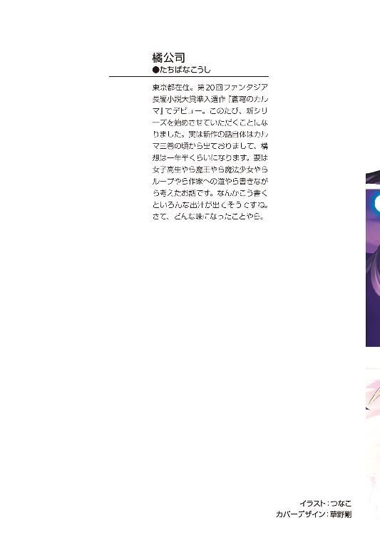
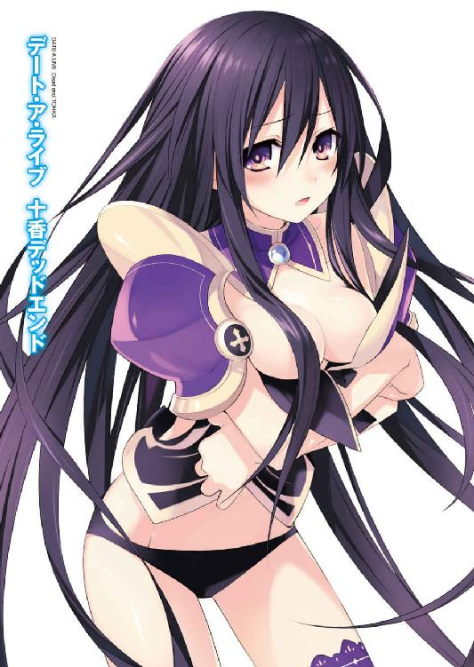
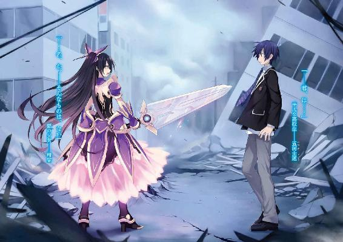
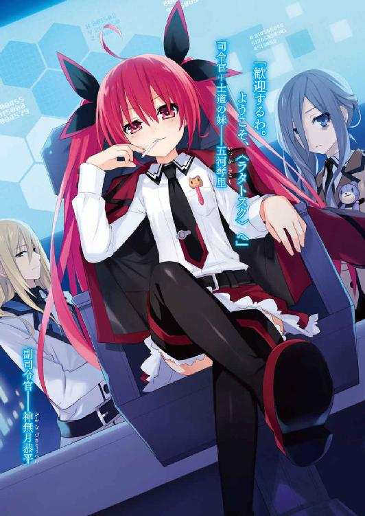
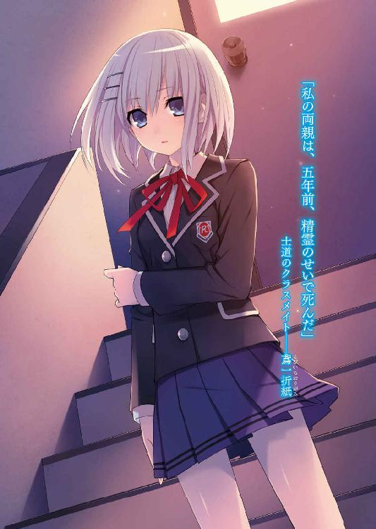
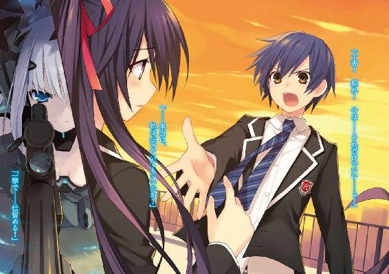
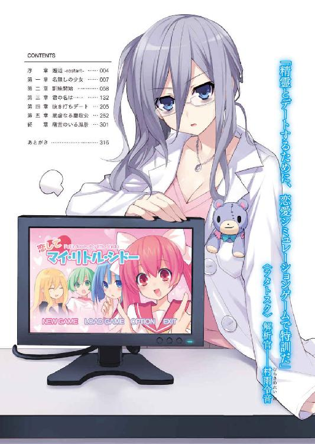
デート・ア・ライブ
十香デッドエンド
橘 公司

本作品の全部または一部を無断で複製、転載、配信、送信したり、ホームページ上に転載することを禁止します。また、本作品の内容を無断で改変、改ざん等を行うことも禁止します。
本作品購入時にご承諾いただいた規約により、有償・無償にかかわらず本作品を第三者に譲渡することはできません。
本作品を示すサムネイルなどのイメージ画像は、再ダウンロード時に予告なく変更される場合があります。
本作品は縦書きでレイアウトされています。
また、ご覧になるリーディングシステムにより、表示の差が認められることがあります。
口絵・本文イラスト つなこ
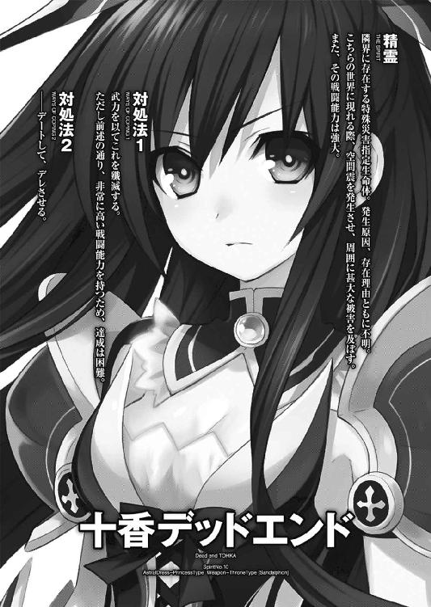
序章 邂逅 -restart-
──息を呑む。
それは、あまりに非現実的な光景だった。
消し取られたかのように破壊された街並み。
隕石でも落ちてきたとしか思えない、巨大なクレーター。
空を舞う、幾つもの人影。
全てが夢か幻としか思えない、馬鹿げた景色。
だけれど士道は、そんな異常な世界を、朧気にしか見ていなかった。
──そんなものよりも遥かに異常なものが、士道の目の前にあったからだ。
それは、少女だった。
奇妙な光のドレスを纏った少女が一人、立っていた。
「ぁ────」
嘆息に、微かな声が混じって消える。
他のどんな要素も不純物に成り下がってしまうくらいに、その少女の存在は圧倒的だった。
金属のような、布のような、不思議な素材で構成されたドレスも確かに目を引いた。
そこから広がった光のスカートも、気を失うほどに綺麗だった。
しかし彼女自身の姿容は、それすらも脇役に霞ませる。
肩に腰に絡みつくように煙るは、長い闇色の髪。
凜と蒼穹を見上げるは、何とも形容しがたい不思議な色を映す双眸。
女神にさえ嫉妬を覚えさせるであろう貌を物憂げに歪め、静かに唇を結んでいるその様は。
視線を、
注意を、
心をも、
──一瞬にして、奪い去った。
それくらい、
あまりにも、
尋常でなく、
暴力的なまでに、美しい。
「──君、は......」
呆然と。
士道は、声を発していた。
涜神としてのどと目を潰されることすら、思考のうちに入れて。
少女が、ゆっくりと視線を下ろしてくる。
「......名、か」
心地のいい調べの如き声音が、空気を震わせた。
しかし。
「──そんなものは、ない」
どこか悲しげに、少女は言った。
「────っ」
そのとき。
二人の目が交わり──五河士道の物語は、始まった。
第一章 名無しの少女
「あー......」
寝起きの気分は最悪だった。
だってそりゃ、起きたとき自分の腹やら胸やら頭やらを踏みつけながら、妹が情熱的にサンバのリズムを刻んでいたら、一部の特殊な人間以外は皆不快に思うだろう。
四月一〇日、月曜日。
昨日で春休みが終わり、今日から学校という朝。
五河士道はしょぼしょぼする目をこすりながら、低くうなるような声を発した。
「あー、琴里よ。俺の可愛い妹よ」
「おお!?」
そこでようやく士道が起きていることに気づいたのだろう。士道のお腹の上に足をのっけていた妹──琴里が、中学校の制服を翻しながらこちらに顔を向ける。
二つに括られた長い髪が揺れ、どんぐりみたいな丸っこい双眸が士道を捉えた。
ちなみに朝っぱらから人様を踏みつけにしているわりには、「しまった！」とか「ばれた！」みたいな後ろ暗さは全然見受けられない。どちらかというと、士道の起床を素直に喜んでいるように見えた。
ついでに士道の位置からだと見事にパンツ丸見えである。
パンチラとかいうレベルではない。はしたないにもほどがある。
「なんだ!? 私の可愛いおにーちゃんよ！」
琴里が、足を退ける様子もなくそう言ってくる。
念のため言うと士道は可愛くはない。
「いや、下りろよ。重いよ」
士道が言うと、琴里は大仰にうなずいてベッドから飛び降りた。
士道の腹にボディブローのような衝撃を残して。
「ぐふっ！」
「あははは、ぐふだって！ 陸戦用だー！ あはははは！」
「............」
士道は無言で、布団を被りなおした。
「あー！ こらー！ なんでまた寝るんだー！」
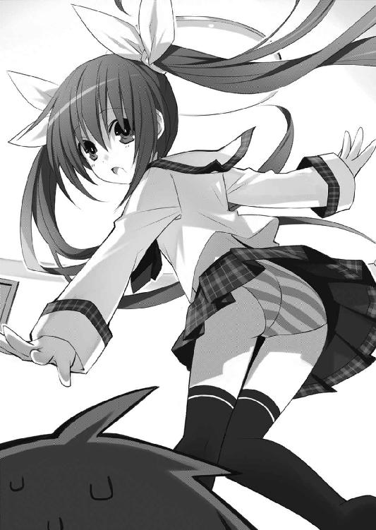
琴里が声を張り上げ、士道をゆっさゆっさと揺すってくる。
「あと一〇分......」
「だーめー！ ちゃんと起きるのー！」
起き抜けのぼうっとした頭がシェイクされる感覚に眉をひそめながら、士道は苦しげに唇を開いた。
「に、逃げろ......」
「え？」
「......実は俺は『とりあえずあと一〇分寝ていないと妹をくすぐり地獄の刑に処してしまうウィルス』、略してＴ--ウィルスに感染しているんだ......」
「な、なんだってー！」
琴里が、なんか宇宙人の隠されたメッセージを知った人のように驚く。
「逃げろ......俺の意識があるうちに......」
「で、でも、おにーちゃんはどーなるんだ!?」
「俺のことはいい......おまえさえ助かってくれれば......」
「そんな！ おにーちゃん！」
「がーっ！」
「ギャ──────っ！」
士道が布団を吹き飛ばし、両手をわきわきさせながら叫ぶと、琴里は凄まじい悲鳴を上げて逃げていった。
「......ったく」
息を吐き、再び布団を被り直す。時計を見てみると、まだ六時前であることがわかった。
「なんて時間に起こしやがる......」
と、ぼやくように言ってからはたと思い直す。
寝ぼけていた脳が緩慢に覚醒していくのと一緒に、昨晩の記憶が甦ってきたのである。
昨日から父と母は仕事の関係で出張に行ってしまっている。
そのためしばらくの間士道が台所に立つことになったのだが、寝起きの悪い士道は琴里に目覚ましを依頼していたのだった。
「あー......」
少し悪いことをしたかなあと頭をかき、むくりと身を起こす。
適当に寝癖を手で押さえながらあくびを一つこぼし、士道はのたのたと部屋を出た。
と、その際、壁に掛けられていた小さな鏡が目に入る。
最近散髪をしていないためだろう、前髪に視界を侵略されつつある男が、やぶにらみっぽい視線を向けてきていた。
「............」
視力の低下に伴って、少し悪くなってしまった人相にため息を吐き、階段を下りてリビングに入る。
「......あ？」
──と、そこには、いつもと微妙に違う景色が広がっていた。
リビングの真ん中に置かれていた木製のテーブルが倒され、まるでバリケードのようになっている。ついでにその後ろに、ツインテールの頭がぷるぷる震えているのが見えた。
「............」
足音を殺してテーブルの横側に回り込む。
案の定、琴里が体育座りをしながら身を震わせていた。
「がーっ」
「ギャー！ ギャァァァっ！」
士道が肩をつかむと、琴里は欠片も色気のない絶叫を上げて手足をばたつかせた。
「落ち着け落ち着け。いつものにーちゃんだ」
「ぎゃー！ ぎゃー......あ？ お、おにーちゃん？」
「そうそう」
「こ、怖くない？」
「怖くない怖くない。俺、琴里トモダーチ」
「お、おー」
士道が片言で言ってやると、強ばった琴里の顔から、緊張が抜けていく。
まるで心を開いた野生のキツネリスみたいだった。
「悪い悪い。すぐ朝飯準備するから」
言って琴里の手を取って立ち上がらせてから、テーブルを元の位置に戻すと、士道は台所に足を向けた。
二人揃って大手のエレクトロニクス企業に勤めている両親は、たびたび一緒に家を空けることがあった。
その際の食事当番はいつも士道が担当しているので、もう手慣れたものである。実際、母より調理器具の扱いには自信があった。
と、士道が冷蔵庫から卵を取り出すのと同時に、背後からテレビの音声が聞こえてくる。どうやら心拍を落ち着けた琴里が電源を入れたらしい。
そういえば琴里は毎朝、星座占いと血液型占いをハシゴするのが日課だった。
とはいえ大体の占いコーナーは、番組の最後と相場が決まっている。琴里は一通りチャンネルを変えたあと、つまらなさそうにニュース番組を眺め始めた。
と。
『──今日未明、天宮市近郊の──』
「ん？」
いつもはＢＧＭくらいの役割しか果たさないニュースの内容に、眉を跳ね上げる。
理由は単純。明瞭なアナウンサーの声で、聞き慣れた街の名前が発せられたからだ。
「うん？ なんだ、こっから結構近いな。何かあったのか？」
カウンターテーブルに身を乗り出すようにしながら目を細め、画面に視線を放る。
画面には、滅茶苦茶に破壊された街の様子が映し出されていた。
建造物や道路が崩落し、瓦礫の山と化している。
まるで隕石の衝突か空襲でもあったのかと疑いたくなるような惨状だった。
士道は眉をひそめると、息とともに言葉を吐いた。
「ああ......空間震か」
うんざりと首を振る。
空間の地震と称される、広域震動現象。
発生原因不明、発生時期不定期、被害規模不確定の爆発、震動、消失、その他諸々の現象の総称である。
まるで大怪獣が気まぐれに現れ、街を破壊していくかのような理不尽極まりない現象。
この現象が初めて確認されたのは、およそ三〇年前のことである。
ユーラシア大陸のど真ん中──当時のソ連、中国、モンゴルを含む一帯が、一夜にしてくりぬかれたかのように消失した。
士道たちの世代になれば、教科書の写真で嫌というほど目にしている。
まるで地上にあるものを一切合切削り取ってしまったかのように、本当に、何もなくなっていたのだ。
死傷者、およそ一億五〇〇〇万人。人類史上類を見ない最大最悪の災害である。
そしてその後約半年間、規模は小さいものの、世界各地で似たような現象が発生した。
士道の覚えている限りでは──およそ五〇例。
地球上の全大陸、北極、海上、さらには小さな島々でも発生が確認された。
無論、日本も例外ではない。
ユーラシア大空災の六か月後、東京都南部から神奈川県北部にかけての一帯が、まるで消しゴムでもかけたかのように、円状に焦土と化したのである。
そう──ちょうど今、士道たちが住んでいる地域だ。
「でもいっときは全然起こらなくなったんだろ？ なんでまた増え始めたんだろうな」
「どうしてだろねー」
士道が言うと、琴里がテレビに視線をやったまま首を傾げた。
そう。その南関東大空災を最後に、空間震はしばらくの間確認されなくなったのだ。
だが五年ほど前、再開発された天宮市の一角で空間震が確認されたのを皮切りに、またちらほらと、その原因不明の現象が確認され始めたのである。
しかもその多くが──日本で。
もちろん人類も、その空白の二五年の間に何もしていなかったわけではない。
再開発が成された地域をはじめとして、三〇年前から、全国の地下シェルター普及率は爆発的に上昇している。
加えて、空間震の兆候を事前に観測することも可能になったし、極めつけとして自衛隊の災害復興部隊なんてものもある。
被災地に赴き、崩落した施設、道路などを再建することを目的に組織された部隊なのだが──その仕事ぶりはまさに魔法としか言いようがない。
何しろ、滅茶苦茶に破壊された街を、僅かな期間のうちに、もとあった状態にまで復元してしまうのだ。
作業風景はトップシークレットということで公開されていないが、たった一晩で崩落していたビルが復元されていたのを見たときなど、まるで手品でも見せられているかのような心地になった。
だが、街の修復が早いからといって、空間震の脅威が薄れるというわけでもない。
「なんか、ここら辺一帯って妙に空間震多くないか？ 去年くらいから特に」
「......んー、そーだねー。ちょっと予定より早いかなー」
と、琴里がソファの手すりに上体を預けながら言ってくる。
「早い？ 何がだ？」
「んー、あんでもあーい」
士道は首を傾げた。
琴里の言葉の内容というよりは、その声が後半から少しくぐもったのが気になって。
「............」
無言でカウンターテーブルを迂回し、ソファにもたれかかった琴里の側に歩いていく。
琴里もそれに気づいたのか、士道が近づくのに合わせて、徐々に顔を背けていった。
「琴里、ちょっとこっち向け」
「............」
「てい」
「ぐぎゅっ」
琴里の頭に手を置き、ぐりっと方向を転換させる。彼女ののどから変な声が鳴った。
そして琴里の口元に予想通りのものを見つけて、士道は「やっぱり」と呟いた。
朝ご飯前だというのに、琴里は口に大好物のチュッパチャプスをくわえていたのだ。
「こら、飯の前にお菓子食べるなって言ってるだろ」
「んー！ んー！」
飴を取り上げようと棒を引っ張るも、琴里は唇をきゅっとすぼめて抵抗してきた。
士道が力を入れた方向に顔が歪み、せっかくの可愛らしい顔立ちがブチャイク極まりないことになっている。
「......ったく、ちゃんと飯も食うんだぞ？」
結局は士道が折れた。琴里の頭をぐりぐりやって、台所に戻っていく。
「おー！ 愛してるぞおにーちゃん！」
士道は適当に手を振って作業に戻った。
「......と、そういえば今日は中学校も始業式だよな？」
「そうだよー」
「じゃあ昼時には帰ってくるってことか......琴里、昼飯にリクエストはあるか？」
琴里は「んー」と思案するように頭を揺らしてから、しゃきッ、と姿勢を正した。
「デラックスキッズプレート！」
近所のファミレスで出しているお子様ランチだった。
士道は直立の姿勢をとると、そのまま上半身を四五度前に傾ける。
「当店ではご用意できかねます」
「ええー」
キャンディの棒をぴこぴこさせながら、琴里が不満そうな声を上げる。
士道はふうと嘆息しながら肩をすくめた。
「......ったく、仕方ないな、せっかくだから昼は外で食うか」
「おー！ 本当かー！」
「おう。んじゃ、学校終わったらいつものファミレスで待ち合わせな」
士道が言うと、琴里は興奮した様子で手をブンブンと振った。
「絶対だぞ！ 絶対約束だぞ！ 地震が起きても火事が起きても空間震が起きてもファミレスがテロリストに占拠されても絶対だぞ！」
「いや、占拠されてちゃ飯食えねえだろ」
「絶対だぞー！」
「はいはい、わかったわかった」
士道が言うと、琴里は「おー！」と元気よく手を上げた。
我ながら少し甘いかもと思わなくもない士道だったが、まあ、今日は特別である。
今晩からしばらく台所に立たねばならないわけだし......何より、今日は二人とも始業式なのだ。これくらいの贅沢はしてもいいだろう。
まあ、七八〇円のお子様ランチが贅沢にあたるかどうかはわからないけれど。
「んー......」
士道は軽く伸びをしながら、台所の小窓を開けた。
何かいいことがありそうなくらい、空は晴れ渡っていた。
◇
士道が高校に着いたのは、午前八時一五分を回った頃だった。
廊下に貼り出されたクラス表を適当に確認してから、これから一年間お世話になる教室に入っていく。
「二年──四組、か」
三〇年前の空間震が起こったあと、東京都南部から神奈川県──つまりは空間震で更地になった一帯は、さまざまな最新技術のテスト都市として再開発が進められてきた。
士道が通う都立来禅高校も、そんな例の一つである。
都立校とは思えない充実した設備を誇るうえ、数年前に創立されたばかりのため内外装も損傷がほとんどない。もちろん旧被災地の高校らしく、地下シェルターも最新のものが設えられている。
そのためか入試倍率は低くなく、「家が近いから」だけの理由で受験を決めた士道は、少々苦労をすることになったのだが。
「んー......」
小さくうなり、何とはなしに教室を見回してみる。
まだホームルームまでは少し時間があったが、もう結構な人数が揃っていた。
同じクラスになれたのを喜びあう者、一人机についてつまらなさそうにしている者、反応は様々だったが......あまり士道の知った顔は見受けられない。
と、士道が黒板に書かれた座席表を確認しようと首を動かすと、
「──五河士道」
後方から不意に、静かで抑揚のない声がかけられた。
「ん......？」
聞き覚えのない声である。不思議に思い、振り向く。
そこには、細身の少女が一人、立っていた。
肩に触れるか触れないかくらいの髪に、人形のような顔が特徴的な少女である。
この人形のような、という形容に異を唱える人間は、恐らくそういないだろう。
まるで正確に測量された人工物のように端正であるのと同時に──彼女の顔には、まったく表情のようなものが窺えなかったのだ。
「え......」
士道はきょろきょろとあたりを見回してから、首を傾げた。
「......俺？」
自分以外のイツカシドウさんが見あたらないのを確認してから、自分を指さす。
「そう」
少女はさしたる感慨もなさそうに、まっすぐ士道の方を見ながら小さくうなずいた。
「な、なんで俺の名前知ってるんだ......？」
士道が訊くと、少女は不思議そうに首を傾げた。
「覚えていないの？」
「......う」
「そう」
士道が言い淀んでいると、少女は特に落胆らしいものも見せず、短く言って窓際の席に歩いていった。
そのまま椅子に座ると、机から分厚い技術書のようなものを取り出し、読み始める。
「な......なんだ、一体」
士道は頬をかき、眉をひそめた。
何やら士道のことを知っているふうだったが、どこかで会ったことがあっただろうか。
「とうッ！」
「げふっ」
と、士道が頭を悩ませていると、ぱちーん！ と見事な平手打ちが背にたたき込まれた。
「ってぇ、何しやがる殿町！」
こちらの犯人はすぐにわかった。背をさすりながら叫ぶ。
「おう、元気そうだなセクシャルビースト五河」
士道の友人・殿町宏人は、同じクラスであったことを喜ぶよりも先に、ワックスで逆立てられた髪と筋肉質の身体を誇示するように、腕を組み軽く身を反らしながら笑った。
「......セク......なんだって？」
「セクシャルビーストだ、この淫獣め。ちょっと見ない間に色気づきやがって。いつの間にどうやって鳶一と仲良くなりやがったんだ、ええ？」
言って、殿町が士道の首に腕を回し、ニヤニヤしながら訊いてくる。
「鳶一......？ 誰だそれ」
「とぼけんじゃねえよ。今の今まで楽しくお話ししてたじゃねえか」
言いながら、殿町があごをしゃくって窓際の席を示す。
そこには、先ほどの少女が座っていた。
ふと、士道の視線に気づいたのか、少女が目を書面から外し、こちらに向けてくる。
「......っ」
士道は息を詰まらせると、気まずそうに目を背けた。
反して、殿町が馴れ馴れしく笑って手を振る。
「............」
少女は、別段何も反応を示さないまま、手元の本に視線を戻した。
「ほら見ろ、あの調子だ。うちの女子の中でも最高難度、永久凍土とか米ソ冷戦とかマヒャデドスとまで呼ばれてんだぞ。一体どうやって取り入ったんだよ」
「はあ......？ な、なんの話だよ」
「いや、おまえホントに知らないのかよ」
「......ん、前のクラスにあんな子いたっけか？」
士道が言うと、殿町はまたも信じられないといった具合に両手を広げて驚いたような顔を作った。欧米人のようなリアクションをする奴である。
「鳶一だよ、鳶一折紙。ウチの高校が誇る超天才。聞いたことないのか？」
「いや、初めて聞くけど......すごいのか？」
「すごいなんてモンじゃねえよ。成績は常に学年首席、この前の模試に至っちゃ全国トップとかいう頭のおかしい数字だ。クラス順位は確実に一個下がることを覚悟しな」
「はあ？ なんでそんな奴が公立校にいるんだよ」
「さぁてね。家の都合とかじゃねえの？」
大仰に肩をすくめながら、殿町が続ける。
「しかもそれだけじゃなく、体育の成績もダントツ、ついでに美人ときてやがる。去年の『恋人にしたい女子ランキング・ベスト13』でも第３位だぜ？ 見てなかったのか？」
「やってたことすら知らん。ていうかベスト13？ 何でそんな中途半端な数字なんだ？」
「主催者の女子が13位だったんだよ」
「......ああ」
士道は力無く苦笑した。どうしてもランキングに入りたかったらしい。
「ちなみに『恋人にしたい男子ランキング』はベスト358まで発表されたぞ」
「多っ!? 下位はワーストランキングに近いじゃねえか。それも主催者決定なのか？」
「ああ。まったく往生際が悪いよな」
「殿町は何位だったんだ？」
「358位だが」
「主催者おまえかよ！」
「選ばれた理由は、『愛が重そう』『毛深そう』『足の親指の爪の間が臭そう』でした」
「やっぱりワーストランキングだそれ！」
「まあぶっちゃけ、下位ランクには一票も入らない奴らばっかだったからな。マイナスポイントの少なさで勝負だ」
「どんな苦行だよ！ やめりゃあいいだろそんなもん！」
「安心しろ五河。おまえは匿名希望さんから一票入ったから52位だ」
「反応しづれえ！」
「まあ他の理由は『女の子に興味なさそう』『ぶっちゃけホモっぽい』だったが」
「謂われなき中傷に死の鉄槌を！」
「まあ落ち着けって。『腐女子が選んだ校内ベストカップル』では、俺とセットでベスト２にランクインしているぞ」
「これっぽっちも嬉しくねぇぇぇぇぇッ！」
たまらず叫ぶ。１位のカップルが少し気になった。
しかし殿町はさして気にしていない様子（というか、もうすでに何かを乗り越えた様子）で、話を戻そう、と言うように腕組みした。
「まあとにかく、校内一の有名人っつっても過言じゃないわけだ。五河くんの無知ぶりにさすがの殿町さんもびっくりです」
「いや、何キャラだよそれ」
と、士道が言ったところで、一年生の頃から聞き慣れた予鈴が鳴った。
「おっと」
そういえば、まだ自分の席を確認していない。
士道は黒板に書かれた席順に従い、窓側から数えて二列目の席に鞄を置いた。
そこで、気づく。
「......あ」
何の因果か、士道の席は、学年首席様のお隣だったのである。
鳶一折紙は予鈴が鳴り終わる前に本を閉じ、机にしまい込んだ。
そして視線を真っ直ぐ前に向け、定規で測ったかのような美しい姿勢を作る。
「............」
なぜか少し気まずくなって、士道は折紙と同じように視線を黒板の方にやった。
それに合わせるようにして、教室の扉がガラガラと開けられる。そしてそこから縁の細い眼鏡をかけた小柄な女性が現れ、教卓についた。
あたりから、小さなざわめきのようなものが聞こえてくる。
「タマちゃんだ......」
「ああ、タマちゃんだ」
「マジで、やったー」
──おおむね、好意的なもののようだった。
「はい、皆さんおはよぉございます。これから一年、皆さんの担任を務めさせていただきます、岡峰珠恵です」
間延びしたような声でそう言って、社会科担当の岡峰珠恵教諭・通称タマちゃんが頭を下げた。サイズが合っていないのか、微妙に眼鏡がずり落ち、慌てて両手で押さえる。
贔屓目に見ても生徒と同年代くらいにしか見えない童顔と小柄な体躯、それにそののんびりとした性格で、生徒から絶大な人気を誇る先生である。
と、
「......？」
色めきたつ生徒たちの中、士道は表情を強ばらせた。
士道の左隣に座った折紙が、じーっ、と士道の方に視線を送ってきていたのである。
「......っ」
一瞬、目が合う。士道は慌てて視線を逸らした。
一体なぜ士道を見て──いや、別に見てはいけないというわけではないし、もしかしたら士道の先にあるものを見ている可能性だってあるのだけれど、とにかく落ち着かない。
「......な、なんなんだ一体......」
誰にも聞こえないくらいの声でぼやき、士道は頬に汗をひとすじ垂らした。
それから、およそ三時間後。
「五河ー、どうせ暇なんだろ、飯いかねー？」
始業式を終え、帰り支度を整えた生徒たちが教室から出て行く中、鞄を肩がけにした殿町が話しかけてきた。
昼前に学校が終わるなんて、テスト期間以外ではそうない。ちらほらと、友人とどこに昼食を食べに行くかを相談している集団が見受けられる。
士道は一瞬うなずきそうになってから、「あ」と思い直した。
「悪い。今日は先約があるんだ」
「なぬ？ 女か」
「あー、まあ......一応」
「なんと!!」
殿町が両手をＶ字に掲げて片足を上げた、グリコみたいなリアクションをとってくる。
「一体春休みに何があったっていうんだ！ あの鳶一と仲良くお話しするだけじゃ飽きたらず、女と昼飯の約束だと!? 一緒に魔法使いを目指すって誓い合ったじゃねえか！」
「いや、誓った覚えはないが......ていうか、女っていっても琴里だぞ？」
士道が言うと、殿町は安堵したかのようにほうと息を吐いた。
「んだよ、脅かすんじゃねえよ」
「おまえが勝手に驚いたんだろうが」
「でもま、琴里ちゃんなら問題ねえだろ。俺も一緒に行っていいか？」
「ん？ ああ、別に大丈夫だと思うけど......」
と、士道が言った途端、殿町が士道の机に肘をのせ、声をひそめるように言ってくる。
「なあなあ、琴里ちゃんって中二だよな。もう彼氏とかいんの？」
「は？」
「いや、別に他意はねえんだが、琴里ちゃん、三つくらい年上の男ってどうなのかなと」
「......やっぱ却下だ。おまえ来んな」
士道は半眼を作り、いやに顔を近づけてきていた殿町の頬をぐいと押し返した。
「そんな！ お義兄様！」
「お義兄様とか呼ぶな気持ち悪い」
士道が眉をひそめると、殿町はよいしょと身を起こして肩をすくめた。
「はは。ま、俺も兄妹団欒をつっつくほど野暮じゃねえよ。都条例に引っかかんねえ程度に仲良くしてきな」
「おまえはいっつも一言余計だな」
頬をぴくつかせながら言うと、殿町が意外そうな顔を作る。
「だっておめ、琴里ちゃん超可愛いじゃねえか。あんな子と一つ屋根の下とか最高だろ」
「実際に妹がいれば、その意見は間違いなく変わると思うがな」
「あー......それはよく聞くな。妹持ちに妹萌えはいないとか。やっぱ本当なのか？」
「ああ、あれは女じゃない。妹という名の生物だ」
士道がきっぱり断言すると、殿町が苦笑した。
「そういうもんかねえ」
「そういうもんだ。女未満と書いて妹だろうが」
「じゃあ姉は？」
「......女市？」
「すげえ、女性専用都市かよ！」
言って、殿町が笑う。
──と、その瞬間。
ウゥゥゥゥゥゥゥゥゥゥゥゥゥゥゥゥゥゥゥゥゥゥ───────────
「............ッ!?」
教室の窓ガラスをビリビリと揺らしながら、街中に不快なサイレンが鳴り響いた。
「な......なんだ？」
殿町が窓を開けて外を見やる。サイレンに驚いたのか、カラスが何羽も空に飛んでいた。
教室に残っていた生徒たちも、皆会話を止めて目を丸くしている。
と、サイレンに次いで、聞き取りやすいようにするためか、言葉を一拍ずつ区切るようにして、機械越しの音声が響いてきた。
『──これは訓練では、ありません。これは訓練では、ありません。前震が、観測されました。空間震の、発生が、予想されます。近隣住民の皆さんは、速やかに、最寄りのシェルターに、避難してください。繰り返します──』
瞬間、静まり返っていた生徒たちが、一斉に息を呑む音が聞こえた。
──空間震警報。
皆の予感が、確信に変わる。
「おいおい......マジかよ」
殿町が額に汗を滲ませながら、乾いた声を発する。
だが──士道や殿町を含め、教室の生徒たちは、顔に緊張と不安こそ滲ませているものの、比較的落ち着いてはいた。
少なくとも、恐慌状態に陥ったりする生徒は見受けられない。
この街は三〇年前の空間震によって深刻な被害を受けているため、士道たちは幼稚園の頃から、しつこいほどに避難訓練を繰り返しさせられていたのである。
加え、ここは高校。全校生徒を収容できる規模の地下シェルターが設えられている。
「シェルターはすぐそこだ。落ち着いて避難すれば問題ない」
「お、おう、そうだな」
士道の言葉に、殿町がうなずいた。
走らない程度に急ぎ、教室から出る。
廊下には、もう既に生徒たちが溢れ、シェルターに向かって列を作っていた。
と──士道は眉をひそめた。
そんな中に一人だけ、列と逆方向──昇降口の方向に走っている女子生徒がいたからだ。
「鳶一......？」
そう、スカートをはためかせながら廊下を駆けていたのは、あの鳶一折紙だった。
「おい！ 何してんだ！ そっちにはシェルターなんて──」
「大丈夫」
折紙は一瞬足を止め、それだけ言って、再び駆け出していった。
「大丈夫って......何が」
士道は怪訝そうに首を捻りながらも、殿町とともに生徒の列に並んだ。
折紙のことは気になったが──もしかしたら忘れ物でもしてきたのかもしれない。
実際、警報が発令されたからといって、すぐさま空間震が起こるというわけでもない。すぐ戻ってくれば間に合うだろう。
「お、落ち着いてくださぁーい！ だ、大丈夫ですから、ゆっくりぃー！ おかしですよ、おーかーしー！ おさない・かけない・しゃれこうべーっ！」
と、そこに、生徒を誘導している珠恵の声が響いてきた。
同時に、生徒たちのくすくすという笑い声が漏れ聞こえてくる。
「......自分より焦ってる人見るとなぜか落ち着くよな」
「あー、なんとなくわかる気がする」
士道が苦笑すると、殿町も似たような表情を作って返してきた。
実際、なんとも頼りないタマちゃん教諭の様子に、生徒たちは不安を感じるというより、緊張をほぐされているように見える。
と、士道はあることを思い起こし、ポケットを探って携帯電話を取り出した。
「ん、どうしたよ五河」
「いや、ちょっとな」
適当に言葉を濁しながら、着信履歴から『五河琴里』の名を選んで電話をかける。
が──繋がらない。何度か試すが、結果は一緒だった。
「......駄目か。ちゃんと避難してるだろうな、あいつ」
まだ中学校を出ていなければ大丈夫だろう。
問題は、もうすでに学校を出てファミレスに向かっている場合だった。
いや、あの近くにも公共シェルターはあるはずだし、普通に考えれば問題ないのだが......どうも、士道は不安が拭いきれなかった。
警報が鳴っても意に介さず、忠犬のごとく士道を待っている琴里の姿が、なんとなく想像できてしまったのである。
脳裏に、朝琴里が言っていた「絶対だぞー！」の言葉がエコーで渦巻く。
「ま、まあ空間震が起きても絶対約束とは言ってたけど......さすがにそこまで馬鹿では......っと、そうだ、あれがあった」
確か琴里の携帯は、ＧＰＳ機能を用いた位置確認サービスに対応していたはずである。
携帯を操作すると、画面に上から見た街の地図と、赤いアイコンが表示された。
「────ッ」
それを見て、士道は息を詰まらせた。
琴里の位置を示すアイコンは、約束のファミレスの真ん前で停止していたのだ。
「あんの、馬鹿......ッ」
毒づき、画面を消さないまま携帯を閉じて、士道は生徒の列から抜け出した。
「お、おいッ、どこいくんだ五河！」
「悪い！ 忘れ物だ！ 先行っててくれ！」
殿町の声を背に受けながら、列を逆走して昇降口に出る。
そのまま速やかに靴を履き替えると、士道は転びそうなくらい前のめりになって外へと駆け出していった。
校門を抜け、学校前の坂道を転がるように駆け下りる。
「......っ、こんなんなったら、普通避難するだろうが......！」
士道は、足を最高速で動かしながら叫びを上げた。
士道の視界に広がっていたのは、なんとも不気味な光景だったのである。
車の通らない道路に、人影のない街並み。
街路にも、公園にも、コンビニにも、誰一人として残っていない。
つい先ほどまで、誰かがそこにいたことを思わせる生活感を残したまま、人間の姿だけが街から消えている。まるでホラー映画のワンシーンだった。
三〇年前の大空災以来、神経質なほど空間震に対して敏感に再開発されたのがこの天宮という街である。公共施設の地下はもちろん、一般家庭のシェルター普及率も全国１位という話だ。
それに最近の空間震の頻発も手伝ってか──避難は迅速だった。
だというのに。
「なんで馬鹿正直に残ってやがんだよ......っ！」
叫んで、走りながら携帯を開く。
琴里を示すアイコンは、やはりファミレスの前から動いていなかった。
士道は琴里をデコピン乱舞の刑に処すことを決意しながら、ファミレスを目指して足を高速で動かし続けた。
ペース配分も何もない。ただひたすらに、全速力でアスファルトの道を駆ける。
足が痛み、手の指先が痺れる。
のどが張りつき目眩がして、口の中がカラカラになる。
だが士道は止まらなかった。危険だとか疲労だとかは思考の外に放って、琴里のもとへ、ただひたすらに走る──！
と──
「......っ、──？」
士道は走りながら、顔を上方に向けた。視界の端に、何か動くものが見えた気がする。
「なんだ......っ、あれ......」
士道は眉をひそめた。
数は三つか......四つか。空に、何やら人影のようなものが浮いている。
だが、すぐにそんなものを気にしてはいられなくなった。
なぜなら──
「うわ......ッ!?」
士道は、思わず目を覆った。
突然進行方向の街並みが、まばゆい光に包まれたのだ。
次いで、耳をつんざく爆音と、凄まじい衝撃波が士道を襲う。
「んな......っ」
士道は反射的に腕で顔を覆い、足に力を入れたが──無駄だった。
大型台風もかくやというほどの風圧に煽られ、バランスを崩して後方に転げてしまう。
「ってえ......一体なんだってんだ......ッ」
まだ少しチカチカする目をこすりながら、身を起こす。
「──は──？」
と、士道は、自分の視界に広がる光景を見て、間の抜けた声を発した。
だって、今の今まで目の前にあった街並みが、士道が目を瞑った一瞬のうちに──
跡形もなく、無くなっていたのだから。
「な、なんだよ、なんだってんだよ、これは......ッ」
呆然と、呟く。
何の比喩でも冗談でもない。
まるで隕石でも落ちたかのように。
否、どちらかといえば、地面が丸ごと消し去られたかのように。
街の風景が、浅いすり鉢状に削り取られていた。
そして、クレーターのようになった街の一角の、中心。
そこに、何やら金属の塊のようなものが聳えていた。
「なんだ......？」
遠目のため細かい形状までは見取れないが──ロールプレイングゲームなんかで王様が座っている、玉座のようなフォルムをしているように見える。
だが、重要なのはそこではない。
その玉座の肘掛けに足をかけるようにして、奇妙なドレスを纏った少女が一人、立っていたのである。
「あの子──なんであんなところに」
朧気にしか見えないが、長い黒髪と、不思議な輝きを放つスカートだけは見て取ることができた。女の子であることは恐らく間違いないだろう。
と、少女が気怠そうに首を回し、ふと士道の方に顔を向けた。
「ん......？」
士道に気づいた......のだろうか。遠すぎてよくわからない。
だが士道が首をひねっていると、少女はさらに動きを続けた。
ゆらりとした動作で、玉座の背もたれから生えた柄のようなものを握ったかと思うと、それをゆっくりと引き抜く。
それは──幅広の刃を持った、巨大な剣だった。
虹のような、星のような幻想的な輝きを放つ、不思議な刃。
少女が剣を振りかぶると、その軌跡をぼんやりとした輝きが描いていった。
そして──
「い......ッ!?」
少女が、士道の方に向かって、剣を横薙ぎにブン、と振り抜いてきた。
咄嗟に頭を下げる。──否、正しく言えば、士道の身体を支えていた腕から力が抜け落ち、ガクンと上体の位置が下がったと言うべきだろうか。
「────な」
その、今まで士道の頭があった位置を、刃の軌跡が通り抜けていった。
もちろん、剣が直接届くような距離ではない。
だが実際──
「......は──」
士道は目を見開いて首を後ろへ振った。
士道の後方にあった家屋や店舗、街路樹や道路標識などが、一瞬のうちにみんな同じ高さに切り揃えられていた。
一拍遅れて、遠雷のような崩落の音が響いてくる。
「ひ......ッ!?」
士道は理解の範囲を超えた戦慄に心臓を縮ませた。
──意味が、わからない。
ただ理解できたのは、さっき頭を下げていなければ、今頃自分も後方の景色と同じように、ほどよい大きさにダウンサイジングされていたということだけだった。
「じょ、冗談じゃねえ......っ！」
士道は、抜けた腰を引っ張るようにして後ずさった。少しでも早く、少しでも遠く、この場から逃れなければ──！
だが。
「──おまえも......か」
「......っ!?」
ひどく疲れたような声が、頭の上から響いてきた。
視覚が、一拍遅れて思考に追いつく。
目の前に、一瞬前まで存在しなかった少女が、立っていたのである。
そう、それは──今の今まで、クレーターの中心にいた少女だった。
「あ──」
意図せず、声が漏れる。
歳は士道と同じか、少し下くらいだろうか。
膝まであろうかという黒髪に、愛らしさと凜々しさを兼ね備えた貌。
その中心には、まるで水晶に様々な色の光を多方向から当てているかのような、不思議な輝きを放つ双眸が鎮座している。
装いは、これまた奇妙なものだった。布なのか金属なのかよくわからない素材が、お姫様のドレスのようなフォルムを形作っている。さらにその継ぎ目やインナー部分、スカートなどにいたっては、物質ですらない不思議な光の膜で構成されていた。
そしてその手には、身の丈ほどあろうかという巨大な剣が握られている。
状況の異常さ。
風貌の奇異さ。
存在の特異さ。
どれも、士道の目を引くには十分に過ぎた。
だけれど。
嗚呼、だけれども。
士道が目を奪われた理由に、そんな不純物は含まれていなかった。
「──、──」
一瞬の間。
死の恐怖も、呼吸をすることすらも忘れ、少女に目を釘づけられる。
それくらい。
少女は、それこそ暴力的なまでに──美しかったのである。
「──君、は......」
呆然と。
士道は、声を発していた。
涜神としてのどと目を潰されることすら、思考のうちに入れて。
少女が、ゆっくりと視線を下ろしてくる。
「......名、か」
心地のいい調べの如き声音が、空気を震わせた。
しかし。
「──そんなものは、ない」
どこか悲しげに、少女は言った。
「────っ」
そのとき。士道と少女の目が、初めて交わった。
それと同時に、名無しの少女が、ひどく憂鬱そうな──まるで、今にも泣き出してしまいそうな表情を作りながら、カチャリという音を鳴らして剣を握り直す。
「ちょっ......、待った待った！」
その小さな音に、戦慄が蘇ってくる。士道は必死で声を上げた。
だが少女は、そんな士道に不思議そうな目を向けてくる。
「......なんだ？」
「な、何しようとしてるんだよ......っ！」
「それはもちろん──早めに殺しておこうと」
さも当然のごとく言った少女に、顔を青くする。
「な、なんでだよ......っ！」
「なんで......？ 当然ではないか」
少女は物憂げな顔を作りながら、続けた。
「──だっておまえも、私を殺しに来たんだろう？」
「は────？」
予想外の答えに、士道はポカンと口を開けた。
「......っ、そんなわけ、ないだろ」
「────何？」
そう言った士道に、少女は驚きと猜疑と困惑の入り交じったような目を向けてきた。
だが、少女はすぐ眉をひそめると、士道から視線を外し、空に顔を向けた。
つられるように士道も目を上方にやり──
「んな......ッ!?」
これ以上ないほど目を見開き、息を詰まらせた。
何しろ空には奇妙な格好をした人間が数名飛んでいて──あまつさえ、手に持っていた武器から、士道と少女目がけてミサイルらしきものをいくつも発射してきたのだから。
「ぅ、わあぁぁぁぁぁぁぁぁぁッ──!?」
思わず、叫びを上げる。
だが──数秒経っても、士道の意識ははっきりしたままだった。
「え......？」
呆然と、声を漏らす。
空から放たれたミサイルが、少女の数メートル上空で、見えない手にでも掴まれたかのように静止していた。
少女が、気怠げに息を吐く。
「......こんなものは無駄と、何故学習しない」
言って少女が、剣を握っていない方の手を上にやり、グッと握る。
すると何発ものミサイルが圧縮されるようにへしゃげ、その場で爆発した。
爆発の規模も恐ろしく小さい。まるで、威力が内側へ引っ張られているかのようだった。
空を舞っている人間たちが狼狽するのが、なんとなくだがわかる。
だが、攻撃をやめようとはしない。次々とミサイルを撃ち込んでくる。
「──ふん」
少女は小さく息を吐くと、まるで泣き出してしまいそうな顔を作った。
先ほど士道に剣を向けようとしたときと、同じ顔。
「────っ」
その表情に、士道は命の危機に瀕したときよりも大きく心臓が跳ねるのを感じた。
なんとも、奇妙な光景だった。
少女が何者なのかはわからない。上空にいる人間たちが何者なのかもまた、わからない。
だけれどこの少女が、上空を飛ぶ人間たちよりも強大な力を有していることだけは、なんとなく理解できた。
それゆえの、漠然とした疑問。
その、最強者が。
──なんで、こんな顔を、するのだろう。
「......消えろ、消えろ。一切、合切......消えてしまえ......っ！」
そう、言いながら。
彼女の瞳のごとく不思議な輝きを放つ剣が、空に向けられた。
疲れたように、悲しむように、少女が剣を無造作に一振りする。
瞬間──風が、嘶いた。
「............っ、うわ......ッ！」
凄まじいまでの衝撃波があたりを襲い、太刀筋の延長線上の空に、斬撃が飛んでいく。
上空を飛行していた人間たちは慌ててそれを回避し、その場を離脱していった。
だが次の瞬間、別の方向から、少女目がけて凄まじい出力の光線が放たれた。
「......っ！」
思わず目を覆う。
その光線はやはり少女の上空で見えない壁にでも当たったかのように掻き消された。あたかも夜空に打ち上げられた花火の如く、四方八方に煌めきを散らして美しく弾け飛ぶ。
そしてその光線に続くように、士道の後方に何者かが舞い降りた。
「な、なんなんだよ次から次へと......ッ！」
もうさっきから意味がわからない。
悪質な白昼夢でも見ている気分だった。
だが──そこに降り立った人影を見て、士道は身体を硬直させた。
機械を着ている、とでも言うのだろうか。
全身を見慣れないボディスーツで覆った少女である。
背には大きなスラスターがついており、手にはゴルフバッグのような形状の武器を携えていた。
士道が身を凍らせた理由は単純だった。少女の顔に、見覚えがあったのである。
「鳶一──折紙......？」
今朝、殿町から教えてもらった名を呟く。
そう、そのやたらメカニックな格好をした少女は、クラスメートの鳶一折紙だった。
折紙がちらと士道を一瞥する。
「五河士道......？」
そして、返答のように士道の名を呼んだ。
ぴくりとも表情を変えず。しかしほんの少しだけ、怪訝そうな色を声にのせて。
「......は？ な、なんだその格好──」
間抜けな質問と自覚しながらも、そんな声を発する。
一気にいろんなことが起こりすぎていて、何から気にすればいいのかわからなかった。
だが、折紙はすぐに士道から目を外し、ドレスの少女に向き直った。
それはそうだろう、何しろ、
「──ふん」
少女が先ほどと同じように、手にした剣を折紙に向けて振り抜いたのだから。
折紙は即座に地面を蹴ると、剣の太刀筋の延長線上から身をかわし、そのまま素晴らしい速さで少女に肉薄した。
いつの間にやら折紙の手にした武器の先端には、光で構成された刃が出現している。
折紙はそれを、少女目がけて思い切り振り下ろした。
「──ぬ」
少女が微かに眉根を寄せ、手にしていた剣でその一撃を受け止める。
──瞬間。
少女と折紙の攻撃が交わった一点から、凄まじい衝撃波が発せられた。
「ちょ......ッ、う、わぁぁぁぁぁぁッ──!?」
情けない叫びを上げながら、身を丸めてどうにかそれをやり過ごす。
折紙が弾かれる格好で、二人は一旦距離を離すと、油断なく武器を構えて睨み合った。
「............」
「............」
士道を挟んで、謎の少女と折紙が、鋭い視線を混じらせる。
まさに一触即発。何か小さなきっかけの一つでもあれば、すぐに戦闘が再開されてしまいそうな状態だった。
「............っ」
士道としては気が気でない。
額に汗をびっしり浮かべながら、どうにかこの場から逃れようと、じりじりと横に身体を擦っていく。
だが、そのとき、急にポケットの中の携帯電話が、軽快な着信音を響かせた。
「────！」
「────！」
それが、合図だった。
少女と折紙がほとんど同時に地を蹴り、士道の真ん前で激突する。
「ぎゃぁぁぁぁぁぁっ！」
その圧倒的な風圧に、士道は情けなく転がされ、塀にぶつかって昏倒した。
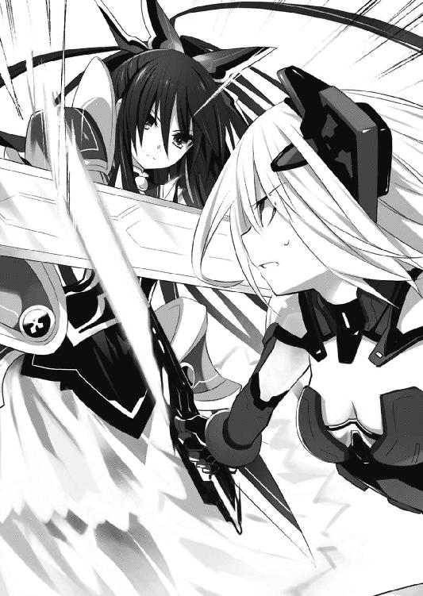
◇
「──状況は？」
真紅の軍服をシャツの上から肩掛けにした少女は、艦橋に入るなりそう言った。
「司令」
艦長席の隣に控えていた男が、軍の教本にでも書いてあるかのような綺麗な敬礼をする。
司令と呼ばれた少女はそれを一瞥だけして、男のすねを爪先で蹴った。
「おうっ！」
「挨拶はいいから、状況を説明なさい」
苦悶、というよりは恍惚とした表情を浮かべる男に言いながら、艦長席に腰掛ける。
男は、即座に姿勢を正した。
「はっ。精霊出現と同時に攻撃が開始されました」
「ＡＳＴ？」
「そのようですね」
ＡＳＴ。対精霊部隊。
精霊を狩り精霊を捕らえ精霊を殺すために機械の鎧を纏った、人間以上怪物未満の現代の魔術師たち。
とはいえ──超人レベルでは、精霊に太刀打ちできないのが実状だった。
それくらい、精霊の力は、桁が違う。
「──確認されているのは一〇名。現在一名が追撃、交戦しています」
「映像出して」
司令が言うと、艦橋の大モニタに、リアルタイム映像が映し出される。
繁華街から通りを二つくらい隔てた広めの道路の上で、二人の少女が巨大な武器を振りながら交戦しているのが確認できた。
武器を打ち合うたびに光が走り、地面が割れ、建造物が倒壊する。およそ現実とは思えない光景である。
「やるわね。──でも、ま、精霊相手じゃどうしようもないでしょ」
「確かにそのとおりですが、我々が何もできていないのもまた、事実です」
「............」
司令は足を上げると、ブーツの踵で男の足を踏みつぶした。
「ぐぎっ！」
男が、この上なく幸せそうな顔を作るのを無視し、司令は小さく嘆息した。
「言われなくてもわかっているわ。──見ているだけというのにも飽きてきたところよ」
「と、いうことは」
「ええ。ようやく円卓会議から許可が下りたわ。──作戦を始めるわよ」
その言葉に、艦橋にいたクルーたちが息を呑むのが聞こえる。
「神無月」
司令は軽く背もたれに身体を預けるようにすると、小さく右手を上げ、人差し指と中指をピンと立てた。まるで、煙草でも要求するように。
「はっ」
男は素早く懐に手をやると、棒付きの小さなキャンディを取り出した。速やかに、しかし丁寧に包装を剥がしていく。
そして司令の隣に跪き「どうぞ」と、司令の指の間にキャンディの棒を挟み込んだ。
司令がそれを口に放り込み、棒をピコピコ動かす。
「......ああ、そういえば肝心の秘密兵器は？ さっき電話に出なかったのだけれど。ちゃんと避難しているんでしょうね？」
「調べてみましょう──と、ん？」
男が、怪訝そうに首をひねる。
「どうかしたの？」
「いえ、あれを」
男が画面を指さす。司令はそちらに目をやり──「あ」と短い声を発した。
精霊とＡＳＴ要員が武器を打ち合っている横で、制服姿の少年が伸びていたのである。
「......ちょうどいいわ。回収しちゃって」
「了解しました」
男は、またも折り目正しく礼をした。
第二章 訓練開始
──久しぶり。
頭の中に、どこかで聞いたことのある声が響く。
──やっと、やっと会えたね、×××。
懐かしむように、慈しむように。
──嬉しいよ。でも、もう少し、もう少し待って。
一体誰だ、と問いかけるも、答えはない。
──もう、絶対離さない。もう、絶対間違わない。だから、
不思議な声はそこで、途切れた。
◇
「............はっ！」
と士道は目を覚まし、
「うわッ！」
とすぐさま叫びを上げた。
それはそうだ。何しろ見知らぬ女性が指で士道の瞼を開き、小さなペンライトのようなもので光を当てていたのである。
「......ん？ 目覚めたね」
妙に眠たげな顔をした女は、その顔に違わぬぼうっとした声でそう言った。
気絶した士道の眼球運動を見ていたらしく、妙に顔が近い。シャンプーの匂いだろうか、微かにいい香りがした。
「だ、だだだだダレデスカ」
「......ん、ああ」
女はぼうっとした様子のまま身体を起こすと、垂れていた前髪を鬱陶しげにかき上げた。
一定の距離が空いたことで、女の全貌が見取れるようになる。
軍服らしき服を纏った、二〇歳くらいの女である。無造作に纏められた髪に、分厚い隈に飾られた目、あとはなぜか軍服のポケットから顔を覗かせている傷だらけのクマのぬいぐるみが特徴的だった。
「......ここで解析官をやっている、村雨令音だ。あいにく医務官が席を外していてね。......まあ安心してくれ。免許こそ持っていないが、簡単な看護くらいならできる」
「............」
まるで安心できない。
だって明らかに、士道よりもこの令音という女性の方が不健康そうに見えるのである。
実際先ほどから、頭で小さく円を描くように身体をふらふらさせている。
と、上体を起こした士道は、今の令音の言葉に引っかかりを覚えた。
「──ここ？」
言って、周囲を見回す。
士道は簡素なパイプベッドの上に寝かされていた。そしてその周りを取り囲むように、白いカーテンが仕切りを作っている。まるで学校の保健室のような空間だった。
ただ少し異なるのは天井だった。何やら無骨な配管や配線が剥き出しになっている。
「ど、どこですか、ここ......」
「......ああ、〈フラクシナス〉の医務室だ。気絶していたので勝手に運ばせてもらったよ」
「〈フラクシナス〉......？ ていうか気絶って......、あ──」
そうだ、士道は謎の少女と折紙の戦闘に巻き込まれ、気を失っていたのだった。
「......え、ええと、質問いいですか。ちょっとよくわからないことが多すぎて──」
頭をくしゃくしゃとやりながら声を発する。
しかし令音は応じず、無言で士道に背を向けた。
「あ──ちょっと......」
「......ついてきたまえ。君に紹介したい人がいる。......気になることはいろいろあるだろうが、どうも私は説明下手でね。詳しい話はその人から聞くといい」
言って、カーテンを開ける。カーテンの外は少し広い空間になっていた。ベッドが六つほど並び、部屋の奥には見慣れない医療器具のようなものが置かれている。
令音は部屋の出入り口と思しき方向に向かって、ふらふらと歩みを進めていった。
が、すぐに足をもつれさせると、ガン！ と音を立てて頭を壁に打ちつけた。
「！ だ、大丈夫ですか！」
「......むう」
一応、倒れはしなかったらしい。令音が壁にもたれかかるようにしながらうめく。
「......ああ、すまんね。最近少し寝不足なんだ」
「ど、どれくらい寝てないんですか」
士道が問うと、令音は考えを巡らせる仕草を見せてから、指を三本立ててきた。
「三日。そりゃ眠いですよ」
「......三〇年、かな？」
「ケタが違ぇ！」
三週間くらいまでだったら覚悟していた士道だったが、さすがに予想外の答えだった。
というか明らかに、彼女の外見年齢を超えている。
「......まあ、最後に睡眠をとった日が思い出せないのは本当だ。どうも不眠症気味でね」
「そ、そうですか......」
「......と。ああ、失礼、薬の時間だ」
と、令音は突然懐を探ると、錠剤の入ったピルケースを取り出した。
そしてピルケースを開けると、錠剤をラッパ飲みの要領で一気に口の中に放り込んだ。
「っておいッ！」
何の躊躇いもなく、夥しい量の錠剤をバリバリグシャグシャバキバキゴクンする令音に、思わずつっこみを入れる。
「......なんだね、騒々しい」
「いや、なんて量飲んでるんですか！ ていうか何の薬ですか!?」
「......全部睡眠導入剤だが」
「それ死ぬッ！ さすがに洒落にならねえ！」
「......でもいまひとつ効きが悪くてね」
「どんな身体してるんですか！」
「......まあでも甘くて美味しいからいいんだがね」
「それラムネじゃねえの!?」
ひとしきり叫んでから、士道ははあとため息を吐いた。
「......とにかく、こっちだ。ついてきたまえ」
令音が空っぽになったピルケースを懐に戻してから、またも危なっかしい足取りで歩みを進め、医務室の扉を開ける。
「──っとと」
士道は慌てて靴を履くと、そのあとを追って部屋の外に出た。
「なんだ、こりゃあ......」
部屋の外は、狭い廊下のような作りになっていた。
淡色で構成された機械的な壁に床。士道はなんとなく、スペースオペラなんかに出てくる宇宙戦艦の内部や、映画で見た潜水艦の通路を思い出した。
「......さ、何をしているんだ？」
士道はもう何が何だかわからないまま、ゆっくりと足を動かし始めた。
ふらふらと足元のおぼつかない令音の背だけを頼りに、映画のセットのような通路に、足音を響かせていく。
そして、どれくらい歩いた頃だろうか。
「......ここだ」
通路の突き当たり、横に小さな電子パネルが付いた扉の前で足を止め、令音が言った。
次の瞬間、電子パネルが軽快な音を鳴らし、滑らかに扉がスライドする。
「......さ、入りたまえ」
令音が中に入っていく。士道もそのあとに続いた。
「......っ、こりゃあ......」
そして、扉の向こうに広がっていた光景に、目を見開く。
一言で言うと、船の艦橋のような場所だった。士道がくぐった扉から、半楕円の形に床が広がり、その中心に艦長席と思しき椅子が設えられている。
さらに左右両側になだらかな階段が延びており、そこから下りた下段には、複雑そうなコンソールを操作するクルーたちが見受けられた。全体的に薄暗く、あちこちに設えられたモニタの光が、いやに存在感を主張している。
「......連れてきたよ」
令音が、ふらふらと頭を揺らしながら言う。
「ご苦労様です」
艦長席の横に立った長身の男が、執事のような調子で軽く礼をする。ウェーブのかかった髪に、日本人離れした鼻梁。耽美小説にでも出てきそうな風貌の青年だった。
「初めまして。私はここの副司令、神無月恭平と申します。以後お見知り置きを」
「は、はあ......」
頬をかきながら、小さく頭を下げる。
士道は一瞬、令音がこの男に話しかけたのだと思った。
だが──違う。
「司令、村雨解析官が戻りました」
神無月が声をかけると、こちらに背を向けていた艦長席が、低いうなりを上げながらゆっくりと回転した。
そして。
「──歓迎するわ。ようこそ、〈ラタトスク〉へ」
『司令』なんて呼ばれるには少々可愛らしすぎる声を響かせながら、真紅の軍服を肩掛けにした少女の姿が明らかになった。
大きな黒いリボンで二つに括られた髪。小柄な体躯。どんぐりみたいな丸っこい目。そして口にくわえたチュッパチャプス。
士道は眉をひそめた。だって、それはどう見ても──
「............琴里？」
そう、格好、口調、それに全身から発する雰囲気など、違いは数あれど、その少女は間違いなく士道の可愛い妹・五河琴里だった。
◇
「──五河、士道」
小さな、誰にも聞こえないくらいの声を発し、折紙は頭の中に彼の顔を思い浮かべた。
間違いなく、あのときの少年だった。折紙の記憶が、間違えるはずはない。
少し残念ではあったけれど──会ったのはあれ一回きりだったし、向こうが折紙のことを覚えていないのは仕方がない。高校に入学したときからあれこれと接触を試みていたが、全て失敗に終わっていたし。
今はそれ以上に、気になることがあった。
「なぜ、あんなところに」
空間震警報の鳴り響く街に、なぜ彼が出ていたのかがわからなかった。
それに──彼は、間違いなく目にしていた。
特殊兵装を纏った折紙の姿と──精霊を。
「鳶一一曹、準備整いました！」
「────」
突然響いた整備士の声に、折紙はふっとうつむかせていた顔を上げた。
そしてすぐさま、頭の中に浮遊の指令を発現させる。
するとその指令は折紙が身に纏った着用型接続装置を通して、背に装着されたスラスターパーツに伝わり、内蔵された顕現装置を発動させた。
およそ飛行には向きそうもないフォルムの装備を纏った折紙の身体が、鈍重そうな武器ごと軽やかに宙に浮く。
陸上自衛隊・天宮駐屯地。
その一角に位置する格納庫で、折紙は整備士の誘導に従いながら、自分の専用ドックに腰掛けるように着地し、武器を定位置に収めると、ようやく息を吐いて全ての顕現装置を解除した。
それと同時に、今まで欠片も感じていなかった装備の重量や身体に蓄積した疲労が、一気に折紙の身体を押さえつけた。
後方から機械音がして、背に装備していたスラスターの接続が解除される。
だがその後三分ほど、折紙はその場から立ち上がることができなかった。
ＣＲ--ユニットを使用したあとは毎回こうである。超人から一般人に戻ると、それだけで身体が異様に重く感じてしまう。
戦術顕現装置搭載ユニット。通称ＣＲ--ユニット。
三〇年前の大空災の折、人類が手にした奇跡の技術・顕現装置を、戦術的に運用するための装備の総称である。
コンピュータ上の演算結果を、物理法則を歪めて現実世界に再現する。
要は、制限付きではあるものの、想像を現実にする技術である。科学的な手段を以て、いわゆる『魔法』を再現するシステムと言うこともできた。
そして同時に──人間が精霊に、唯一対抗できる手段でもある。
「ちょっと退いて！ 担架通るよ！」
と、右方から怒鳴るような声が響いてくる。
ちらと視線だけを動かして見やると、折紙と同じくワイヤリングスーツに身を包んだ隊員が、担架に乗せられていることがわかった。
「......くそッ、くそッ、あの女......ッ！ 絶対、絶対ぶっ殺してやる......ッ！」
担架に乗せられた隊員が、血の滲む額の包帯を押さえて、忌々しげにうめきながら運ばれていく。
「............」
毒づく元気があるのなら大丈夫だろう。折紙は興味なさげに視線を戻した。
実際、医療用の顕現装置を用いて治療を行えば、よほど深刻な怪我でない限りはすぐに完治する。前に折紙が足を骨折したときも、翌日には歩けるようになっていた。
「────」
折紙は、細く息を吐くと同時、視線を少し上にやった。
今日の戦闘を思い起こす。
──世界を殺す災厄・精霊。
超人たる折紙たちが幾人束になろうとも、傷一つつけることが叶わない異常。
どこからともなく現れ、気まぐれに破壊を撒いていく、天災的怪物。
「............」
結局今日の戦闘も、精霊の消失により幕引きとなった。
消失、といっても、精霊は死んだわけではない。
要は、空間を越えて逃げられただけだ。
書類上はＡＳＴの働きによって精霊を撃退した、ということになるのだろうが──折紙を含め現場で直接戦っている隊員たちは皆、理解していた。
精霊がこちらのことを何の脅威とも思っておらず、消失するのも、精霊の気まぐれに過ぎないのだということを。
「............っ」
表情はぴくりとも動かさず。
けれど、折紙は奥歯を強く噛み締めた。
「折紙」
と、そこで格納庫の奥から響いてきた声に、折紙は思考を中断させられた。
「............」
無言で、そちらを向く。まだ身体が慣れていないのか、首がずっしりと重かった。
ワイヤリングスーツに搭載されている基礎顕現装置は、発動すると同時に自分の周囲数メートルに随意領域を展開する。
この領域がＣＲ--ユニットの要だ。随意領域。文字通り、使用者の思い通りになる空間のことである。
どんな外部衝撃をも緩和し、また、内部の重力さえも自在に設定することができる。この領域を展開している限り、折紙たちＡＳＴ要員は超人となり得るのだ。
だから逆に、ＣＲ--ユニット使用後は少しの間、身体が思うように動かせなくなるのである。
「ご苦労さん」
そこには、折紙と同じくワイヤリングスーツを着込んだ、二〇代半ばくらいの女が、腰に手を当てて立っていた。
日下部燎子一尉。折紙の所属するＡＳＴの隊長だ。
「よく一人で精霊を撃退してくれたわね。......友原と加賀谷にはきつく言っとくわ。折紙一人に精霊任せて離脱するなんて」
「撃退なんて、していない」
折紙が言うと、燎子は肩をすくめた。
「上への報告はそうしとかなきゃなんないのよ。ちゃんと成果出てますってことにしとかなきゃ予算が下りないの」
「............」
「そう怖い顔すんじゃないの。褒めてんだから。エースが席を空けてる状況で、よく頑張ってくれてるわ。あんたがいなきゃ死んでた人間も、もう一人や二人じゃ済まないでしょうよ」
言って、ふうと息を吐く。
「ただねえ」
燎子は視線を尖らせると、折紙の頭を掴んで自分に向けさせた。
「あんたは少し無茶しすぎ。──そんなに死にたいの？」
「............」
燎子は折紙に鋭い視線を向けたまま言葉を続けた。
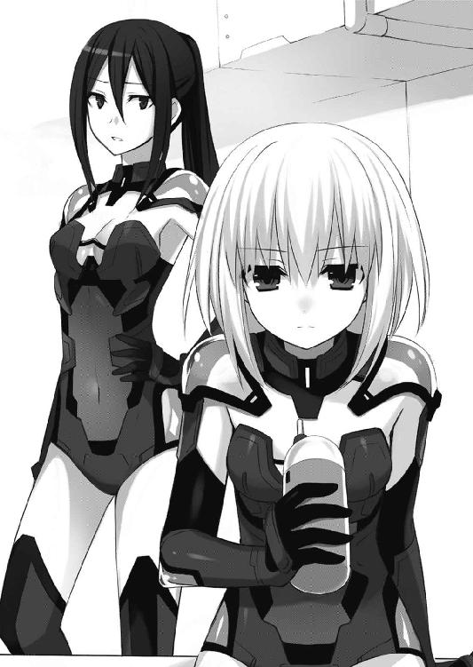
「あんた、自分がどんな怪物相手にしてるか本当にわかって戦ってるの？ あれは化物よ。知能を持ったハリケーンよ。──いい？ できるだけ被害を最小限に抑えて、できるだけ早く消失させる。それが私たちの仕事よ。無駄な危険は冒さないようにしなさい」
「──違う」
折紙は燎子の目をまっすぐ見つめ返すと、小さく唇を開いた。
「精霊を倒すのが、ＡＳＴの役目」
「............」
燎子が、眉根を寄せる。
それはそうだろう。彼女はＡＳＴ隊長。対精霊部隊の名の意味を、折紙よりずっと深く、重く理解しているはずだった。
理解した上で、彼女は言っているのだ。
──自分たちには、被害を抑えることしかできないと。
けれどそれを承知した上で、折紙はもう一度言った。
「──私は、精霊を、倒す」
「............」
燎子は息を吐くと、折紙の頭から手を離した。
「......別に、個人の考えに口出すつもりはないわ。好きに思ってなさい。──でも、戦場で命令に背くようなら、部隊から外すわよ」
「了解」
折紙は短く答えると、ようやく馴染んだ身体を起こし、歩いていった。
◇
「──で、これが精霊って呼ばれてる怪物で、こっちがＡＳＴ。陸自の対精霊部隊よ。厄介なものに巻き込まれてくれたわね。私たちが回収してなかったら、今頃二、三回くらい死んでたかもしれないわよ？ で、次に行くけど──」
「ちょ、ちょっと待った！」
ペラペラと説明を始めた琴里を制するように、士道は声を上げた。
「何、どうしたのよ。せっかく司令官直々に説明してあげているっていうのに。もっと光栄に咽び泣いてみせなさいよ。今なら特別に、足の裏くらい舐めさせてあげるわよ？」
軽くあごを上に向け、士道を見下すような視線を作りながら、琴里が琴里らしからぬ暴言を吐いてくる。
「ほ......ッ、本当ですか!?」
喜び勇んで声を上げたのは、琴里の横に立った神無月だった。琴里が即座に、「あんたじゃない」と鳩尾に肘鉄を放つ。
「ぎゃぉふッ......！」
そんなやりとりを眺めてから、士道は呆然と口を開いた。
「......こ、琴里......だよな？ 無事だったのか？」
「あら、妹の顔を忘れたの、士道？ 物覚えが悪いとは思っていたけど、さすがにそこまでとは予想外だったわね。今から老人ホームを予約しておいた方がいいかしら」
士道は頬に汗をひとすじ垂らした。
ついでにほっぺをつねってみる。痛かった。
士道の可愛い妹は、お兄ちゃんのことを呼び捨てになんかしないはずなのだが。
士道は後頭部をかくと、困ったように声を発した。
「......なんかもう、意味がわからなすぎて頭の中がワニワニパニックだ。おまえ、何してんだ？ ていうかここ、ドコだ？ この人たち、何だ？ それに──」
琴里が、はいはい、と言いたげに手を広げて士道の言葉を止めさせる。
「落ち着きなさい。まずはこっちから理解してもらわないと、説明のしようがないのよ」
言って琴里が、艦橋のスクリーンを指さす。
そこには、先刻士道が遭遇した黒髪の少女と、機械の鎧を纏った人間たちが映し出されていた。
「ええと......精霊......って言ったっけ？」
士道は頬をかきながらそう言った。確か、先ほど琴里がそう説明していた気がする。
不定期に世界に出現する、正体不明の怪物。
「そ。彼女は本来この世界には存在しないモノであり──この世界に出現するだけで、己の意思とは関係なく、あたり一帯を吹き飛ばしちゃうの」
琴里が両手をドーン！ と広げ、爆発を表現する。
士道は、額に手をあてて渋面を作った。
「......悪い、ちょっと壮大すぎてよくわかんね」
すると、琴里が「ここまで言ってわからない？」と肩をすくめながら吐息した。
「空間震、って呼ばれてる現象は、彼女みたいな精霊が、この世界に現れるときの余波だって言ってるのよ」
「な──」
士道は思わず眉根を寄せた。
空間の地震。空間震。
人類を、世界を蝕む理不尽極まる現象。
その原因が、あの少女だというのか──？
「ま......規模はまちまちだけどね。小さければ数メートル程度、大きければ──それこそ、大陸に大穴が開くくらい」
琴里が、両手で大きな輪を作る。
三〇年前確認された最初の空間震──ユーラシア大空災のことを言っているのだろう。
「運がいいわよ士道。もし今回の爆発規模がもっと大きかったら、あなた一緒に吹っ飛ばされてたかもしれないんだから」
「......っ」
確かに、その通りである。士道は今さらながら身を竦ませた。
琴里が、そんな士道の様子に半眼を作る。
「だいたい、なんで警報発令中に外に出てたの？ 馬鹿なの？ 死ぬの？」
「いや......だっておまえ、これ」
士道はポケットから携帯電話を取り出すと、琴里の位置情報を表示させた。やはり、琴里のアイコンはファミレスの前で停止している。
「ん？ ああ、それ」
しかし琴里は、懐から携帯電話を取り出して見せた。
「あ......？ なんでおまえ、それ」
士道は自分の携帯画面と、目の前に掲げられた琴里の携帯電話を交互に見た。こんなところに琴里がいるものだから、てっきりファミレス前に携帯を落としてきたのかと思っていたのだ。
琴里は肩をすくめると、はふうと嘆息した。
「なんで警報発令中に外にいたのかと思ったら、それが原因だったのね。私をどれだけ馬鹿だと思ってるのかしらこの阿呆兄は」
「いや、だって......え、ていうか、なんで──」
「簡単よ。ここがファミレスの前だから」
「は......？」
「ちょうどいいわ。見せた方が早いでしょ。──一回フィルター切って」
琴里が言うと、薄暗かった艦橋が一気に明るくなった。
とはいえ、照明が点けられたわけではない。どちらかというと、天井にかけられていた暗幕を一気に取り払ったような感じだ。
事実──あたりには、青空が広がっていた。
「な、なんだこりゃ......ッ」
「騒がないでちょうだい。外の景色がそのまま見えてるだけよ」
「外の景色って......これ」
「ええ。ここは天宮市上空一万五〇〇〇メートル。──位置的にはちょうど、待ち合わせしてたファミレスのあたりになるかしらね」
「ここ、って......」
「そう。この〈フラクシナス〉は、空中艦よ」
腕組みし、琴里がふふんと鼻を鳴らす。まるでお気に入りの玩具を自慢する子供のように。否──どちらかというと、手塩にかけて育てた我が子を紹介する教育ママといった方が近いかもしれなかった。
「く、空中艦ん......っ？ なんだよそりゃ。なんでおまえがそんなのに──」
「だから順を追って説明するって言ってるでしょう？ 鶏だって三歩歩くまでは覚えてるでしょうに」
「む......」
「......でも、ケータイの位置確認で調べられちゃうなんて盲点だったわね。顕現装置で不可視迷彩と自動回避かけてたから油断してたわ。あとで対策打っておかないと」
琴里が、よくわからない単語を呟きながらあごに手を置く。
「な、何言ってるんだ？」
「ああ、気にしないで。そこまで士道に期待していないから。グラム当たりの値段でいったら毛蟹に負けるくらいの脳だものね」
「............」
「司令。蟹味噌は脳ではなく中腸腺です」
士道が頬に汗を垂らしていると、神無月が穏やかな声でそう言った。
「............」
琴里はちょいちょい、と手招きをすると、神無月に腰を折らせた。
そしてその目に向けて、プッ、と舐め終わったキャンディの棒を吹き出す。
「ぬぁォうッ！」
目元を押さえ、神無月が後方へ転がった。
「だ──大丈夫ですかッ！」
さすがに洒落にならない。士道は声を上げた。
しかしその場に駆け寄ろうとしたところで足を止める。
床に転がった神無月が、恍惚とした表情で懐からハンカチを取り出し、今し方琴里が放ったキャンディの棒を丁寧に包み込んでいた。
「おっと、心配させてしまいましたか？ 大丈夫、我々の業界ではご褒美です！」
言って、神無月がピョンと立ち上がり、完璧な直立姿勢を作る。
どんな業界だろうか。あまり深くは知りたくなかった。
「神無月」
「はっ」
琴里が指を二本立てると、神無月が代わりの飴を取り出し、手渡した。
「それと、次はこっちね。ＡＳＴ。精霊専門の部隊よ」
言って、琴里がスクリーンに映し出されていた一団を示す。
「......精霊専門の部隊って──具体的には何してるんだよ」
士道が問うと、琴里は当然と言うように眉を上げた。
「簡単よ。精霊が出現したら、その場に飛んでいって処理するの」
「処理......？」
「要はぶっ殺すってこと」
「............ッ！」
琴里の言葉をまったく予想していなかったわけではない。
しかし──士道は心臓が引き絞られるかのような感覚に襲われた。
「こ、殺す......？」
「ええ」
こともなげに、琴里がうなずく。
士道はごくりと唾液を飲み込んだ。動悸の音が、やけにうるさい。
言っていることは理解できた。精霊。なるほど確かに危険な存在だ。
でも──いくらなんでも、殺す、だなんて。
ふと、士道の脳裏に、あの少女の顔が浮かんできた。
（──だっておまえも、私を殺しに来たんだろう？）
少女があんなことを言った意味が、ようやくわかった。
そしてあの、今にも泣き出してしまいそうな顔の意味も。
「まあ、普通に考えれば死んでくれるのが一番でしょうね」
特に感慨もなさそうに琴里が言う。
「な、なん......っ、でだよ」
「なんで、ですって？」
士道が表情を歪めながらうめくように言うと、琴里が興味深そうにあごに手を当てた。
「何もおかしいことはないでしょう。あれは怪物よ？ この世界に現れるだけで空間震を起こす最凶最悪の猛毒よ？」
「だっておまえ、言ったじゃねえか。空間震は、精霊の意思とは関係なく起こるって」
「ええ。少なくとも現界時の爆発は、本人の意思とは関わりないというのが有力な見方よ。──まあ、そのあとＡＳＴとドンパチした破壊痕も空災被害に数えられるけどね」
「......それは、そのＡＳＴって奴らが攻撃するからだろ？」
「まあ、そうかもしれないわね。──でもそれはあくまで推測。もしかしたら、ＡＳＴが何もしなくても、精霊は大喜びで破壊活動を始めるかもしれない」
「それは......ねえだろ」
士道が言うと、琴里が不思議そうに首を傾げた。
「根拠は？」
「好きこのんで街ぶっ壊すような奴は......あんな顔、しねえんだよ」
それは根拠と呼ぶにはあまりに曖昧で薄弱なものだったが......なぜだろうか、士道はそれを心の底から確信していた。
「本人の意思じゃねえんだろ？ それなのに──」
「随意か不随意かなんて、大した問題じゃないのよ。どっちにしろ精霊が空間震を起こすことに変わりはないんだから。士道の言い分もわからなくはないけれど、かわいそうって理由だけで、核弾頭レベルの危険生物を放置しておくことはできないわ。今は小規模な爆発で済んでるけれど、いつユーラシア級の大空災が起こるかわからないのよ？」
「だからって......殺すなんて」
士道がしつこく追いすがると、琴里はやれやれと肩をすくめた。
「数分程度しか接点のない、しかも自分が殺されかけた相手だっていうのに、随分精霊の肩を持つじゃない。......もしかして、惚れちゃった？」
「っ、違ぇよ。ただ、もっと他に方法があるんじゃねえかって思うだけだ」
「方法、ね」
士道の言葉に、琴里はふうと息を吐いた。
「それじゃあ訊くけれど、どんな方法があると思うの？」
「それは──」
言われて、言葉が止まる。
頭では、琴里の言うことが理解できてしまっているのだ。
出現するだけで世界に深刻な爪痕を残す異常──精霊。
そんなものは、迅速に殺さねばならないのだろう。
でも。たった一瞬だけれど。
士道は見てしまった。少女の、今にも泣き出してしまいそうな顔を。
士道は聞いてしまった。少女の、悲痛な声を。
──ああ、これは、なんか違うと、思ってしまった。
「......とにかく」
士道の口は、自然と言葉を紡いでいた。
「一度......ちゃんと話をしてみないと......わかんねえだろ」
あのとき直面した死の恐怖は、未だ身体の奥底に刻まれている。
正直、逃げ出したくなるくらい怖い。
でも士道には、あの少女をこのまま放っておくことができなかった。
だって彼女は──士道と同じだったのだから。
そんな士道の言葉に、琴里はニヤリと唇の端を上げた。
その言葉、待ってました、と言わんばかりに。
「そう。──じゃあ、手伝ってあげる」
「は......？」
士道が口をぽかんと開けると同時、琴里が両手をバッと広げた。
令音を、神無月を、下段に広がるクルーたちを、そしてこの空中艦──〈フラクシナス〉を示すように。
「私たちが、それを手伝ってあげるって言ったのよ。〈ラタトスク機関〉の総力を以て、士道をサポートしてあげるって」
琴里が優雅な所作で膝の上で指を絡ませる。
「な、なんだよそれ。意味が──」
「最初の質問に答えてあげるわ。私たちが何なのか、を」
士道の言葉を遮るように、琴里が声を上げた。
「いい？ 精霊の対処方法は、大きく分けて二つあるの」
「二つ......？」
士道が問うと、琴里は大仰にうなずき、人差し指を立てた。
「一つは、ＡＳＴのやり方。戦力をぶつけてこれを殲滅する方法」
次いで、中指を立てる。
「もう一つは......精霊と、対話する方法。──私たちは〈ラタトスク〉。対話によって、精霊を殺さず空間震を解決するために結成された組織よ」
「............」
士道は眉をひそめて考えを巡らせた。その組織とは何なのかとか、なぜ琴里がそんなところに所属しているのかとか、気になることはたくさんあったのだが──とにかく、今もっとも気にせねばならないことを口に出す。
「......で、なんでその組織が俺をサポートするって話になるんだよ」
「ていうか、前提が逆なのよ。そもそも〈ラタトスク〉っていうのは、士道のために作られた組織だから」
「は、はぁ......ッ!?」
士道は今までで一番盛大に表情を崩すと、素っ頓狂な声を上げた。
「ちょっと待て。今まで以上に意味がわからん。俺のため？」
「ええ。──まあ、士道を精霊との交渉役に据えて、精霊問題を解決しようって組織って言った方が正しいのかもしれないけれど。どちらにせよ、士道がいなかったら始まらない組織なのよ」
「ま、待てって。どういうことだよ。この人たちが、全部そんなことのために集められたってことか？ ていうかなんで俺なんだよ！」
士道が問うと、琴里はキャンディを口の中で転がしながらうなった。
「んー、まあ、士道は特別なのよ」
「説明になってねぇぇぇぇぇぇぇ！」
たまらず、叫ぶ。
しかし琴里は不敵に笑うと、肩をすくめる仕草をして見せてきた。
「まあ、理由はそのうちわかるわ。いいじゃない。私たちが、全人員、全技術を以て士道の行動を後押ししてあげるって言ってるのよ？ それとも──また一人で何の用意もなく精霊とＡＳＴの間に立つつもり？ 死ぬわよ、今度こそ」
琴里が半眼を作り、冷淡な口調で言ってくる。士道は思わず息を呑んだ。
確かに、琴里の言うとおりである。士道は理想と希望を唱えているだけで、それを実現させる手段を持っていない。
言いたいことはのどの奥からあふれ出るほどにあったが、なんとかこらえて、話を進める問いのみを発する。
「......その、対話ってのは、具体的に何するんだよ」
言うと、琴里は小さく笑みを浮かべた。
「それはね」
そしてあごに手を置き、
「精霊に──恋をさせるの」
ふふんと得意げに、そう言った。
..................。
しばしの間のあと。
「............はい？」
士道は、頬に汗をひとすじ垂らし、眉をひそめた。
「......すまん、ちょっと意味がわからん」
「だから、精霊と仲良くお話ししてイチャイチャしてデートしてメロメロにさせるの」
さも当然のごとく言う琴里に、士道は頭を抱えた。
「......ええと、それで何で空間震が解決するんだ？」
琴里は指を一本あごに当てながら「んー」と考えるような仕草を見せたあと、
「武力以外で空間震を解決しようとしたら、要は精霊を説得しなきゃならないわけでしょ？」
「そうだな」
「そのためにはまず、精霊に世界を好きになってもらうのが手っ取り早いじゃない。世界がこんなに素晴らしいモノなんだー、ってわかれば、精霊だってむやみやたらに暴れたりしないでしょうし」
「なるほど」
「で、ほら、よく言うじゃない。恋をすると世界が美しく見えるって。──というわけでデートして、精霊をデレさせなさい！」
「いや、そのりくつはおかしい」
明らかに論理が飛躍している。士道は頬に汗を垂らしながら言った。
「おッ、俺はそういうやり方じゃなくてだな......」
「黙りなさいこのフライドチキン」
士道が反論しかけると、琴里が有無を言わせぬ強い口調で遮ってきた。
「ＡＳＴが精霊殺すの許せましぇ～ん、もっと他に方法があるはずでちゅ～、でも〈ラタトスク〉のやり方はイヤでちゅ～......って？ 甘えるのも大概にしなさいよこのミイデラゴミムシ。士道一人で何ができるっていうの？ 身の程を知りなさい」
「ぐ、ぬ......」
「──腹の底では全部に賛同してなくったっていいわ。でも、あなたがもし精霊を殺したくないっていうのなら......手段は選んでいられないんじゃないの？」
なんともまあ、悪そうな笑みを琴里が浮かべる。
実際、その通りだった。
なんの力も後ろ盾もない士道が、もう一度あの精霊の少女と話がしたいと願っても、まず叶うまい。
ＡＳＴのやり方は論外だし──琴里たちだって、要は精霊を籠絡していいように利用しようとしているようにしか思えない。
だけれど──他に方法がないのも事実だった。
「......っ、わかったよッ」
士道が苦々しくうなずくと、琴里は満面の笑みを作った。
「──よろしい。今までのデータから見て、精霊が現界するのは最短でも一週間後。早速明日から訓練よ」
「は......？ くんれん......？」
士道は、呆然と呟いた。
◇
そして、次の日。
「来て」
「へ？」
突然。
士道は折紙に手を掴まれ、素っ頓狂な声を発した。
「あ、ちょ、ちょっと......」
ガタンと椅子を倒し、折紙に引っ張られて教室を出ていく。
後方では殿町がポカンと口を開け、女子の集団が何やらキャーキャーと騒いでいた。
またあらぬ噂が流れるのだろうなあと思いながらも、折紙についていく。まあ少なくとも、殿町とベストカップル扱いされるよりは随分マシだろうという諦観を込めて。
四月一一日、火曜日。
士道がおよそ現実とは思えない不思議体験をした日の翌日である。
結局あのあと士道は別室に移され、知らないオジサンに事態の詳細な説明を深夜まで延々聞かされたあと（正直、最後の方はあまり記憶がない）、何やら様々な書類にサインをさせられてからようやく家に帰された。
風呂にも入らずベッドにダイブして、気づけば朝である。
気怠い身体を引きずりながら登校、眠い目を擦りながらなんとか授業に耐え、帰りのホームルームが終わった──と思った瞬間の出来事だった。
折紙は無言のまま階段を上り、しっかりと施錠された屋上への扉の前までやってきて、ようやくその手を離した。
下校する生徒たちの喧噪が、随分遠くに聞こえる。
人がいる場所から一〇メートルも離れていないのに、まるで隔絶されたかのような寂しさのある空間だった。
「え、ええと......」
なんというか、折紙にその気がないのはわかっているのだが、女の子にこんな場所に連れてこられると、照れる。士道は視線を泳がせた。
だが折紙は何の前置きもなく、
「昨日、なぜあんなところにいたの」
そう、士道の目をじっと見つめながら言った。
「や、妹が警報発令中に街にいたみたいで、探しに......」
「そう。──見つかったの？」
士道が答えると、折紙はぴくりとも表情を変えないままそう言った。
「──ッ、あ、ああ......おかげさまで」
「そう。よかった」
折紙はそう言うと、続けて唇を動かした。
「──昨日、あなたは私を見た」
「あ、ああ......」
「誰にも口外しないで」
士道が首肯するのと同時に、折紙が有無を言わせぬ迫力で言ってきた。
もしここで「バラされたくなかったら俺の言うことを聞くんだなあげっへっへ」とか言ったらどんな反応が返ってくるのだろう、なんて危険な好奇心が顔を出す。
が、さすがに士道にそんな度胸はなかった。こくこくと首を前に倒す。
「それに、私のこと以外も──昨日見たこと、聞いたこと。全てを忘れた方がいい」
それはきっと......精霊のことを言っているのだろう。
「......あの、女の子のことか？」
「............」
折紙は、無言で士道を見つめてくるだけだった。
「な、なあ......鳶一。あの女の子って──」
精霊のことは一通り〈ラタトスク〉から聞かされていたが、士道は問うた。
あくまであれは琴里たちの組織の見解。実際に刃を突き合わせている折紙たちなら、また違った考えを持っているのではないかと思って。
「あれは、精霊」
折紙は、短く答えた。
「私が倒さなければならないもの」
「......っ、そ、その精霊ってのは、悪い奴なのか......？」
士道は、そんな質問を投げてみた。
すると微かにだが、折紙が唇を噛みしめた気がする。
「──私の両親は、五年前、精霊のせいで死んだ」
「......な──」
予想外の答えに、士道は言葉を詰まらせた。
「私のような人間は、もう増やしたくない」
「......そ、うか──」
士道は、自分の胸に手を置いた。
やたらと激しくなる動悸を、なんとか抑え込むように。
だが、ふと気になることがあった。未だこちらに真っ直ぐな視線を送ってきている折紙に、頬をかきながら訊ねる。
「そういえば鳶一......精霊とか、そういう情報って、言っちまっていいもんなのか......？ いや、そりゃ訊いたのは俺なんだけどよ......」
「............」
折紙は、一瞬黙った。
「問題ない」
「そ、そうなのか？」
「あなたが口外しなければ」
「......もし話したら？」
「............」
また、一瞬だけ言葉を止める。
「困る」
「そ、そうか......そりゃ大変だな。......約束するよ、誰にも言わない」
こくり、と折紙が首肯する。
その会話を最後に、折紙は士道から視線を外し、階段を下りていった。
「......ふぃぃ......」
士道は折紙の背が見えなくなってから、壁に背をついて息を吐いた。ただ話をしただけなのに、やたらと緊張した気がする。
「両親が、精霊のせいで死んだ──か」
ゴン、と壁に頭をつけ、呟くように言う。
世界を殺す災厄とさえ呼ばれる精霊だ。そういうことも──あるのだろう。
「......やっぱり、俺が甘いだけなのかね......」
折紙も、琴里も、方向は違えど、確固たる信念の下に動いている。
士道は──どうだろうか。
昨日琴里の前で切った啖呵を、折紙の前でも発することができるのだろうか。
「............」
はあ、と息を吐く。自分の行動を間違いだとは思っていないが、複雑な気分だった。
と、士道が階段を下りようとしたとき。
「きゃぁぁぁぁぁぁぁぁぁぁぁぁぁぁぁ────ッ!!」
廊下の方から、女子生徒の悲鳴が聞こえてきた。
「......っ!? な、なんだ？」
慌てて階段を駆け下りてみると、廊下に数名の生徒が集まっているのが見えた。
そしてその中心に、白衣を着た女性が一人、うつぶせで倒れているのが確認できる。
「ど、どうしたんだこれ」
「し、新任の先生らしいんだけど......急に倒れて......っ！」
呟くと、近くにいた女子生徒があたふたしながらそう返してきた。
「よくわかんねえけど、とにかく保健の先生を──」
士道が言いかけると、倒れていた白衣の女性ががしっ、と士道の足を掴んだ。
「う、うわぁっ!?」
「......心配はいらない。ただ転んでしまっただけだ」
言いながら、女が廊下にべったりつけていた顔面を、ゆらりと上げる。
「あ、あんたは......！」
長い前髪に、分厚い隈。眼鏡なぞかけていたが、その特徴的な顔を忘れるはずがない。
「......ん？ ああ、君は──」
女──〈ラタトスク〉の解析官・村雨令音が、のろのろと身を起こす。
「な、何してるんですか、こんなところで......」
「......見てわからないかい？ 教員としてしばらく世話になることにしたんだ。ちなみに教科は物理、二年四組の副担任も兼任する」
白衣の胸につけていたネームプレートを示しながら、令音が言ってくる。ちなみに、そのすぐ上の胸ポケットからは、傷だらけのクマさんが覗いていた。
「いや、わかるはずないでしょうがっ！」
叫び──士道はそこで、異様に周囲の視線を集めてしまっていることに気づいた。
「あ......こ、この人大丈夫みたいだから」
言って手を差し伸べ、令音を立ち上がらせる。
「......ん、悪いね」
「それはいいですけど、歩きながら話しましょう」
あたりに気を払いながら、士道は言った。
そのまま令音のペースに合わせ、のたのたと歩いていく。
「ええと──村雨解析官？」
「......ん、ああ、令音で構わんよ」
「は？」
「......私も君を名前で呼ばせてもらおう。連携と協力は信頼から生まれるからね」
令音はうんうんとうなずき、士道の顔を見た。
「ええと、君は......しんたろう、だったかな」
「し、しか合ってねえ！」
信頼も何もなかった。
「......さてシン、早速だが」
「なんですかその華麗なスルーは！ ていうか変な愛称までつけた！」
たまらず叫ぶ。しかし令音は、士道の言葉など聞いていない様子で続けてきた。
「......昨日琴里が言っていた強化訓練の準備が整った。君を捜していたところだ。ちょうどいい、このまま物理準備室に向かおう」
士道はもう何を言っても無駄とつっこみを諦め、はあと息を吐いて問い返した。
「訓練ってのは一体どんなことするんですか？ ええと......令音さん」
「......うむ。琴里に聞いたが、シン、君は女の子と交際をしたことがないそうじゃないか」
「............」
──うちの妹様は、なんだって兄の女性遍歴（ゼロ）を他人に漏らすのだろうか。
士道は頬をピクつかせながらも曖昧にうなずいた。
「......別に責めているわけじゃあない。身持ちが堅いのは大変結構なことだ。......だが、精霊を口説くとなるとそうも言っていられないんだ」
「むう......」
眉根を寄せながら、うめく。
と、職員室の近くを通ったときだったろうか、
「......あ？」
士道は、奇妙なものを目にして立ち止まった。
「......どうかしたかね？」
「いや、あれ......」
視線の先を、担任のタマちゃん教諭が歩いていたのだが──その後ろに、どうも見覚えのある、髪を二つ結びにしたちっこい影がついて回っていたのである。
「あ！」
士道の視線に気づいたのだろうか、ちっこい影──琴里が表情をパァッと明るくした。
「おにーちゃぁぁぁぁぁん！」
瞬間、琴里が、吸い込まれるように士道の腹に突撃してくる。
「はがぁ......っ！」
「あははは、はがーだって！ 市長さんだー！ あはははは！」
「こ、琴里......っ!? おまえなんだって高校に......」
士道が腹にまとわりつく琴里をどうにか引き剥がしながら言うと、琴里の後ろからタマちゃん教諭がトテトテと歩いてきた。
「あ、五河くん。妹さんが来てたから、今校内放送で呼ぼうとしてたんですよぅ」
「は、はあ......」
よく見ると、琴里は来賓用のスリッパを履き、中学の制服の胸に入校証をつけていた。きちんとした手続きを踏んで学校に入ってきたらしい。
「おー、先生、ありがとー！」
「はぁい、どういたしましてぇ」
元気よく手をブンブンと振る琴里に、先生がにこやかに返す。
「やー、もうっ、可愛い妹さんですねぇ」
「はあ......まあ」
士道は頬に汗を垂らして苦笑しながら、曖昧な返事をした。
先生は琴里と笑顔で「バイバイ」と手を振り合うと、職員室の方に歩いていった。
「......で、琴里」
「んー、なーに？」
琴里が、丸っこい目を見開きながら首を傾げてくる。
その仕草は、士道のよく見知ったいつもの可愛い妹のものだった。
「おまえ......昨日のあれ、〈ラタトスク〉とか、精霊とか──」
「その話はあとにしよーよ」
口調はいつもと変わらないままだったが、なぜか得も言われぬプレッシャーのようなものを感じて、士道は黙り込んだ。
と、士道の後方から、令音の静かな声が響いてくる。
「......早かったね、琴里」
「うん、途中で〈フラクシナス〉に拾ってもらったからねー」
自分であとにしよう、と言ったわりには、普通に艦の名を出している。
少し不条理なものを感じながら、士道は額に手をついた。
琴里は脳天気そうな笑顔でそれを見てから、士道を先導するように廊下を進み始める。
「それよりほら、おにーちゃん。早く行こ？」
言って、琴里が手を引いてくる。
「っとと......ちょ、わかったから走るなって」
今日はよく女の子に引っ張られる日である。そんな呑気なことを士道が考えているうちに、二人は目的地に到達した。
東校舎四階、物理準備室。
「さ。入ろー、入ろー♪」
「ハイ・ホー、みたいに言うんじゃねえよ」
琴里に促され、士道はスライド式のドアを滑らせた。
そしてすぐに、眉根を寄せて目をこする。
「......ちょっと」
「......何かね？」
士道の言葉に、令音が小首を傾げた。
「なんですか、この部屋」
物理準備室なんて、生徒がそうそう入る場所ではないし、実際、士道も中に何が置かれているかなんて知らない。
それでも、はっきりと認識できてしまった。
──ここは、物理準備室ではない、と。
何しろ今士道の視界は、いくつものコンピュータにディスプレイ、その他見たこともない様々な機械で埋め尽くされていたのだから。
「......部屋の備品さ？」
「いやなんで疑問形なんですか！ ていうかそれ以前に、ここ物理準備室でしょう？ もといた先生はどうしたんですか！」
そう。ここはもともと、善良で目立たない初老の物理教諭・長曽我部正市（通称・ナチュラルボーン石ころぼうし）がトイレ以外で唯一安らげる空間だったはずなのだ。
その長曽我部教諭の姿は今、どこにも見えない。
「......ああ、彼か。うむ」
令音があごに手をやり、小さくうなずく。
「............」
「............」
「............」
「............」
そのまま、数秒が過ぎた。
「......まあそこで立っていても仕方ない。入りたまえ」
「うむ、の次は!?」
パリイ！ そんな単語が令音の頭上に見えた気がした。何というスルー力。昨今の日本人は是非身につけるべきスキルだ。
令音は先に部屋に入ると、部屋の最奥に置かれていた椅子に腰掛けた。
次いで、士道の脇から琴里が部屋に入っていく。
そして、慣れた様子で白いリボンで括られていた髪をほどくと、ポケットから取り出した黒いリボンで髪を結び直す。
「──ふぅ」
するといきなり、琴里の雰囲気が変わった気がした。
どこか気怠げに制服の首元を緩め、令音の近くの椅子にどっかと座り込む。
そして琴里は、持っていた鞄から小さなバインダーのようなものを取り出した。
中には綺麗に、様々な種類のチュッパチャプスが並べてセットしてある。
まさかの飴玉専用ホルダーである。
琴里はその中から一つを選び、口に入れると、未だ部屋の入り口に立ちつくしていた士道に、見下すような視線を向けてきた。
「いつまで突っ立ってるのよ、士道。もしかしてカカシ志望？ やめときなさい。あなたの間抜け面じゃあ、カラスも追い払えないと思うわよ。ああ、でもあまりの気持ち悪さに人間は寄ってこないかもしれないわね」
「............」
一瞬のうちに女王様に変貌した妹を見て、士道は額に手を置いた。
リボンを替えるのがマインドセットのスイッチにでもなっているのだろうか。
まるでオセロの駒がひっくり返ったかのような、見事なジキルとハイドぶりだった。
「......琴里、おまえどっちが本性なんだ......？」
「嫌な言い方をするわね。そんなんじゃ女の子にもてないわよ。──ああ、だからまだ童貞だったんだっけ。ごめんなさいね初歩的なことを指摘して」
「......おい」
「統計だと、二二歳までに女性と交際できなかった男の半数以上は、一生童貞らしいわ」
「まだ五年以上猶予があるわ！ 未来の俺を舐めるなよ！」
「猶予と可能性ばかり口に出す人間は、結局『明日から頑張る』しか言わないのよね」
「ぐ......」
口喧嘩ではまず敵わないと悟り、ぐっと堪えてドアを閉める。
「......さ、ともかくシン。訓練を始めよう。ここに座りたまえ」
言って令音が、二人に挟まれるように設えられている椅子を示す。
「......了解」
もう何を訴えても無駄と悟った士道は、言われるままに椅子に腰掛けた。
「さ、じゃあ早速調きょ......ゲフンゲフン、訓練を始めましょう」
「てめ今調教って言おうとしたな」
「気のせいよ。──令音」
「......ああ」
琴里が言うと、令音が足を組み替えながら首肯した。
「......君の真意はどうあれ、我々の作戦に乗る以上は、最低限クリアしておかねばならないことがある」
「何ですか？」
「......単純な話さ。女性への対応に慣れておいてもらわねばならないんだ」
「女性への対応......ですか」
「......ああ」
令音がうなずく。なんだか、そのまま眠ってしまいそうだった。
「......対象の警戒を解くため、ひいては好意を持たせるためには、まず会話が不可欠だ。大体の行動や台詞は指示を出せるが......やはり本人が緊張していては話にならない」
「女の子と会話って......さすがにそれくらいは」
「本当かしらね」
と、琴里がいきなり士道の頭を押し、ぎゅっと令音の胸に押しつけた。
「............ッ!?」
「......ん？」
令音が、不思議そうに声を発した。
両頬を温かくて柔らかい感触が襲い、ついでに脳がとろけてしまいそうなほどいい匂いが鼻腔を駆け回る。士道はすぐさま琴里の手を退かすと、バッと顔を上げた。
「......ッ、な、ななななにしやがる......ッ！」
「はん、ダメダメね」
琴里が嘲るように肩をすくめた。
「わかったでしょ、こういうこと。これくらいで心拍を乱してちゃ話にならないの」
「いや、明らかに例がおかしいだろ!?」
しかし琴里は聞く耳持たず、やれやれと首を振ってくる。
「ホント、悲しいまでにチェリーボーイね。やだやだ、可愛いとでも思ってるの？」
「う、うるせえ」
「......まあ、いいじゃないか。だからこそ私たちがここに来たのだから」
言って、令音が腕組みをする。自然彼女の見事なバストが強調された。
というか、腕に『乗って』いた。
「............っ」
なんだか直視するのも気恥ずかしくて、思わず目を泳がせる。
──女性に慣れる、訓練。
士道の頭の中に、令音が発した言葉が過ぎった。
しかも多少エロティックな場面になっても狼狽えないようにする......だなんて。
琴里と令音は、一体ここで士道にどんなことを──
「生唾飲み込んじゃって。いやらしい」
琴里が机に肘をつきながら、半眼でそう言ってきた。
「......！ い、いや違うぞ琴里ッ！ お、俺は別に......」
「......まあ、早いところ始めようじゃないか」
琴里と士道の会話を制し、令音が眼鏡をくいと上げる。
「は──っ、い、いやまだ心の準備が......っ」
士道は緊張に声を震わせながらも背筋を伸ばした。
令音は構わず「......ん」と呟き、先ほどと同じように士道に身体を近づけてきた。
何の前触れもなく接触されたさっきのケースよりも、遥かに心臓が高鳴る。
──ああ、何？ 一体何をされちゃうの......ッ!?
ドキドキしながらも動くことができない。八〇年代少女漫画の主人公みたいな表情をしながら、士道はキュッと目を閉じた。
しかし、どれだけ待っても何も起こらない。
目を開けて見てみると、令音は机の上のモニタに電源を入れていただけだった。
「え......？」
士道がキョトンとしていると、画面に可愛らしくデザインされた〈ラタトスク〉の文字が映った。
次いで、ポップな曲とともに、カラフルな髪の美少女たちが順番に画面に表示され、タイトルと思しき『恋してマイ・リトル・シドー』のロゴが躍る。
「こ、これは......」
「......うむ。恋愛シミュレーションゲームというやつだ」
「ギャルゲーかよッ！」
士道は悲鳴じみた叫びを上げた。
「やだ、何を想像してたの？ さすが妄想力だけは一級品ね気持ち悪い」
「......っ、やっ、そ、それは......」
言い淀むが......なんとか咳払いをして心拍を治める。
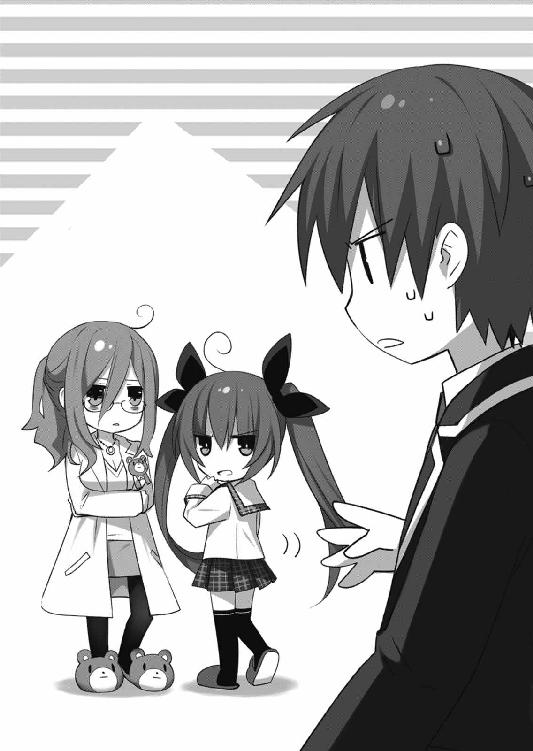
「お、俺はただ、本当にこんなもんで訓練になるのかって......」
琴里が無言のまま、汚いものを見る目で見つめてくる。
せめて何か言って欲しかった。無言は、無言はつらい。
「......まあ、そう言わないでくれ。これはあくまで訓練の第一段階さ。それに市販品ではなく、〈ラタトスク〉総監修によるものだ。現実に起こりうるシチュエーションをリアルに再現してある。心構えくらいにはなるはずだ。ちなみに15禁」
「ああ......18禁ではないんですね」
何とはなしに士道が言うと、琴里が憐憫にも近い眼差しを作った。
「やだ最低」
ついでに令音が、ぽりぽりと頭をかく。
「......シン、君は一六だろう？ 18禁のゲームができるはずないじゃないか」
「いやおまえらさっきと言ってること微妙に矛盾してね!?」
叫ぶが、琴里と令音に取り合うつもりはないようだった。
「......ん、では始めてくれたまえ」
「はいはい......っと」
士道は腑に落ちないものを感じつつも、促されるままコントローラーを手に取った。
妹と先生に見られながらギャルゲーとか、どんな罰ゲームだろうと思いながら。
主人公のモノローグを適当に斜め読みし、ゲームを進めていく。
と、画面が一瞬暗転し、
「おはよう、お兄ちゃん！ 今日もいい天気だね！」
そんな台詞と同時に、画面に綺麗なＣＧが表示された。
主人公の妹キャラなのだろう、小柄な少女がアオリの構図で描かれている。
というか寝ている主人公を踏んでいた。
パンツ丸見えだった。
「ねぇ───────────よ!!」
士道は、コントローラーを握りしめながら声を上げた。
「......どうしたねシン。何か問題でも？」
「いや、これ実際にありそうなシチュエーションを再現とか言ってませんでした!?」
「......そうだが、何かおかしいかね」
「おかしいも何も！ こんなふざけた状況現実に起こるわ......け......」
言いかけて、士道は額に汗を滲ませた。
なんか、すごーく似たような体験を、つい昨日の朝したような気がするのだ。
「......何かね」
「......いや、なんでもないです」
士道はものすごく不条理な何かを感じながらも、ゲームに戻った。
と、テキストを進めていくと、画面の真ん中に何やら文字が現れる。
「ん......？ なんだこれ」
「ん、選択肢よ。この中から主人公の行動を一つ選ぶの。それによって好感度が上下するから注意するのよ」
言って、琴里が画面の右下を指さす。そこには、ゼロの位置にカーソルがついたメーターのようなものが表示されていた。
「ふーん......なるほどな。これのどれかを選べばいいんだな？」
士道は好感度メーターから選択肢の方に視線を移動させた。
①「おはよう。愛してるよリリコ」愛を込めて妹を抱きしめる。
②「起きたよ。ていうか思わずおっきしちゃったよ」妹をベッドに引きずり込む。
③「かかったな、アホが！」踏んでいる妹の足を取り、アキレス腱固めをかける。
「......って、なんだこの三択は！ どこがリアルだ！ 俺こんなんしたことねえぞ！」
「何でもいいけど、制限時間つきよ」
「は......ッ!?」
確かに琴里の言うとおり、選択肢の下に表示されていた数字がどんどん減っていた。
「......っ、仕方ねえ」
士道はうめくように言うと、一番まともであろう①の選択肢を選んだ。
「おはよう。愛してるよリリコ」
俺は妹のリリコを、愛を込めて抱きしめた。
すると、リリコは途端顔を侮蔑の色に染め、俺を突き飛ばしてきた。
「え......ちょっと、何、やめてくんない？ キモいんだけど」
好感度のメーターが、一気にマイナス五〇まで下落する。
「リアルだったー！」
士道はコントローラーを膝の上に叩きつけながら叫びを上げた。
「あーあ、馬鹿ね。いくら妹でも、突然抱きついたらそうなるに決まってるじゃない。
──まったく、ゲームだからいいものの、これが本番だったら、士道のお腹には綺麗な風穴が開いてるわよ？」
「じゃあどうしろってんだよこれッ！」
あまりに理不尽な仕打ちに士道が叫ぶも、琴里はまるで取り合わなかった。
やれやれと息を吐きながら、自分の前に置かれていた液晶ディスプレイを点灯させる。
「あ......？ 何やってんだ？」
「訓練とはいえ、少しは緊張感持ってもらわないとね」
画面に、見覚えのある風景が表示される。来禅高校の昇降口だ。
ついでにそこに、高校の制服を着込んだおっさんが一人、カメラ目線で立っていた。
「......なんだ、この人」
「うちのクルーよ」
言うと琴里は、どこからともなくマイクのようなものを取り出して喋りかけた。
「──私よ。士道が選択に失敗したわ。やってちょうだい」
『はっ』
画面の中の男が敬礼をする。
「は......？ な、何だってんだよ」
士道が眉をひそめていると、画面の中の男が懐から一枚の紙を取り出した。それをカメラに映して見せる。
それを見ると同時、士道に心臓が止まるかのような衝撃が走った。
「こッ、これは──」
その様子に、琴里がものっすごく楽しそうな笑みを浮かべる。
「そう。若かりし頃、漫画に影響を受けまくった士道がしたためたポエム・『腐食した世界に捧ぐエチュード』よ」
「な......ななななななななんであれが......ッ!?」
確かにあれは、士道が中学生のときにノートに書いた詩だった。だがあれは、高校に上がる前に恥ずかしくなって処分したはずである。
「ふふ、いつか役に立つと思って拾っておいたのよね」
「ど、どどどうするつもりだ......ッ！」
琴里はにやりと笑いながら、「やりなさい」と言った。
『はっ』
男は短く答え、そのポエムを丁寧にたたみ込んで、手近な下駄箱に放り込んだ。
これでは明日登校してきた生徒が、士道渾身のポエムを読んでしまう！
「な......っ、何しやがる！」
「騒ぐんじゃないわよみっともない。精霊に対して対応を間違ったらこんなもんじゃ済まないのよ。士道自身はもちろん、私たちも被害を被る可能性があるんだから。──というわけで、緊張感を持ってもらうためにペナルティを設定させてもらったわ」
「重すぎるわぁぁぁぁぁッ！ ていうか被害被ってるのは俺だけじゃねぇかッ！」
士道が叫ぶと、令音がふむ、とあごに手を当てた。
「......なるほど、確かにシンの言うことにも一理ある」
「！ そ、そうでしょう!?」
思わぬ助け船に、士道は顔を明るくする。だが、
「......ならばシンが選択を間違うたびに、こちらもペナルティを負うことにしよう」
言って、おもむろに着ていた白衣を脱ぎ始めた。
「ちょッ、何してるんですか！」
「......いや、自分だけが恥ずかしい思いをするのは不公平だと言いたいのだろう？ ならシンが選択を誤るたびに私もこう、一枚ずつ脱いでいこう」
言って、別に恥ずかしそうなふうもなく腕組みする。
「そういう意味じゃねぇぇぇぇぇッ！」
「なんでもいいから先進めなさいよ、先」
琴里が焦れたように、椅子を蹴ってくる。
士道は泣きそうな顔になりながらも、観念して画面に向き直った。
だが、今後もこんな選択肢ばかりが出てくるとなると、無事にクリアできる自信がない。
「......なあ琴里、今後のために、この選択肢全部試してみていいか？」
「うわ、チキンで小市民な発想ねみっともない」
「う、うるせっ、こういうのは初めてなんだからこれくらい許せよ！」
「まったく、仕方ないわね。今回だけよ。──じゃあ一回セーブして」
「お、おう......」
士道はセーブを終えると、ゲームをリセットして先ほどの選択肢まで戻ってきた。
「............」
険しい顔で選択肢を睨むが......やはりどれもまともとは思えない。
だが③で好感度が上がるとは考えられなかった。仕方なく②を選択してみる。
「起きたよ。ていうか思わずおっきしちゃったよ」
俺はおもむろに起きあがると、リリコをベッドの中に引きずり込み、覆い被さった。
「や......ッ、な、何するのよっ！」
「仕方ないじゃないか。リリコのせいでこんなになっちゃったんだから」
「!! いやッ、やめて！ いやぁぁぁぁぁっ！」
「いいじゃないかいいじゃないかいいじゃないか」
画面が暗転する。
その後の展開は一瞬だった。
泣き崩れる妹。父親に殴りつけられる主人公。カチャリという手錠の音。暗い部屋で一人笑う主人公。
そのＣＧをバックに、悲しげな音楽とスタッフロールが流れ始める。
「なんじゃこりゃぁぁぁぁッ！」
たまらず、叫びを上げる。
「いきなりそんなことしたらそうなるに決まってるじゃないこの性犯罪者」
「じゃあ③が正解だってのかよッ！」
士道はゲームをリセットすると、三たび最初の選択肢に戻り、今度は③を選択した。
「かかったな、アホが！」
俺は妹の足をひねり上げ、アキレス腱固めをかけ──ようとした。
が、
「甘い」
妹が身体をねじり、こちらの手から逃れると、そのまま俺の背に回り、足を搦め捕って見事なサソリ固めをかけてきた。
「ぐふ......ッ!?」
その後、主人公はそのときの怪我が原因で半身不随となり、一生車椅子での生活を余儀なくされた。──そしてそのまま、エンディングへ。
「これ、①正解だったんじゃねえの!? ていうか普通妹はこんな技使えねえよ！」
「ふうん」
士道が言うと、琴里が士道の胸ぐらを引っ張って床に叩きつけたかと思うと、瞬時に足をとってサソリ固めをかけてきた。
「ぎい......ッ!?」
「ふん、ぎいだって。せいぜいママンママン言ってなさい」
言って士道を解放してから、涼しげに髪をかき上げる。
「お、おまえ、どこでこんな技を──」
「淑女の嗜みよ」
きっぱりと言ってくる。
士道の持つ淑女のイメージが、筋骨隆々のプロレスラーに変換されそうだった。
「てて......ッ、じゃあこれ、結局どうやるのが正解だってんだよ」
「まったく、最後は出題者に答えまで聞くの？ 情けないわね」
言いながらも、琴里は士道からコントローラーを奪うと、ゲームをリセットして先ほどのところまで進めた。
そして何も選択せず、ただ黙って画面を眺め始める。
「......？ 何してんだ？ 早く選ばないと──」
士道が言うと同時に、選択肢の下に表示されていた数字がゼロになる。
「んー......あと一〇分......」
「だめー！ ちゃんと起きるのー！」
と、至極普通の会話が、画面に表示された。
好感度メーターは上昇も下降もしていない。
「な......ッ」
「あんなおかしな選択肢選ぶなんて、どうかしてるんじゃないの？」
鼻で笑って、琴里が士道にコントローラーを放ってくる。
「特別にこの続きからやることを許してあげるから、早く先進めなさい。次の選択肢からはペナルティありだからね」
「ぐ......ッ、ぬぬ......」
力一杯腑に落ちないものを感じながらも、士道はコントローラーを握った。
ゲームを進めていくと、一〇〇センチオーバーのバストを誇る女教師が画面に現れる。
なんかもうその時点で非現実的だったのだが、黙って話を進めていった。
すると、
「きゃあっ！」
女教師がそんな悲鳴を上げ、何もないところですっ転び、主人公の顔に胸を押し当てながら倒れ込んできた。
さすがに、コントローラーを机に投げる。
「だから、ねぇよ！ こんな......」
言いかけて。士道はまたも汗を垂らすと、すごすごとコントローラーを拾った。今さっき、状況は違えど似たようなことがあった気がする。
「どうしたのよ、士道」
「......や、なんでも」
大人しく、プレイを再開する。
すると、また選択肢が現れた。
①「こんなことされたら......先生のこと好きになっちゃいます」おもむろに抱きつく。
②「ち、乳神様じゃぁー！」胸をわしづかみにする。
③「隙ありぃぃッ！」腕ひしぎ十字固めに移行する。
......また、どれも正気とは思えない。
「っ、そうか......！」
しかし士道はぐっと拳を握った。きっと、これも先ほどと同じパターンだろう。
選択肢の下のカウントがなくなるまで待っていると、やはり画面にテキストが表示された。
「......ッ、きゃぁぁぁ！ 何をしているの!? 痴漢！ 痴漢よぉぉ！」
女教師が悲鳴を上げ、好感度が八〇マイナスされる。
「なんでだよッ！」
たまらず叫ぶが、琴里はやれやれと首を振るだけだった。
「そんな長時間、避けることもしないで胸の感触を楽しんでたら、当然そうなるわよ」
「じゃあどうしろってんだ！」
「選択肢前のテキスト読んでなかったの？ 彼女は女子柔道部顧問・五所川原チマツリ。寝技に持ち込むことによって、意識を胸から勝負に持っていかないといけなかったのよ」
「わかるかそんなもぉぉぉぉん！」
「──ま、失敗は失敗よ。やりなさい」
『はっ』
画面の男が、またも懐から紙を取り出し、カメラに映して見せる。
そこには拙いキャラクターのイラストと、細かな設定がしたためられていた。
「こ......ッ、これは！」
「そう。士道が昔作ったオリジナルキャラの設定資料よ」
「っぎゃぁぁぁぁぁぁぁぁぁぁぁぁぁぁッ!?」
士道の叫びをよそに、男がまたも適当な下駄箱に紙を放る。
「やめてやめてやめてぇぇぇぇぇぇぇっ！」
と、士道が頭を抱えて悲鳴を上げていると、令音が何やらごそごそと動き出した。
「......っ、令音さん！」
忘れていた。そういえば士道が一つペナルティを負うたび、彼女もまた服を一枚ずつ脱いでいくとか言っていたのだった。
いや、士道も健全な男子高校生であるわけだから、嬉しくないといえば嘘になるのだが......その、なんというか、困る。
幸いまだ令音は、その身に十分な数の衣服を纏っている。選択肢さえ間違えなければしばらくは──
「......ん」
と、士道がそんなことを思っていると、令音がおもむろに手を背中にやってパチン、という音をさせたのち、手を服の中に入れて何やらもぞもぞと蠢き、首元からブラジャーを抜き取った。
「そこからッ!?」
士道が叫ぶと、令音はふっと首を傾げた。
「......何か問題が？」
「いや、明らかに順番違うでしょうがっ！ ていうかもう脱がなくていいですから！」
「......ふむ？ それでは不公平ではないかな？ まだ全然いけるのだが......」
「あんたただの脱ぎたがりじゃねえだろな!?」
士道が声を上げると、またも椅子がガン、と蹴られた。
「何でもいいから早くしなさい。ほら、次のキャラが出てきたわよ」
言って、琴里が画面を示してくる。
「ぐ......っ」
士道は仕方なく、ゲームを再開した。
今度は同級生と思しき女の子が、廊下の曲がり角で主人公と激突、綺麗にＭ字開脚をしてパンツが丸見えになるシーンが画面に映る。
「──！」
士道は自分の記憶を探りながらグッと拳を握ると、高らかに声を上げた。
「ねぇよ!! これは、こればっかりは絶対にねぇよ!!」
「......そうかな？ 意外とあると思うのだが......」
令音が言ってくるが、こればかりはさすがに遭遇したことがない。士道は自信を持って首を振った。
だが、またも椅子が蹴られる。
「別になさそうなシチュエーションに突っ込みを入れるゲームじゃないの。ちゃんとやりなさい。次の選択肢を間違ったら──これよ」
言って、琴里が目の前のコンピュータを操作した。
「......あ？」
士道が眉をひそめていると、画面に動画が表示される。
──背景は士道の部屋だった。そこに、上半身裸の士道が立っている。
「こ......れは......」
士道は、顔を青くした。
だって、それは──
『奥義・瞬閃轟爆破ぁぁぁぁぁッ！』
画面の中の士道は両手を合わせて腰元に構えてから、一気に前方に手を突き出した。
琴里が、もうこの上なく楽しそうな顔を作る。
「そう、昔士道が一人で留守番をしていたとき......ぷっ、部屋でオリジナル必殺技の練習をしていたときの......くくっ、映像よ......」
耐えられない、といった様子で含み笑いを漏らしながら、琴里が言う。
「っいやぁぁぁぁぁぁあぁぁぁぁぁぁぁぁぁぁぁぁあぁぁああぁぁぁぁぁぁ──ッ!?」
士道は、今日一番の盛大な悲鳴を上げた。
「琴里！ ヤバい！ これだけはヤバい！」
「ふふ、じゃあ次はちゃんと選択を成功させることね。......ああ、途中で放棄なんてしたら、動画サイトに投稿するからね」
「............っ」
士道は泣きそうになりながらも、コントローラーを握りなおした。
第三章 君の名は......
「どんなもんじゃーいッ！」
士道は左手にコントローラーを預けながら、右手をグッと握って天高く突き上げた。
琴里と令音の放課後強化訓練が実施されてから、休日を含めて一〇日間。
士道はようやく、ゲームのハッピーエンド画面を迎えていたのだった。
......まあそれまでに、幾度古傷を抉られたかは、数えたくもないのだが。
「......ん、まあ少し時間はかかったが、第一段階はクリアとしておくか」
「ま、一応全ＣＧコンプしたみたいだし、とりあえずは及第点かしらね。......とはいっても、あくまで画面の中の女の子に対してだけだけど」
背後からスタッフロールを眺めていた令音と琴里が、息を吐くのが聞こえてくる。
「じゃ、次の訓練だけど......もう生身の女性にいきましょ。時間も押しちゃったし」
「......ふむ、大丈夫かね」
「平気よ。もし失敗しても、失われるのは士道の社会的信用だけだから」
「何さらっと不穏なこと言ってんだてめえ」
黙って二人の会話を聞いていた士道だったが、さすがにたまらず口を挟む。
「やだ、盗み聞きしてたの？ 相変わらず趣味が悪いわね。この出歯亀ピーピング・トム」
琴里が眉をひそめ口元に手を当てながら言う。
なんというか、日本と外国の故事がフュージョンしたような悪口である。まあ意味は似たようなものだけれど。
「目の前で喋ってて盗み聞きも何もあるかっ！」
士道が叫ぶと、琴里が「はいはい」と手を広げてこちらを制するように言ってきた。
なんだか士道の方が変なことを言っている感じにされた。
「それで、士道。次の訓練なんだけど」
「......びっくりするほど気は進まんが、なんだ？」
「そうね......誰がいいかしら」
「あ？」
と、士道が首を傾げる横で、令音が手元のコンソールを操作し始めた。机の上に並べられたディスプレイに、学校内の映像がいくつも映し出される。
「......そうだね、まずは無難に、彼女などどうだろう」
言って、令音が画面の右端に映し出されていたタマちゃん教諭を指さす。
琴里は一瞬眉を跳ね上げ──
「──ああ、なるほど。いいじゃない、それでいきましょう」
すぐに、邪悪な笑みを浮かべた。
「......シン。次の訓練が決まった」
「ど、どんな訓練ですか」
士道が不安な心地を抑えながら問うと、令音が首肯しながら返してきた。
「......ああ。本番、精霊が出現したら、君は小型のインカムを耳に忍ばせて、こちらの指示に従って対応してもらうことになる。一回、実戦を想定して訓練しておきたかったんだ」
「で、俺にどうしろと？」
「......とりあえず、岡峰珠恵教諭を口説いてきたまえ」
「はァっ!?」
眉根を寄せ、叫ぶ。
「何か問題でもあるの？」
琴里が、士道の反応を楽しむようにニヤニヤと言ってくる。
「大ありだろが......ッ！ んなッ、できるわけ......っ！」
「本番ではもっと難物に挑まなきゃならないのよ？」
「──っ、そりゃ、そうだけど......っ！」
士道が言うと、令音がぽりぽりと頭をかいた。
「......最初の相手としては適任かと思うがね。恐らく君が告白したとしても受け入れはしないだろうし、ぺらぺらと言いふらしたりもしなさそうだ。......まあ、君がどうしても嫌だというのならば女子生徒に変えてもいいが......」
「う......ッ」
士道の脳裏に、嫌な情景が浮かんできた。士道に声をかけられた女子生徒が、教室に戻るなり女友達を集めて言うのだ。「ねえねえ、さっき五河くんに告られちゃったんだけどさー」「えー、ホントー？ 何、あいつ女に興味ありませんみたいな顔して、やることやってんじゃーん」「でもあいつはないよねー」「うん、ないない。なんか超むっつりっぽいしー」「あー、言えてるー、あはははは」
......新たなトラウマが生まれそうだった。
その点、珠恵に関しては、そういうシーンが微塵も思い浮かばない。いくら幼く見えるとはいえそこは大人の女である。生徒の戯言と聞き流してくれるだろう。
「で、どうするの？ 本番での失敗はすなわち死を意味するから、どっちにしろ一回は予行練習させるつもりだったけど」
「......先生で頼む」
琴里が言ってくるのに、士道は背中に嫌な汗をかきながらそう言った。
「......よし」
令音は小さくうなずくと、机の引き出しから、小さな機械を取り出し、士道に渡してきた。次いでマイクと、ヘッドフォン付きの受信器らしきものを机の上に置く。
「これは？」
「......耳につけてみたまえ」
言われるままに、右耳にはめ込む。
すると令音はマイクを手に取り、囁くように唇を動かした。
『......どうかね、聞こえるかな？』
「うおっ!?」
突然耳元で令音の声が響く。士道は肩をびくっと震わせて跳び上がった。
『......よし、ちゃんと通っているね。音量は大丈夫かい？』
「は、はあ......まあ、一応......」
士道が首肯すると、令音はすかさず机の上に放ってあったヘッドフォンを耳に当てた。
「......ん、うむ。こちらも問題ないな。拾えている」
「え？ 今の声拾えたんですか？ こっちにはマイクっぽいのついてませんけど......」
「......高感度の集音マイクが搭載されている。自動的にノイズを除去し、必要な音声だけをこちらに送ってくれるスグレモノだ」
「はぁー......」
士道が感嘆していると、琴里は机の奥から、もう一つ小さな機械部品のようなものを取り出した。
ピン、と指で弾くと、そのまま虫のように羽ばたいて宙を舞う。
「な、なんですかこれ」
「......見たまえ」
言うと令音は、目の前のコンピュータを操作して画面を表示させた。
そこには琴里と令音、そして士道のいる物理準備室が映し出されている。
「これって......」
「......超小型の高感度カメラだ。これで君を追う。虫と間違って潰さないようにしてくれ」
「はぁー......すげえな、こりゃ」
と、ぼむ、と尻を蹴られた。
「何でもいいから早く行きなさい鈍亀。ターゲットは今、東校舎の三階廊下よ。近いわ」
「............あいよ」
もう何を言っても無駄と悟り、士道は力なく首肯した。
モタモタしていては、別の女子を対象にされる可能性がある。士道は進みたがらない足をどうにか動かし、物理準備室を出ていった。
そして階段を下りて右に左に首を回すと──廊下の先に珠恵の背中が見えた。
「先──」
と、途中で呼び声を詰まらせる。
大声を出せば届く距離ではあったけれど......まだ学校に残っている生徒や教師たちの注目を集めてしまうのは避けたかった。
「......仕方ねぇ」
士道は軽く駆け足になって珠恵の背を追った。
何メートルほど進んだ頃だろうか、士道の足音に気づいたらしく、珠恵が立ち止まって振り返ってくる。
「あれ、五河くん？ どうしたんですかぁ？」
「......っ、あ、あの──」
ほぼ毎日見ている顔だというのに、いざ口説く対象となると一気に緊張感が増す。士道は思わず口ごもった。
『──落ち着きなさいな。これは訓練よ。しくじったって死にはしないわ』
右耳から、琴里の声が響いてくる。
「んなこと言ったって......」
「え？ なんですか？」
士道のつぶやきに反応して、珠恵が首を傾げる。
「あ、いや、なんでもありません......」
一向に話を進められない士道に焦れたのか、またもインカム越しに声が聞こえてきた。
『情けないわね。──とりあえず無難に、相手を褒めてみなさい』
琴里の言葉に、珠恵の頭頂から爪先までを眺め、褒める材料を探していく。
......しかし待て。士道は思いとどまった。そういえば先日読まされたハウツー本の中に、女性の容姿を直接的に褒めると、どこか白々しく聞こえてしまうというような話が載っていた気がする。その場合は衣服や装身具などを褒め、間接的に女性のセンスを認めるといいらしい。
意を決して、口を開く。
「と、ところで、その服......可愛いですね」
「え......っ？ そ、そぉですかぁ？ やはは、なんか照れますねぇ」
珠恵は嬉しそうに頬を染めると、後頭部をかきながら笑顔を作って見せた。
──おお？ これはなかなかいい反応では？ 士道は小さく拳を握った。
「はい、先生にとても似合ってます！」
「ふふ、ありがとぉございます。お気に入りなんですよぉ」
「その髪型もすごくいいですね！」
「え、本当ですかぁ？」
「はい、それにその眼鏡も！」
「あ、あはははは......」
「その出席簿も滅茶苦茶格好いいです！」
「あの......五河くん......？」
珠恵の顔が、だんだん苦笑、というか困惑に染まっていく。
『やり過ぎよこのハゲ。生ハゲ』
右耳に、呆れたような琴里の声が聞こえてくる。
だがそう言われても、次に何を話せばよいのかわからない。しばし、間が空いてしまう。
「ええと......用は終わりましたかぁ？」
珠恵が首を傾げてくる。
さすがに時間がないと思ったのだろう、右耳に、今度は眠そうな声が聞こえてきた。
『......仕方ないな。では私の台詞をそのまま言ってみたまえ』
それはありがたい。士道は小さく首を前に倒し、了承を示した。
そして何も考えないまま、耳から聞こえてくる情報を口から発していく。
「あの、先生」
「何ですか？」
「俺、最近学校来るのがすごい楽しいんです」
「そぉなんですか？ それはいいことですねぇ」
「はい。......先生が、担任になってくれたから」
「え......っ？」
珠恵が、驚いたように目を見開く。
「な、何言ってるんですかもぅ。どうしたんです急に」
言いながらも、まんざらでもない顔を作る珠恵。
士道は続けて、令音の言葉を発した。
「実は俺、前から先生のことが──」
「ぃやはは......駄目ですよぉ。気持ちは嬉しいですけど、私先生なんですからぁ」
出席簿をパタパタやりながら、珠恵が苦笑する。
やはりそこは教師にして大人の女。きちんといなすつもりのようだった。
『......ふむ。どう攻めるかな』
絶え間なく台詞を紡いでいた令音が、小さく息を吐く。
『......確か彼女は、今年で二九歳だったね。──ではシン、こう言ってみたまえ』
令音が次なる台詞を指示してくる。士道はほとんど何も考えないまま口を動かした。
「俺、本気なんです。本気で先生と──」
「えぇと......困りましたねぇ」
「本気で先生と、結婚したいと思ってるんです！」
──ぴくり。
士道が結婚の二文字を出した瞬間、珠恵の頬が微かに動いた気がした。
そしてしばしの間黙ったあと、小さな声を響かせてくる。
「......本気ですか？」
「え......っ、あ、はぁ......まあ」
突然の雰囲気の変化にたじろぎながら士道が言うと、珠恵は急に一歩足を踏み出し、士道の袖を掴んできた。
「本当ですか？ 五河くんが結婚できる年齢になったら、私もう三〇歳越えちゃうんですよ？ それでもいいんですか？ 両親に挨拶しにきてくれるんですか？ 婿養子とか大丈夫ですか？ 高校卒業したらうちの実家継いでくれるんですか？」
人が変わったように目を爛々と輝かせ、鼻息を荒くしながら珠恵が詰め寄ってくる。
「あ......あの、先生......？」
『......ふむ、少し効き過ぎたか』
士道がたじろいでいると、令音がため息とともに声を発した。
「ど......どういうことですか？」
珠恵に聞こえないくらいの声で、令音に問う。
『......いや、独身・女性・二九歳にとって結婚というのは必殺呪文らしい。かつての同級生は次々と家庭を築き始め、両親からはせっつかれ、自分に関係ないと思っていた三十路の壁を今にも越えそうな不安定な状況だからね。......にしても、少々彼女は極端すぎるな』
珍しく少し辟易した様子を声に滲ませ、令音が言ってくる。
「そ、それはいいんですけど、どうしろってんですかこれ......っ！」
「ねえ五河くん、少し時間いいですか？ まだ婚姻届を書ける年齢ではないので、とりあえず血判状を作っておきましょうか。美術室から彫刻刀でも借りてきましょうね。大丈夫ですよ、痛くないようにしますからね」
にじり寄るようにしながら、珠恵がまくし立ててくる。士道は悲鳴じみた声を上げた。
『あー、必要以上に絡まれても面倒ね。目的は達したし、適当に謝って逃げちゃいなさい』
士道はごくりと唾液を飲み込むと、意を決して口を開いた。
「すッ、すいません！ やっぱりそこまでの覚悟はありませんでした......！ どうかなかったことに......！」
叫びながら、士道は駆けだした。
「あ、い、五河くんッ!?」
背に珠恵の声を聞きながら、走る。
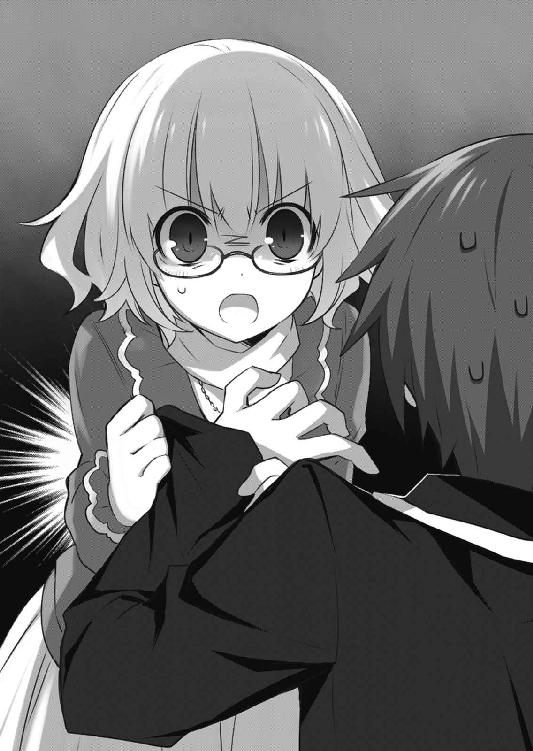
『いやー、なかなか個性的な先生ねえ』
呑気な琴里の笑い声が聞こえてくる。士道は足を運動させたまま声を張り上げた。
「ざっけんな......っ！ 何を呑気な──」
と、言いかけた瞬間。
「の......ッ!?」
「............！」
インカムに注意がいっていたため、士道は曲がり角の先から歩いてきた生徒とぶつかり、転んでしまった。
「っつつ......す、すまん、大丈夫か？」
言いながら身を起こす。と......
「ぃ......ッ!?」
士道は心臓が引き絞られるのを感じた。何しろそこにいたのは、あの鳶一折紙嬢だったのだから。
しかもそれだけではない。転んだ拍子に尻餅をついてしまったのだろう、ちょうど士道の方に向かってＭ字開脚をしていた。......白だった。
思わず目を背ける。しかし折紙はさして慌てた様子もなく、
「平気」
と言って立ち上がった。
「どうしたの」
次いで、折紙は士道に訊ねてきた。
だがそれは士道が廊下を走っていたことについてではないようだった。どちらかというと──そう、今士道が、顔をうつむけて額に手を当てていることについてだろう。
「......いや、気にしないでくれ。絶対にないと思ってたシチュエーションに遭遇してしまったのがショックでな......」
最後の砦が崩れてしまった。恐るべきは〈ラタトスク〉のシミュレーション能力。なんだかんだであのゲーム、よくできていたのかもしれなかった。
「そう」
折紙はそれだけ言うと、廊下を歩いていった。
と、その瞬間、右耳に琴里の声が響く。
『──ちょうどいいわ士道。彼女でも訓練しておきましょう』
「は......はぁッ!?」
『やっぱり先生だけじゃなく、同年代のデータも欲しいしね。それに精霊とは言わないまでもＡＳＴ要員。なかなか参考になりそうじゃない。見る限り、彼女も周りに言いふらすタイプとは思えないけれど？』
「おまえ......ッ、ざけんなよ......？」
『精霊と話したいんでしょ？』
「......ッ」
士道は息を詰まらせると、下唇を噛んだ。
覚悟を決めて、折紙の背に声を投げる。
「と、鳶一っ」
「なに」
折紙はまるで声をかけられるのを待っていたかのようなタイミングで振り向いた。
士道は少し驚きながらも、呼吸を落ち着けて唇を開いた。なんだかんだで珠恵のケースを経験しているため、先ほどよりは心拍は平静だった。そう、やりすぎなければよいのだ、やりすぎなければ。
「その服、可愛いな」
「制服」
「......ですよねー」
『なんで制服をチョイスしたのよこのウスバカゲロウ』
ただの虫の名前なのにものすごく罵倒されてる気がした。ふしぎ！
──先生のときは成功したもんだから......！ という意思を込めて頭を小さく振る。
『......手伝おうか？』
と、焦れたのだろう、また令音が助け船を出してきた。
不安は残るものの、一人で会話を続ける自信もない。士道は小さくうなずいた。
右耳に聞こえてくる言葉に従い、声を発していく。
「あのさ、鳶一」
「なに」
「俺、実は......前から鳶一のこと知ってたんだ」
「そう」
声は素っ気ないままだったが、信じられないことに折紙が言葉を続けてきた。
「私も、知っていた」
「────！」
内心もの凄く驚きながらも、声には出さない。今令音の指示以外の台詞を喋ってしまっては、一気にこのペースが瓦解してしまいそうだった。
「──そうなんだ。嬉しいな。......それで、二年で同じクラスになれてすげえ嬉しくてさ。ここ一週間、授業中ずっとおまえのこと見てたんだ」
うっわ我ながら気持ち悪い。ストーカーじゃん、なんて思いながらも、その台詞を口に出す。
「そう」
しかし折紙は、
「私も、見ていた」
真っ直ぐに士道を見ながら、そう言った。
「......っ」
ごくりと唾液を飲み込む。実際士道は気まずくて授業中折紙の方なんて見られなかったのだが。
激しく脈打つ心臓を抑え込むように、耳に入ってくる言葉をそのまま口から出していく。
「本当に？ あ、でも実は俺それだけじゃなくて、放課後の教室で鳶一の体操着の匂いを嗅いだりしてるんだ」
「そう」
さすがにこれはドン引きだろうと思ったが、折紙は微塵も表情を動かさなかった。
それどころか、
「私も、やっている」
「............!?」
──やっているって、どっちを!? 自分のだよな!? そうだと言ってくれ！
士道は顔中にびっしり汗を浮かべた。
というか琴里と令音、さすがに台詞がおかしくはないだろうか。
だが頭の中がグルグル回っている士道に、今さら自分の言葉で会話することなんて不可能だった。
「──そっか。なんか俺たち気が合うな」
「合う」
「それで、もしよかったらなんだけど、俺と付き合ってくれないか──って急展開すぎんだろいくらなんでも！」
もう訓練とかどうなってもいい。たまらず後方を振り返り、叫びを上げる。
折紙から見たら、勝手に告白して自分の発言に盛大なノリツッコミをしている変な男である。
『......いや、まさか本当にそのまま言うとは』
「そのまま言えっつったのあんたじゃねえか！」
怨嗟を声に乗せて発し、すぐにハッとして折紙に向き直る。
折紙はいつもと変わらない無表情......ではあったのだが、気のせいだろうか、先ほどより少しだけ、ほんの少しだけ、目を見開いているように見えた。
「あ、その、なんだ......すまん、今のは──」
「構わない」
「..............................は？」
士道は間の抜けた声を出した。目が点になる。口が力無く開かれ、手足が弛緩する。要は、身体全体を使って呆然とした。
──ちょっと、意味がわからない。今この少女は何と言った？
「な......なんて？」
「構わない、と言った」
「な、なななななななにが？」
「付き合っても構わない」
「............ッ!?」
士道は顔中に汗をぶわっと吹き出させた。側頭部に軽く手を当て、落ち着け、落ち着けと自分に語りかける。
考えられない。普通に考えればありえない。だって、数えるくらいしか会話を交わしたこともない男にいきなり交際を迫られて、ＯＫする女がいるだろうか。
......いやまあいないことはないんだろうけど、折紙に関しては絶対にそんな答えを返してくるとは思わなかったのだ。
──いや待て。士道はぴくりと眉を動かした。もしかしたら折紙は、何か勘違いをしているのではないだろうか。
「あ、ああ......どこかに出かけるのに付き合ってくれるってことだよな？」
「............？」
折紙が、小さく首を傾げた。
「そういう意味だったの？」
「え、あ、いや......ええと、鳶一は、どういう意味だと思ったんだ......？」
「男女交際のことかと思っていた」
「............ッ！」
士道は、頭に雷が直撃したかのように全身を震わせた。
何というのだろう、折紙の口から『男女交際』なんて言葉が出るのは、恐ろしく背徳的な感じがしたのである。
「違うの？」
「い、いや......違わない......けど」
「そう」
折紙が、何事もなかったかのように首肯する。
次の瞬間、士道は思いっきり後悔した。
──なぜ、なぜ「違わない」なんて言ってしまったのか！ 今なら、今ならまだ勘違いで通せたのに！
と。
ウゥゥゥゥゥゥゥゥゥゥゥゥゥゥゥゥゥゥゥゥゥゥ───────────
「っ!?」
瞬間、何の前触れもなく、あたりに警報が響き渡った。
それとほぼ同時に、折紙が顔を軽く上げる。
「──急用ができた。また」
そしてそう言うと、踵を返して廊下を走っていってしまった。
「お、おい──」
今度は、士道が声をかけても止まらなかった。
「ど......どーすりゃいいんだ、これ......」
ほどなくして、インカム越しに声が聞こえてくる。
『士道、空間震よ。一旦〈フラクシナス〉に移動するわ。戻りなさい』
「や、やっぱり、精霊なのか......？」
士道が問うと、琴里は一拍置いてから続けてきた。
『ええ。出現予測地点は──来禅高校よ』
◇
時刻は、一七時二〇分。
避難を始める生徒たちの目を避けながら、街の上空に浮遊している〈フラクシナス〉に移動した三人は、艦橋スクリーンに表示された様々な情報に視線を送っていた。
軍服に着替えた琴里と令音は、時折言葉を交わしながら意味ありげにうなずいていたが、正直士道には、画面上の数値が何を示しているのかよくわからない。
唯一理解できるのは──画面右側に示されているのが、士道の高校を中心にした街の地図であることくらいである。
「なるほど、ね」
艦長席に座りチュッパチャプスを舐めながら、クルーと言葉を交わしていた琴里は、小さく唇の端を上げた。
「──士道」
「なんだ？」
「早速働いてもらうわ。準備なさい」
「......っ」
琴里の言葉に、士道は身体を硬直させた。
いや、予想はしていたし、覚悟もしていたはずなのだ。
だがやはり、実際そのときが来てしまうと緊張を隠せそうにはなかった。
「──もう彼を実戦登用するのですか、司令」
と、艦長席の隣に立っていた神無月が、スクリーンに目をやりながら不意に声を発した。
「相手は精霊。失敗はすなわち死を意味します。訓練は十分なのでしょげふッ」
言葉の途中で、神無月の鳩尾に琴里の拳がめり込む。
「私の判断にケチをつけるなんて、偉くなったものね神無月。罰として今からいいと言うまで豚語で喋りなさい」
「ぶ、ブヒィ」
なんかものすごく慣れた様子で神無月が返す。
士道はその光景を見ながら吹き出た汗を拭った。
「......いや、琴里、神無月さんの言うことももっともだと思うんだが......」
「あら、士道ったら豚語が理解できたの？ さすが豚レベルの男ね」
「ぶ......っ、豚を舐めるなよ！ 豚は意外とすごい動物なんだぞ！」
「知っているわ。きれい好きだし力も強い。なんでも犬より高度な知能を持っているという説もあるとか。だから有能な部下である神無月や、尊敬する兄である士道に、最大限の敬意として豚という呼称を使っているのよ。豚。この豚」
「......ぐぐっ」
正直あまり敬称には聞こえなかった。
しかし琴里も、神無月の疑問と士道の不安がもっともであることくらいは理解しているようだった。キャンディの棒をピンと上向きにし、スクリーンを示す。
「士道、あなたかなりラッキーよ」
「え......？」
琴里の視線を追うように、スクリーンに目を向ける。
やはり意味不明な数字が躍っていたが──右側の地図に、先ほどと変わったところが見受けられた。
士道の高校に赤いアイコンが一つ、そしてその周囲に、小さな黄色いアイコンがいくつも表示されていたのである。
「赤いのが精霊、黄色いのがＡＳＴよ」
「......で、何がラッキーだってんだよ」
「ＡＳＴを見て。さっきから動いてないでしょう？」
「ああ......そうだな」
「精霊が外に出てくるのを待ってるのよ」
「なんでまた。突入しないのか？」
士道が首を傾げると、琴里が大仰に肩をすくめて見せた。
「ちょっとは考えてもの言ってよね恥ずかしい。粘菌だってもう少し理知的よ」
「な、なにおう！」
「そもそもＣＲ--ユニットは、狭い屋内での戦闘を目的として作られたものではないのよ。いくら随意領域があるとはいっても、遮蔽物が多く、通路も狭い建造物の中では確実に機動力が落ちるし、視界も遮られてしまうわ」
言いながら、琴里がパチンと指を鳴らす。それに応じるように、スクリーンに表示されていた画像が、実際の高校の映像に変わった。
校庭に浅いすり鉢状のくぼみができており、その周りの道路や校舎の一部も綺麗に削り取られている。まさに先日、士道が見たのと同じ光景だった。
「校庭に出現後、半壊した校舎に入り込んだみたいね。こんなラッキー滅多にないわよ。ＡＳＴのちょっかいなしで精霊とコンタクトが取れるんだから」
「......なるほどな」
理屈はわかった。
だが、琴里の台詞に引っかかりを覚えた士道は、ジトッと半眼を作る。
「......精霊が普通に外に現れてたら、どうやって俺を精霊と接触させるつもりだったんだ？」
「ＡＳＴが全滅するのを待つか、ドンパチしてる中に放り込むか、ね」
「............」
士道は先ほどよりも深ぁーく、今の状況がどれだけありがたいものかを知った。
「ん、じゃあ早いところ行きましょうか。──士道、インカムは外してないわね？」
「あ、ああ」
右耳に触れる。確かにそこには、先ほど使用したままのインカムが装着されていた。
「よろしい。カメラも一緒に送るから、困ったときはサインとして、インカムを二回小突いてちょうだい」
「ん......了解した。でもなあ......」
士道は半眼を作り、琴里と、艦橋下段で自分の持ち場についている令音に視線を送った。
訓練のときの助言を鑑みる限り、正直心細いサポートメンバーだった。
士道の表情からおおよそ思考を察したのだろう、琴里が不敵な笑みを浮かべる。
「安心なさい士道。〈フラクシナス〉クルーには頼もしい人材がいっぱいよ」
「そ、そうなのか？」
士道が疑わしげな顔で聞き返すと、琴里が上着をバサッと翻して立ち上がった。
「たとえば」
そして艦橋下段のクルーの一人をビシッと指さす。
「五度もの結婚を経験した恋愛マスター・〈早過ぎた倦怠期〉川越！」
「いやそれ四回は離婚してるってことだよな!?」
「夜のお店のフィリピーナに絶大な人気を誇る、〈社長〉幹本！」
「それ完全に金の魅力だろ!?」
「恋のライバルに次々と不幸が。午前二時の女・〈藁人形〉椎崎！」
「絶対呪いかけてるだろそれ！」
「一〇〇人の嫁を持つ男・〈次元を越える者〉中津川！」
「ちゃんとｚ軸のある嫁だろうな!?」
「その愛の深さゆえに、今や法律で愛する彼の半径五〇〇メートル以内に近づけなくなった女・〈保護観察処分〉箕輪！」
「なんでそんな奴らばっかなんだよ！」
「......皆、クルーとしての腕は確かなんだ」
艦橋下段から、ぼそぼそっとした令音の声が聞こえてくる。
「そ、そう言われても......」
「いいから早いところ行ってきなさい。精霊が外に出たらＡＳＴが群がってくるわ」
苦情を発しかけた士道の尻を、琴里がボンっ、と勢いよく蹴る。
「......ってッ、こ、このやろ......」
「心配しなくても大丈夫よ。士道なら一回くらい死んでもすぐニューゲームできるわ」
「っざけんな、どこの配管工だそれ」
「マンマミィーヤ。妹の言うことを信じない兄は不幸になるわよ」
「兄の言うこときかない妹に言われたかねえよ」
士道はため息混じりにそう言ったが、大人しく艦橋のドアに足を向けた。
「グッドラック」
「おう」
ビッと親指を立ててくる琴里に、軽く手を上げて返す。
未だ心臓は高鳴っていたが──この機を逃すわけにはいかなかった。
倒すとか、恋をさせるとか、世界を救うとか。
そんな大それたことはまったく考えていない。
ただ──あの少女と、もう一度話をしてみたかった。
〈フラクシナス〉下部に設えられている顕現装置を用いた転送機は、直線上に遮蔽物さえなければ、一瞬で物質を転送・回収できるという代物だという話だ。
最初は少々船に酔ったかのような気持ち悪さを感じたが、数回目ともなると多少は慣れが出てくる。
一瞬のうちに視界が〈フラクシナス〉から、薄暗い高校の裏手に変わったのを確認してから、士道は軽く頭を振った。
「さて、まずは校舎内に──」
言いかけて、言葉を止める。
士道の目の前にある校舎の壁が、冗談のようにごっそりと削り取られており、内部を覗かせていたからだ。
「実際見るととんでもねえな......」
『まあ、ちょうどいいからそこから入っちゃいなさい』
右耳に詰めたインカムから、琴里の声が聞こえてくる。
士道は「......了解」と頬をかきながら呟くと、校舎の中に入っていった。あまりのんびりしていては精霊が外に出てしまうかもしれないし、それ以前に、士道がＡＳＴに見つかって『保護』されてしまう可能性もある。
『さ、急ぎましょ。ナビするわ。精霊の反応はそこから階段を上がって三階、手前から四番目の教室よ』
「了解......っ」
士道は深呼吸をすると、近くの階段を駆け上がっていった。
そして一分とかからず、指定された教室の前まで辿り着く。
扉は開いておらず、中の様子は窺えなかったが、この中に精霊がいると思うと自然心臓は早鐘のように鳴った。
「て──ここ、二年四組。俺のクラスじゃねえか」
『あら、そうなの。好都合じゃない。地の利とまでは言わないけど、まったく知らない場所よりよかったでしょ』
琴里が言ってくる。実際、まだ進級してそう日が経っていないので、そこまで知っているというわけでもないのだが。
とにかく、精霊が気まぐれを起こす前に接触せねばならない。士道は唾を飲み込んだ。
「......やあ、こんばんわ、どうしたの、こんなところで」
小さな声で、最初にかける言葉を何度か繰り返し。
士道は、意を決して教室の扉を開けた。
夕日で赤く染められた教室の様子が、網膜に映り込んでくる。
「────」
瞬間。
頭の中で用意していた薄っぺらな言葉なんて、一切合切吹っ飛んだ。
「あ────」
前から四番目、窓際から二列目──ちょうど士道の机の上に、不思議なドレスを身に纏った黒髪の少女が、片膝を立てるようにして座っていた。
幻想的な輝きを放つ目を物憂げな半眼にし、ぼうっと黒板を眺めている。
半身を夕日に照らされた少女は、見る者の思考能力を一瞬奪ってしまうほどに、神秘的。
だが、その完璧にも近いワンシーンは、すぐに崩れることとなった。
「──ぬ？」
少女が士道の侵入に気づき、目を完全に開いてこちらを見てくる。
「......ッ！ や、やあ──」
と、士道がどうにか心を落ち着けながら手を上げ......ようとした瞬間。
──ひゅん、と。
少女が無造作に手を振るったかと思うと、士道の頬を掠めて一条の黒い光線が通り抜けていった。
一瞬のあと、士道が手を掛けていた教室の扉と、その後ろにある廊下の窓ガラスが盛大な音を立てて砕け散る。
「ぃ......ッ!?」
突然のことに、一瞬その場に固まってしまう。頬に触れてみると、少し血が流れていた。
だが、呆然ともしていられない。
『士道！』
琴里の声が鼓膜を痛いほどに震わせる。
少女は鬱々とした表情を作りながら、腕を大きく振り上げていた。手のひらの上には、丸く形作られた光の塊のようなものが、黒い輝きを放っている。
「ちょ......っ」
叫びを上げるより早く、転げるように壁の後ろに身を隠す。
一瞬あと、先ほどまで士道がいた位置を光の奔流が通り抜け、校舎の外壁を容易く突き破って外へ伸びていった。
その後も、何度か連続して黒い光が放たれる。
「ま......待ってくれ！ 俺は敵じゃない！」
随分と風通しのよくなってしまった廊下から声を上げる。
と、士道の言葉が通じたのか、それきり光線は放たれなくなった。
「......は、入って大丈夫なのか......？」
『見たところ、迎撃準備はしてないわね。やろうと思えば、壁ごと士道を吹き飛ばすなんて容易いはずだし。──逆に時間を空けて機嫌を損ねてもよくないわ。行きましょう』
独り言のような士道の呟きに、琴里が答えてくる。恐らくカメラはもう教室に入っているのだろう。
唾液をごくりと飲み下してから、士道は扉のなくなった教室の入り口の前に立った。
「............」
そんな士道に、少女はじとーっとした目を向けてきていた。一応攻撃はしてこないものの、その視線には猜疑と警戒が満ちている。
「と、とりあえず落ち着い──」
士道は敵意がないことを示すために両手を上げながら、教室に足を踏み入れた。
だが、
「──止まれ」
少女が凜とした声音を響かせると同時──ばじゅッ、と士道の足元の床を光線が灼く。士道は慌てて身体を硬直させた。
「......っ」
少女が、士道の頭頂から爪先までを舐めるように睨め回し、口を開いてくる。
「おまえは、何者だ」
「っ......ああ、俺は──」
『待ちなさい』
と、士道が答えようとしたところで、なぜか琴里からストップが入った。
〈フラクシナス〉艦橋のスクリーンには今、光のドレスを纏った精霊の少女が、バストアップで映し出されていた。
愛らしい貌を刺々しい視線で飾りながら、カメラの右側──士道の方を睨みつけている。
そしてその周りには『好感度』をはじめとした各種パラメータが配置されていた。令音が顕現装置で解析・数値化した、少女の精神状態が表示されているのである。
ついでに〈フラクシナス〉に搭載されているＡＩが、二人の会話をタイムラグなしでテキストに起こし、画面の下部に表示させている。
一見、士道が訓練に使用したゲームの画面にそっくりだった。
特大のスクリーンに表示されたギャルゲー画面に、選りすぐられたクルーたちが、至極真面目な顔をして向かい合っている。
なんともシュールな光景である。
と──琴里はぴくりと眉を上げた。
『おまえは、何者だ』
精霊が士道に向かってそう言葉を発した瞬間、画面が明滅し、艦橋にサイレンが鳴り響いたのだ。
「こ、これは──」
クルーの誰かが狼狽に満ちた声を上げる中、画面中央にウインドウが現れる。
①「俺は五河士道。君を救いにきた！」
②「通りすがりの一般人ですやめて殺さないで」
③「人に名を訊ねるときは自分から名乗れ」
「選択肢──っ」
琴里はキャンディの棒をピンと立てた。
令音の操作する解析用顕現装置と連動した〈フラクシナス〉のＡＩが、精霊の心拍や微弱な脳波などの変化を観測し、瞬時に対応パターンを画面に表示したのだ。
これが表示されるのは、精霊の精神状態が不安定であるときに限られる。
つまり、正しい対応をすれば精霊に取り入ることができる。
だがもし間違えれば──
琴里はすぐさまマイクを口に近づけると、返事をしかけていた士道に制止をかけた。
「待ちなさい」
『──っ？』
息を詰まらせるような音が、スピーカーから聞こえてくる。きっと、なぜ琴里が言葉を止めさせたかがわからないのだろう。
精霊をいつまでも待たせているわけにはいかない。琴里はクルーたちに向かってのどを震わせた。
「これだと思う選択肢を選びなさい！ 五秒以内！」
クルーたちが一斉に手元のコンソールを操作する。その結果はすぐに琴里の手元のディスプレイに表示された。
最も多いのは──③番。
「──みんな私と同意見みたいね」
琴里が言うと、クルーたちは一斉にうなずいた。
「①は一見王道に見えますが、向こうがこちらを敵と疑っているこの場で言っても胡散臭いだけでしょう。それに少々鼻につく」
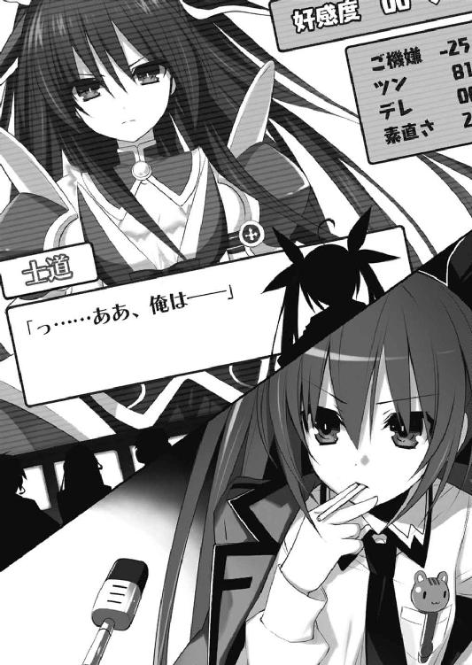
直立不動のまま、神無月が言ってくる。
「......②は論外だね。万が一この場を逃れることができたとしても、それで終わりだ」
次いで、艦橋下段から令音が声を発してきた。
「そうね。その点③は理に適っているし、上手くすれば会話の主導権を握ることもできるかもしれないわ」
琴里は小さくうなずくと、再びマイクを引き寄せた。
「......お、おい、なんだってんだよ......」
少女の鋭い視線に晒されながら言葉を制止された士道は、気まずい空気の中そこに立ちつくしていた。
「......もう一度聞く。おまえは、何者だ」
少女が苛立たしげに言い、目をさらに尖らせる。
と、その瞬間、ようやく右耳に琴里からの声が届いた。
『士道。聞こえる？ 私の言うとおりに答えなさい』
「お、おう」
『──人に名を訊ねるときは自分から名乗れ』
「──人に名を訊ねるときは自分から名乗れ。......って」
言ってしまってから、士道は顔を青くした。
「な、何言わせてんだよ......っ」
だが時既に遅し。士道の声を聞いた少女は途端表情を不機嫌そうに歪め、今度は両手を振り上げて光の球を作りだした。
「ぃ......ッ」
慌てて床を蹴り、右方に転がる。
一瞬あと、士道の立っていた場所に黒い光球が投げつけられた。床に、二階一階まで貫通するような大穴が開く。
ついでに士道はその瞬間の衝撃波でさらに吹き飛ばされ、机と椅子を盛大に巻き込みながら教室の端まで転がった。
「......っぐあ......」
『あれ、おかしいな』
「おかしいなじゃねえ......ッ、殺す気か......っ」
心底不思議そうに言ってくる琴里に返し、士道は頭を押さえながら身を起こした。
と──
「これが最後だ。答える気がないのなら、敵と判断する」
士道の机の上から、少女が言ってくる。士道は泡を食って即座に口を開いた。
「お、俺は五河士道！ ここの生徒だ！ 敵対する意思はない！」
「............」
両手を上げながら士道が言うと、少女は訝しげな目を作りながら士道の机から下りた。
「──そのままでいろ。おまえは今、私の攻撃可能圏内にいる」
「......っ」
士道は了解を示すように、姿勢を保ったままこくこくとうなずいた。
少女が、ゆっくりとした足取りで士道の方に寄ってくる。
「......ん？」
そして軽く腰を折り、しばしの間士道の顔を凝視してから「ぬ？」と眉を上げた。
「おまえ、前に一度会ったことがあるな......？」
「あ......っ、ああ、今月の──確か、一〇日に。街中で」
「おお」
少女は得心がいったように小さく手を打つと、姿勢を元に戻した。
「思い出したぞ。何やらおかしなことを言っていた奴だ」
少女の目から、微かに険しさが消えるのを見取って、一瞬士道の緊張が弛む。
だが、
「ぎ......ッ!?」
刹那の間のあと、士道は前髪を掴まれ顔を上向きにさせられていた。
少女が、士道の目を覗き込むように顔を斜めにしながら視線を放ってくる。
「......確か、私を殺すつもりはないと言っていたか？ ふん──見え透いた手を。言え、何が狙いだ。油断させておいて後ろから襲うつもりか？」
「............っ」
士道は、小さく眉根を寄せ、奥歯をぎりと噛んだ。
少女への恐怖とか、そんなものより先に。
少女が士道の言葉──殺しに来たのではない、というその台詞を、微塵も信じることができないのが。
信じることができないような環境に晒されていた、というのが。
気持ち悪くて、たまらなかった。
「──人間は......ッ」
思わず、士道は声を発していた。
「おまえを殺そうとする奴らばかりじゃ......ないんだッ」
「............」
少女が目を丸くして、士道の髪から手を離す。
そしてしばしの間、もの問いたげな視線で士道の顔を見つめたあと、小さく唇を開いた。
「......そうなのか？」
「ああ、そうだとも」
「私が会った人間たちは、皆私は死なねばならないと言っていたぞ」
「そんなわけ......ないだろッ」
「............」
少女は何も答えず、手を後ろに回した。
半眼を作って口を結び──まだ士道の言うことが信じ切れないという顔を作る。
「......では聞くが。私を殺すつもりがないのなら、おまえは一体何をしに現れたのだ？」
「っ、それは──ええと」
『士道』
士道が口ごもると同時、琴里の声が右耳に響いてきた。
「──また選択肢ね」
琴里はぺろりと唇を舐めて、スクリーンの中央に表示された選択肢を見つめた。
①「それはもちろん、君に会うためさ」
②「なんでもいいだろ、そんなの」
③「偶然だよ、偶然」
手元のディスプレイに、瞬時にクルーたちの意見が集まってくる。①が人気だ。
「②はまあ、さっきの反応を見る限り駄目でしょうね。──士道、とりあえず無難に、君に会うためとでも言っておきなさい」
琴里がマイクに向かって言うと、士道が画面の中で立ち上がりながら口を開いた。
『き、君に会うためだ』
『......？』
少女が、きょとんとした顔を作る。
『私に？ 一体何のために』
少女が首を傾げてそう言った瞬間、またも画面に選択肢が表示される。
①「君に興味があるんだ」
②「君と、愛し合うために」
③「君に訊きたいことがある」
「んー......どうしたもんかしらねえ」
琴里があごをさすっていると、手元のディスプレイには②の回答が集まっていった。
「ここはストレートにいっておいた方がいいでしょう、司令。男気を見せないと！」
「はっきり言わないとこの手の娘はわからないですって！」
艦橋下段から、クルーの声が響いてくる。
琴里はふうむとうなってから足を組み替えた。
「まあ、いいでしょ。①や③だとまた質問を返されるだろうし。──士道。君と、愛し合うために、よ」
マイクに向かって指示を発する。瞬間、士道の肩がビクッと震えた。
「あー......その、だな」
琴里からの指示を受けた士道は、しどろもどろになって目を泳がせた。
「なんだ、言えないのか。おまえは理由もなく私のもとに現れたと？ それとも──」
少女の目が、再び険しいものになっていく。士道は慌てて手を振りながら声を発した。
「き、君と......愛し合うため......に？」
「............」
士道が言った瞬間、少女は手を抜き手にし、横薙ぎに振り抜いた。
瞬間、士道の頭のすぐ上を風の刃が通り抜け──教室の壁を切り裂いて外へと抜けていった。士道の髪が数本、中程で切られて風に舞う。
「ぬわ......ッ!?」
「......冗談はいらない」
ひどく憂鬱そうな顔をして、少女が呟く。
「............っ」
士道は、唾液を飲み下した。
一瞬にして今し方感じていた恐怖が薄れ、心臓が高鳴っていく。
──ああ、そうだ、この顔だ。
士道が大嫌いな、この顔だ。
自分が愛されるなんて微塵も思っていないような、世界に絶望した表情だ。
士道は、思わずのどを震わせていた。
「俺は......ッ、おまえと話をするために......ここにきたッ」
士道が言うと──少女は意味がわからないといった様子で眉をひそめた。
「......どういう意味だ？」
「そのままだ。俺は、おまえと、話がしたいんだ。内容なんかなんだっていい。気に入らないなら無視してくれたっていい。でも、一つだけわかってくれ。俺は──」
『士道、落ち着きなさい』
琴里が、諫めるように言ってくる。しかし士道は止まらなかった。
だって、今までこの少女には、手を差し伸べる人間がいなかったのだ。
たった一言でもあれば状況は違ったかもしれないのに、その一言をかけてやる人間が、一人もいなかったのだ。
士道には、父が、母が、そして琴里がいた。
でも、彼女には、誰もいなかったのだ。
だったら──士道が言うしかない。
「俺は──おまえを、否定しない」
士道はだん、と足を踏みしめると、一言一言を区切るようにそう言った。
「............っ」
少女は眉根を寄せると、士道から目を逸らした。
そしてしばしの間黙ったあと、小さく唇を開く。
「......シドー。シドーといったな」
「──ああ」
「本当に、おまえは私を否定しないのか？」
「本当だ」
「本当の本当か？」
「本当の本当だ」
「本当の本当の本当か？」
「本当の本当の本当だ」
士道が間髪入れず答えると、少女は髪をくしゃくしゃとかき、ずずっと鼻をすするかのような音を立ててから、顔の向きを戻してきた。
「──ふん」
眉根を寄せ口をへの字に結んだままの表情で、腕組みをする。
「誰がそんな言葉に騙されるかばーかばーか」
「っ、だから、俺は──」
「......だがまあ、あれだ」
少女は、複雑そうな表情を作ったまま、続けた。
「どんな腹があるかは知らんが、まともに会話をしようという人間は初めてだからな。......この世界の情報を得るために少しだけ利用してやる」
言って、もう一度ふんと息を吐く。
「......は、はあ？」
「話しくらいしてやらんこともないと言っているのだ。そう、情報を得るためだからな。うむ、大事。情報超大事」
言いながらも──ほんの少しだけ、少女の表情が和らいだ気がする。
「そ、そうか......」
士道は頬をポリポリとかきながらそう返した。
これは......とりあえずファーストコンタクトに成功したと考えていいのだろうか。
士道が困惑していると、右耳に琴里の声が響いた。
『──上出来よ。そのまま続けて』
「あ、ああ......」
と、少女が大股で教室の外周をゆっくりと回り始めた。
「ただし不審な行動を取ってみろ。おまえの身体に風穴を開けてやるからな」
「......オーケイ、了解した」
士道の返答を聞きながら、少女がゆっくりと教室に足音を響かせていく。
「シドー」
「な、なんだ？」
「──早速聞くが。ここは一体何なんだ？ 初めて見る場所だ」
言って、歩きながら倒れていない机をペタペタと触り回る。
「え......ああ、学校──教室、まあ、俺と同年代くらいの生徒たちが勉強する場所だ。その席に座って、こう」
「なんと」
少女は驚いたように目を丸くした。
「これに全て人間が収まるのか？ 冗談を抜かすな。四〇近くはあるぞ」
「いや、本当だよ」
言いながら、士道は頬をかいた。
少女が現れるときは、街には避難警報が発令されている。少女が見たことのある人間なんて、ＡＳＴくらいのものなのだろう。人数もそこまで多くはあるまい。
「なあ──」
少女の名を呼ぼうとし──士道は声を詰まらせた。
「ぬ？」
士道の様子に気づいたのだろう、少女が眉をひそめてくる。
そしてしばし考えを巡らせるようにあごに手を置いたあと、
「......そうか、会話を交わす相手がいるのなら、必要なのだな」
そううなずいて、
「シドー。──おまえは、私を何と呼びたい」
手近にあった机に寄りかかりながら、そんなことを言ってきた。
「......は？」
言っている意味がわからず、問い返す。
少女はふんと腕組みすると、尊大な調子で続けた。
「私に名をつけろ」
「............」
しばし沈黙したあとで。
──重ぇぇぇぇぇぇぇぇぇぇぇぇぇぇぇぇぇぇぇぇぇぇぇぇッ!!
士道は心中で絶叫した。
「お、俺がかッ!?」
「ああ。どうせおまえ以外と会話をする予定はない。問題あるまい」
「うっわ、これまたヘビーなの来たわね」
艦長席に腰掛けながら、琴里は頬をかいた。
「......ふむ、どうしたものかな」
艦橋下段で、令音がそれに応えるようにうなる。
艦橋にはサイレンが鳴っているものの、スクリーンには選択肢が表示されていなかった。
ＡＩでランダムに名前を組むだけでは、パターンが多すぎて表示しきれないのだろう。
「落ち着きなさい士道。焦って変な名前言うんじゃないわよ」
言ってから、琴里は立ち上がり、クルーたちに声を張り上げた。
「総員！ 今すぐ彼女の名前を考えて私の端末に送りなさい！」
言ってからディスプレイに視線を落とす。すでに何名かのクルーから名前案が送信されてきていた。
「ええと......川越！ 美佐子って別れた奥さんの名前じゃない！」
「す、すいません、思いつかなかったもので......」
司令室の下部から、すまなそうな男の声が聞こえてくる。
「......ったく、他は......麗鐘？ 幹本、なんて読むのこれ」
「麗鐘です！」
「あなたは生涯子供を持つことを禁じるわ」
声を上げた男性クルーに指を突きつける。
「すいません！ もう一番上の子が小学生です！」
「一番上の子？」
「はい！ 三人います！」
「ちなみに名前は」
「上から、美空、振門体、聖良布夢です！」
「一週間以内に改名して、学区外に引っ越しなさい」
「そこまでですかッ!?」
「変な名前つけられた子供の気持ちを察しなさいこのダボハゼ」
「大丈夫ですよ！ 最近はみんな似たようなものですから！」
ゴンゴン、とくぐもった音が艦橋に響く。
恐らく士道がインカムを指で小突いているのだろう。
スクリーンを見やると、少女が腕組みしながら、待ちくたびれたように指で肘を叩いているのがわかる。
琴里は画面をざっと見た。ロクなものはない。はぁと盛大に息を吐き出す。
まったくセンスのない部下たちである。琴里はやれやれと首を振った。
少女の美しい容貌を見やる。彼女に相応しいのは、古式ゆかしい優雅さであろう。そう、たとえば──
「トメ」
『トメ！ 君の名前はトメだ！』
士道が言った途端、司令室内に真っ赤なランプが灯り、ビーッ、ビーッというけたたましい音が鳴った。
「パターン青、不機嫌です！」
クルーの一人が、慌てた様子で声を荒らげる。
大画面に表示された好感度メーターが、一瞬のうちに急下落していた。
ついでに画面内の士道の足元に、ズガガガガガガガンッ！ とマシンガンのように小さな光球が連続して降り注いだ。
『のわぁぁぁぁッ!?』
「......琴里？」
不思議そうな令音の声。
「あれ？ おかしいな。古風でいい名前だと思ったんだけど」
「......なぜかわからないが、無性に馬鹿にされた気がした」
少女が額に血管を浮かべながら言う。
「......ッ！ す、すまん......ちょっと待ってくれ」
冷静に考えてみればトメはないわ。士道は煙の上がる床を見て身を竦ませながら、自分の浅慮を呪った。全国のお婆ちゃんたちには悪いけれど、今どきの女の子につけるような名前ではない。
というかそもそも、出会い頭に名付け親になってくれと言われるとは露ほども予想していなかった。心臓をどうにか抑え込みながら、考えと視線をぐるぐると巡らせる。でも、いきなり女の子の名前なんて出てくるわけがない。名前、名前、名前......知っている女性の名前が頭の中を掠めては消えていく。しかしあまり時間もとれない。そうこうしている間にも、少女の顔は不機嫌になっていく。
「────と、十香」
困りに困った士道は、そんな名前を口にしていた。
「ぬ？」
「ど、どう......かな」
「............」
少女はしばらく黙ったあと──
「まあ、いい。トメよりはマシだ」
士道は見るからに余裕のない苦笑を浮かべて後頭部をかいた。
だが......それよりも大きな後悔が後頭部にのしかかる。
だってそれは、四月一〇日に初めて会ったから、なんて安直な名だったのだ。
「......なーにやってんだ、俺......」
「何か言ったか？」
「っ、あ、いや、なんでも......」
慌てて手を振る。少女は少し不思議そうにしながらも、深くは追及してこなかった。
すぐにトン、トンと士道に近づいてくる。
「それで──トーカとは、どう書くのだ？」
「ああ、それは──」
士道は黒板の方に歩いていくと、チョークを手に取り、『十香』と書いた。
「ふむ」
少女が小さくうなってから、士道の真似をするように指先で黒板をなぞる。
「あ、いや、ちゃんとチョークを使わないと文字が......」
言いかけて、言葉を止める。少女の指が伝ったあとが綺麗に削り取られ、下手くそな『十香』の二文字が記されていた。
「なんだ？」
「......いや、なんでもない」
「そうか」
少女はそう言うと、しばしの間自分の書いた文字をじっと見つめ、小さくうなずいた。
「シドー」
「な、なんだ？」
「十香」
「へ？」
「十香。私の名だ。素敵だろう？」
「あ、ああ......」
何というか......気恥ずかしい。いろんな意味で。
士道は少し視線を逸らすようにしながら頬をかいた。
だが、少女──十香は、もう一度同じように唇を動かした。
「シドー」
......さすがに士道でも、十香の意図はわかった。
「と、十香......」
士道がその名を呼ぶと、十香は満足そうに唇の端をニッと上げた。
「......っ」
心臓が、どくんと跳ねる。
そういえば十香の笑顔を見るのは、これが初めてだった。
と、そのとき、
「──ぇ......？」
突如、校舎を凄まじい爆音と震動が襲った。
咄嗟に黒板に手をついて身体を支える。
「な、なんだ......ッ!?」
『士道、床に伏せなさい』
と、右耳に琴里の声が響いてくる。
「へ......？」
『いいから、早く』
何が何だかわからないまま、士道は言われたとおりに床にうつぶせになった。
次の瞬間、ガガガガガガガガガガガ──ッと、けたたましい音を立てて、教室の窓ガラスが一斉に割れ、ついでに向かいの壁にいくつもの銃痕が刻まれていった。まるでマフィアの抗争のような有様だった。
「な、なんだこりゃ......ッ！」
『外からの攻撃みたいね。精霊をいぶり出すためじゃないかしら。──ああ、それとも校舎ごと潰して、精霊が隠れる場所をなくすつもりかも』
「な......ッ、そんな無茶苦茶な......！」
『今はウィザードの災害復興部隊がいるからね。すぐに直せるなら、一回くらい壊しちゃっても大丈夫ってことでしょ。──にしても予想外ね。こんな強攻策に出てくるなんて』
と、そこで、士道は顔を上に向けた。
十香が、先ほど士道に対していたときとはまるで違う表情をして、ボロボロになった窓の外に視線を放っていた。
無論、十香には銃弾はおろか、窓ガラスの破片すら触れてはいない。
だけれどその顔は、ひどく痛ましく歪んでいた。
「──十香ッ！」
思わず、士道はその名を呼んでいた。
「......っ」
ハッとした様子で、十香が視線を、外から士道に移してくる。
未だ凄まじい銃声は響いていたが、二年四組の教室への攻撃は一旦止んでいた。
外に気を張りながらも身を起こす。と、十香が悲しげに目を伏せた。
「早く逃げろ、シドー。私と一緒にいては、同胞に討たれることになるぞ」
「............」
士道は、無言で唾液を飲み込んだ。
確かに、逃げなければならないのだろう。だけれど──
『選択肢は二つよ。逃げるか、とどまるか』
琴里の声が聞こえてくる。士道はしばしの逡巡のあと、
「......逃げられるかよ、こんなところで......ッ」
押し殺した声で、そう言った。
『馬鹿ね』
「......なんとでも言え」
『褒めてるのよ。──素敵なアドバイスをあげる。死にたくなかったら、できるだけ精霊の近くにいなさい』
「......おう」
士道は唇を真一文字に結ぶと、十香の足下に座り込んだ。
「は──？」
十香が、目を見開く。
「何をしている？ 早く──」
「知ったことか......っ！ 今は俺とのお話しタイムだろ。あんなもん、気にすんな。──この世界の情報、欲しいんだろ？ 俺に答えられることならなんでも答えてやる」
「......！」
十香は一瞬驚いた顔を作ってから、士道の向かいに座り込んだ。
◇
「────」
ワイヤリングスーツに身を包んだ折紙は、その両手に巨大なガトリング砲を握っていた。
照準をセットして引き金を引き、ありったけの弾を学舎にぶち撒ける。
随意領域を展開させているため、重量も反動もほとんど感じないが、本来ならば戦艦に搭載されている類の大口径ガトリングである。実際、四方から砲撃を受けた校舎は、見る見るうちに穴だらけになってその体積を減らしていった。
とはいえ──顕現装置搭載の対精霊装備ではない。ただ単純に、校舎を破壊して精霊をいぶり出すためのものだ。
『──どう？ 精霊は出てきた？』
ヘッドセットに内蔵されたインカム越しに、燎子の声が聞こえてくる。
燎子は折紙のすぐ隣にいるのだが──この銃声の中では肉声など届かないのだ。
「まだ確認できない」
攻撃の手を止めないまま、答える。
折紙は自らも銃を撃ちながら、目を見開いて崩れゆく校舎をじっと睨めていた。
通常であればまともに見取ることすらできない距離だったが、随意領域を展開させた今の折紙には、校舎脇の掲示板に張られた紙の文字を読むことだって可能だった。
と──折紙は小さく目を細めた。
二年四組。折紙たちの教室。
その外壁が、折紙たちの攻撃によって完全に崩れ落ち──ターゲットである精霊の姿が見えたのだ。
だが──
『......ん？ あれは──』
燎子が訝しげな声を上げた。
それはそうだろう。教室の中には、精霊の他に、もう一人少年と思しき人間が確認できたのである。──逃げ遅れた生徒だろうか。
「な、何あれ。精霊に襲われてる──？」
燎子が眉をひそめながら声を発する。
だけれど折紙はそれに反応を示すことなく、教室をじっと見つめ続けた。
精霊と一緒にいる少年の姿に、見覚えがある気がしたのである。
「────！」
折紙は、目を見開いた。
だってその少年は──折紙のクラスメート・五河士道その人だったのだから。
「──折紙？」
隣から、燎子が怪訝そうに話しかけてくる。
だが折紙は答えず、ただ頭の中に指令を巡らせた。
全身に纏った顕現装置への、最速機動の指令を。
「ちょっと、折紙!?」
『──危険です。独断専行は避けてください』
さすがに異常に気づいたのだろう、燎子と本部からの通信が、ほぼ同時に響く。
しかし折紙は止まらなかった。すぐさま両手に携えていたガトリングを捨て、腰に携えていた近接戦闘用の対精霊レイザー・ブレイド〈ノーペイン〉を引き抜いて、校舎へと向かっていった。
◇
銃弾の吹き荒れる教室で、女の子と向き合いながら話す。
......当然ながら、生まれて初めての経験だった。
十香の力なのだろうか、夥しい数の銃弾は、二人を避けるように、校舎を貫通していく。
とはいえ目の前を弾が通り抜けていくなんて、日常生活でそう体験できるものではない。少しでも動いてしまったら着弾するような気がして、士道は身を硬直させながら会話を続けていた。
会話の内容自体は、なんてことのないものである。
十香が今まで誰にも聞けなかったようなことを質問し、士道が答える。ただそれだけの応酬で、十香は満足そうに笑った。
そしてどれくらい話した頃だろうか──士道の耳に、琴里の声が聞こえてきた。
『──数値が安定してきたわ。もし可能だったら、士道からも質問をしてみてちょうだい。精霊の情報が欲しいわ』
言われて、少し考えを巡らせてから士道は口を開いた。
「なあ──十香」
「なんだ」
「おまえって......結局どういう存在なんだ？」
「む？」
士道の質問に、十香が眉をひそめる。
「──知らん」
「知らん、て......」
「事実なのだ。仕方ないだろう。──どれくらい前だったか、私は急にそこに芽生えた。それだけだ。記憶は歪で曖昧。自分がどういう存在なのかなど、知りはしない」
「そ、そういうものか......？」
士道が頬をかきながら言うと、十香はふんと息を吐いて腕組みした。
「そういうものだ。突然この世に生まれ、その瞬間にはもう空にメカメカ団が舞っていた」
「め、メカメカ団......？」
「あのびゅんびゅんうるさい人間たちのことだ」
どうやらＡＳＴのことらしい。士道は思わず苦笑した。
と、次いでインカムから、クイズに正解したときのような、軽快な電子音が鳴った。
『！ チャンスよ、士道』
「は......？ 何がだ？」
『精霊の機嫌メーターが七〇を超えたわ。一歩踏み込むなら今よ』
「踏み込むって......何すりゃいいんだ？」
『んー、そうね。とりあえず......デートにでも誘ってみれば？』
「はぁ......!?」
琴里の言葉に、士道は思わず大声を上げてしまっていた。
「ん、どうしたシドー」
士道の声に反応して、十香が目を向けてくる。
「ッ──！ や、気にしないでくれ」
「............」
慌てて取り繕うも、十香はじとっとした訝しげな目で士道を見つめてきた。
『誘っちゃいなさいよ。やっぱ親密度上げるためには一気にこう、さ』
「......んなこと言ったって、こいつ出てきたときにはＡＳＴが......」
『だからこそよ。今度現界したとき、大きな建造物の中に逃げ込んでくれるよう頼んでおくの。水族館でも映画館でもデパートでも何でもいいわ。地下施設があるとさらにいいわね。それなら、ＡＳＴも直接は入ってこられないでしょ』
「......む、むう」
「さっきから何をブツブツ言っている。......！ やはり私を殺す算段を!?」
「ち、違う違う！ 誤解だ！」
視線を鋭くし、指先に光球を出現させた十香を、慌てて制止する。
「なら言え。今何と言っていた」
「ぐぬ......」
士道が頬に汗を滲ませながらうめくと、はやし立てるかのような声が右耳に響いてきた。
『ほーら、観念しなさいよ。デートっ！ デートっ！』
そこで艦橋内のクルーを煽動でもしたのだろう、インカムの向こうから、遠雷のようなデートコールが聞こえてくる。
『デ・エ・ト！』
『デ・エ・ト！』
『デ・エ・ト！』
「あーもうわかったよッ！」
士道は観念して叫びを上げた。
実際、琴里の言うこともわからなくはなかったし、次への布石を打っておくことが重要だということはわかるのだが......なんというか、まあ、少々恥ずかしかった。
「あのだな、十香」
「ん、なんだ」
「そ、その......こ、今度俺と」
「ん」
「で、デート......しないか？」
十香は、キョトンとした顔を作った。
「デェトとは一体なんだ」
「そ、それはだな......」
なんだか気恥ずかしくなって、視線を逸らし頬をかく。
と、そのとき、右耳に、少し大きな琴里の声が入ってきた。
『──士道！ ＡＳＴが動いたわ！』
「は......!?」
目前にいる十香にも聞こえてしまっているだろうが、士道は構わず声を発していた。
瞬間──いつの間にやら開放感に溢れていた教室の外から、折紙が現れる。
「──っ！」
十香が一瞬のうちに表情を険しくし、そちらに手のひらを広げる。
それから一拍もおかぬうちに、手にした無骨な機械から光の刃を現出させた折紙が、十香に襲いかかった。
溶接現場もかくやというほどの火花が、あたり一面に飛び散る。
「く──」
「──無粋！」
十香は一喝するように叫ぶと、光の刃を受け止めていた手を、折紙ごと振り払った。
「............っ」
微かに歯を食いしばりながら、折紙が後方へと吹き飛ばされる。──が、即座に姿勢を整えると、銃痕だらけの床に華麗に着地してみせた。
「ち──また、貴様か」
光の刃を受け止めていた手を軽く振りながら、唾棄するように十香が言う。
折紙は士道を一瞥すると、安堵したかのように小さな息を吐いた。
しかしすぐに見慣れない武器を構え直し十香に冷たい視線を放つ。
「............」
その様子を見た十香は、ちらと士道を一瞥してから、自分の足下の床に踵を突き立てた。
「──〈鏖殺公〉！」
瞬間、教室の床が隆起し、そこから玉座が現れる。
「な......」
『士道、離脱よ！ 一旦〈フラクシナス〉で拾うわ。できるだけ二人から離れなさい！』
士道が呆然としていると、琴里が叫ぶのが聞こえてきた。
「んなこと言ったって......っ」
と、十香が玉座の背もたれから剣を抜き、折紙に向かって振るう。
その際の衝撃波で、士道の身体はいとも簡単に、校舎の外に吹き飛ばされた。
「のわぁぁぁッ!?」
『ナイスっ！』
琴里の声が響くと同時、士道の身体が無重力に包まれる。
不思議な浮遊感を感じながら、士道は〈フラクシナス〉に回収された。
第四章 抜き打ちデート
「......そりゃそうだよな、普通に考えりゃ休校だよな......」
士道は後頭部をかきながら、高校前から延びる坂道を下っていた。
士道が精霊に十香という名をつけた次の日。
普通に登校した士道は、ぴたりと閉じられた校門と、瓦礫の山と化した校舎を見て、自分の阿呆さに息を吐いた。
まさに校舎が破壊される現場にいたわけだし、普通に考えれば休校になることくらい推測できたのだろうが......そのあまりの非現実的な光景に、無意識下で自分の日常と切り離して認識していたのかもしれなかった。
それに、昨日の夜ずっと十香との会話ビデオを見ながら反省会をさせられていたため、寝不足で思考力が落ちていたというのもあるかもしれない。
「はあ......ちょっと買い物でもしていくか」
ため息をひとつこぼし、家への帰路とは違う道に足を向ける。
確か卵と牛乳が切れていたはずだったし、このまま帰ってしまうというのも何だった。
だが──数分と待たず、士道は再び足を止めることになった。
道に、立ち入り禁止を示す看板が立っていたのである。
「っと、通行止めか......」
だがそんなものがなくとも、その道を通行できないことは容易に知れた。
何しろアスファルトの地面は滅茶苦茶に掘り返され、ブロック塀は崩れ、雑居ビルまで崩落している。まるで戦争でもあったかのような有様だったのだから。
「──ああ、ここは」
この場所には覚えがあった。初めて十香に会った空間震現場の一角である。
まだ復興部隊が処理をしていないのだろう。一〇日前の惨状をそのままに残していた。
「............」
頭中に少女の姿を思い浮かべながら、細く、息を吐く。
──十香。
昨日まで名を持たなかった、精霊と、災厄と呼ばれる少女。
昨日、前よりずっと長い時間会話をしてみて──士道の予感は確信に変わっていた。
あの少女は確かに、普通では考えられないような力を持っている。国の機関が危険視するのもうなずけるほどに。
今士道の目の前に広がる惨状がその証拠である。確かに、こんな現象を野放しにはしておけないだろう。
「......ドー」
だけれどそれと同時に、彼女がその力をいたずらに振るう、思慮も慈悲もない怪物だとは、到底思えなかった。
「......い、......ドー」
そんな彼女が、士道が大嫌いな鬱々とした顔を作っている。それが、士道にはどうしても許容できなかったのである。
「おい、シドー」
......まあ、そんなことを頭の中にぐるぐる巡らせていたものだから、気づいて当然の事態に思考がいかず、校門前まで歩く羽目になってしまったのであるが。
「......無視をするなっ！」
「──え？」
視界の奥──通行止めになっているエリアの向こう側からそんな声が響いてきて、士道は首を傾げた。
凜と風を裂くような、美しい声。
どこかで......具体的には昨日学校で聞いたことのあるような声。
......今、こんなところでは、聞こえてくるはずのない、声。
「え、ええと──」
士道は自分の記憶と今し方響いた声音を照合しながら、その方向に視線を集中させた。
そしてそのまま、全身を硬直させる。
視線の先。
瓦礫の山の上に、明らかに街中に似つかわしくないドレスを纏った少女が、ちょこんと屈み込んでいた。
「と──十香!?」
そう、士道の脳か目に異常があるのでなければ、その少女は間違いなく、昨日士道が学校で遭遇した精霊だった。
「ようやく気づいたか、ばーかばーか」
背筋が凍るほど美しい貌を不満げな色に染めた少女は、トン、と瓦礫の山を蹴ると、かろうじて原形を残しているアスファルトの上を辿って士道の方へと進んできた。
「とう」
と、通行の邪魔だったのだろう、十香が立ち入り禁止の看板を蹴り倒し、士道の目の前に到着する。
「な、何してんだ、十香......」
「......ぬ？ 何とはなんだ？」
「なんで、こんなところにいるんだよ......っ！」
士道は叫びながら後方に視線を放った。立ち話をする奥様方や、犬の散歩をする近所の住人などが見受けられる。
誰もシェルターに避難していない。つまり、空間震警報が鳴っていない。
要するに、精霊現界の際の前震を、〈ラタトスク〉もＡＳＴも感知できていないということである。
「なんでと言われてもな」
しかし当の本人はその異常事態をまるで気にしていない様子だった。なぜ士道が叫んでいるのかが本当にわからないといった様子で腕組みする。
「おまえから誘ったのだろう、シドー。そう、デェトとやらに」
「な......っ」
こともなげに言い放った十香に、士道は肩を震わせた。
「お、覚えてたのか......？」
「ぬ？ なんだ、私を馬鹿にしているのか？」
「や、そういうわけじゃないんだが......」
「──ふん、まあいい。それよりもシドー、早くデェトだ。デェトデェトデェトデェト」
十香が独特のイントネーションでデートデートと連呼する。
「わ、わかった！ わかったからそのワードを連発するのをやめてくれ！」
「ぬ、なぜだ？......はっ、まさかシドー、おまえ私が意味を知らないのをいいことに、口に出すもおぞましい卑猥な言葉を教え込んだのか？」
頬を赤く染め、十香が眉をひそめる。
「──ッ！ し、してねえしてねえ！ 健全極まりない言葉だ！」
言ってから、頬をかく。ちょっと嘘をついた。人によっては極めて不健全な事態になるかもしれない単語ではある。
と、士道は居心地の悪い視線に身をよじった。
近所の奥様方がニヤニヤしながら、微笑ましいものを見るような目を向けてきているのである。まあ一部、十香の奇妙な格好を訝しむような視線が混じっている気もしたが。
「......ぬ？」
十香もその視線に気づいたらしい。士道の陰に身を隠すようにしながら目を鋭くする。
「......シドー、なんだあいつらは。敵か？ 殺すか？」
「は......はぁ!?」
何の前触れもなく物騒なことを口走った十香に、士道は肩を震わせた。
「いやいやいや、なんでそうなるんだよ。ただのおばちゃんたちだぞ」
「シドーこそ何を言っている。あの爛々と輝く目......まるで猛禽のようではないか。私を狙っているとしか思えない。......放置していてはあとあと厄介なことになりそうだ。早めに仕留めておくのが吉と思うが」
......まあ、確かに目を輝かせてはいたけれども。主に新たな話の種を見つけて。
「安心しろよ。言っただろ、おまえを襲う人間なんてそうそういないんだ」
「......むう」
十香は未だ警戒を滲ませながらも、とりあえずは今にも飛びかかっていきそうな気勢を収めた。
「まあいい。それで、そのデェトとやらは──」
「っ、ちょ、ちょっと場所を移そう。な？」
恥ずかしげもなく続ける十香にそう言って、士道はそそくさと歩き出した。
「ぬ。おい、シドー、どこへ行く！」
十香がすぐさま追ってくる。そして士道の隣に並び歩きながら、不満そうな声を上げた。
士道は十香を伴って、ひとけのない路地裏に入り込むと、ようやく息を吐いた。
「やっと落ち着いたか。まったくおかしな奴め、一体どうしたというんだ」
十香が半眼を作り、やれやれといった風情で言ってくる。
「十香......おまえ、昨日あのあとどうしたんだ？」
いろいろ訊きたいことはあったが、最初に口から出たのはそれだった。
十香は少し憮然とした様子になりながら唇を動かした。
「別に、いつも通りだ。通らぬ剣を振るわれ、当たらぬ砲を打たれ。──最後は私の身が自然と消えて終いだ」
「......消える？」
士道は疑問に首をひねった。そういえば琴里たちもそんな表現をしていた気がするが、どういうことなのか実はよくわかっていなかった。
「この世界とは別の空間に移るだけだ」
「そ、そんなもんがあるのか......どんなところなんだ？」
「よくわからん」
「......はあ？」
十香の答えに、士道は眉根を寄せた。
「あちらに移った瞬間、自然と休眠状態に入ってしまうからな。辛うじて覚えているのは、暗い空間をふよふよと漂っている感覚だ。──私にしてみれば眠りにつくようなものだな」
「んじゃあ、目覚めたらこの世界に来るってことか？」
「少し違う」
十香が首を振ってからあとを続けてくる。
「そもそも、いつもは私の意思とは関係なく、不定期に存在がこちらに引き寄せられ、固着される。まあ、強制的にたたき起こされているような感覚だな」
「............っ」
士道は息を詰まらせた。
士道は、精霊がこの世界に現れようとする際に、空間震が起こるものと認識していたのだ。
だけれど十香の話が本当なら──この世界に現れることすら自分の意思ではないということになる。
ならば空間震というのは本当に、事故のようなものではないか。
──その責任までも十香に、精霊に問おうというのは、いくらなんでも理不尽に過ぎる。
と、そこで士道の頭にもう一つ疑問が過ぎった。
今の十香の言葉に、少し引っかかる部分があったのである。
「......いつもは？ ってことは、今日は違うのか？」
「............っ」
十香は頬をぴくりと動かすと、口をへの字に曲げて視線を斜め上にやった。
「ふん、し、知るか」
「ちゃんと答えてくれ。もしかしたら大事なことかもしれないんだ」
しかし士道は追いすがった。
それはそうだ。もし十香が今日、自分の意思でこちらの世界に来ていたとしたなら、それが原因で空間震が起こっていないのかもしれないのだ。
だが十香はなぜか頬をほんのり桜色に染めながら、視線を険しくしてみせた。
「しつこいぞ。もうこの話は終いだ」
「いや、でも──」
士道が言いかけると、十香がだん、と片足を地面に叩きつけた。十香の踏んだアスファルトが一瞬発光し、そこから放射状に光の線が走っていく。
「うお......ッ!?」
その光が士道の靴に触れると、途端バチッと火花が散った。
「──いいから、早くデェトとやらの意味を教えろ」
十香が急かすように言ってくる。
「......む」
その有無を言わせぬ調子に、仕方なく士道は黙り込んだ。これ以上追及しては、昨日のように光線を放たれてしまいそうだった。
士道はしばしううむとうなってから口を開いた。
「......男と女が、一緒に出かけたり遊んだりすること......だと思う」
「それだけか？」
拍子抜けしたように、十香が目を丸くする。
「あ、ああ......」
そう言われても、困る。だって士道もデートなんてしたことないのである。そりゃあ漫画やらドラマやらの知識くらいはあるが、あくまで知識止まりだ。
しかし十香は腕組みしてむうとうなった。
「......つまりなんだ、昨日シドーは、私と二人で遊びたいと言ったのか？」
「っ、ま、まあ......そうなる......の、かな」
自分の言葉を噛み砕いて言われると、なんか恥ずかしさが二割増しだった。気まずげに頬をかきながら答える。
「そうか」
十香は少し表情を明るくしてうなずくと、大股で路地裏から出ていこうとした。
「お、おい、十香──」
「なんだ、シドー。遊びに行くのだろう？」
「......！ い、いいのか......？」
「おまえが行きたいと言ったのではないか」
「や......まあ、そりゃそうなんだが......」
「なら早くしろ。気を変えるぞ」
言って、十香が進行を再開する。
と、そこで士道は致命的な事象に気づいてしまった。
「と、十香！ おまえ、その服はまずい......ッ！」
「なに？」
士道が言うと、十香はさも意外といったように目を丸くした。
「私の霊装のどこがいけないのだ。これは我が鎧にして領地。侮辱は許さんぞ」
「その格好だと目立ちすぎるんだよ......！ ＡＳＴにだって嗅ぎつけられるぞ！」
「ぬ」
さすがにそれは面倒と思ったのか、十香が嫌そうな顔を作る。
「ではどうしろというのだ」
「まあ、着替えなきゃいけないんだろうけど......」
士道は頬に汗をひとすじ垂らした。今ここに女性用の服などないし、店に連れて行くにしてもそこまでの道のりが大変だ。加え、士道の財布もそこまで温かくない。
士道が頭を悩ませていると、十香が焦れたように唇を開いてきた。
「どんな服ならばいいのだ？ それだけ教えろ」
「え？ あー......」
どんな、と言われてもすぐには出てこない。
と、そんなとき、視界の端を見慣れた制服姿が過ぎった。
「あ......」
眠そうな顔をした、見知らぬ女子生徒が道を歩いている。恐らく何らかの理由で、士道と同じように休校情報を聞き逃してしまった生徒だろう。
「十香、あれ。あんな服だったら多分大丈夫だ」
「ぬ？」
十香が士道の示した方向に目をやり、あごに手を当てる。
「ふむ、なるほど。あれならばいいんだな」
言うと十香は、右手の人差し指と中指をピンと立てた。
そして指先に黒い光球を出現させ、女子生徒の方に向ける。
「って、何するつもりだっ！」
士道は泡を食って、十香の手をはたき落とした。
瞬間、十香の指から光球が放たれ、女子生徒の髪を掠めて後方のブロック塀に当たった。ゴッ、という鈍い音が響き、あたりに細かな破片が飛び散る。
「ひ......っ!?」
突然の出来事に女子生徒が肩を震わせて、キョロキョロとあたりを見回した。
だが自分が寝惚けていたと判断したのか、不思議そうに首をひねって去っていった。
「何をする。外してしまったぞ」
「何をするじゃねぇぇぇぇぇぇぇぇッ！ こっちの台詞だそれはッ！」
「気絶させて服を剥ぎ取ろうとしただけだが......」
それが何か？ というように、十香が首を傾げる。士道は腹の底から大きなため息を吐き出すと、額に手を置いた。
「いいか、十香。人を攻撃するのは駄目だ。いけないことだ」
「なぜだ？」
「......おまえだって、ＡＳＴに攻撃されたら嫌な気分になるだろ？ いいか、人にされて嫌なことはしちゃいけないんだ」
「......むう」
士道がそう言うと、十香は不服そうに唇を尖らせた。
士道の言うことが了承できないというより、子供に言い聞かせるような士道の話し方に不満を持っているような調子だった。
「............わかった。覚えておく」
そんな表情のまま、十香が首肯する。
次いで、十香は何かを思い起こすように顔を軽く上げると、
「──仕方ない。では服は自前で何とかするか」
そう言って、指をパチンと鳴らした。
すると途端に十香が身に纏っていたドレスが、端から空気に溶け消えていく。
かと思うと、それと入れ替わるようにして周囲から光の粒子のようなものが十香の身体にまとわりつき、別のシルエットを形作っていった。
数秒のあと、そこには、先ほど道を歩いていた女子生徒と同じ、来禅高校の制服を着た十香が立っていた。
「は......な、なんだこりゃ」
「霊装を解除して、新しく服を拵えた。視認情報だけだから細部は異なっているかもしれないが、まあ問題ないだろう」
ふふんと腕組みし、十香が言ってくる。
「いや、そんなことできるなら最初からそっちにしろよ！」
士道が叫ぶと、十香はわかったわかったと言うようにひらひらと手を振った。
「そんなことより、どこへ行くのだ？」
「そ、それは──」
士道は助けを求めるように右耳に手を当てた。
そして、今さらながらに気づく。今士道は、耳にインカムをつけていなかった。
当然、周囲にカメラも飛んでいない。それはそうだ。何しろ琴里をはじめ〈フラクシナス〉のクルーも皆、十香の現界に気づいていないのだから。
つまり、完全な、ふたりっきり。
士道は軽い目眩を感じた。プレッシャーで胃が痛くなる。ろくなアドバイスをしない琴里や令音でも、後ろにいるのといないのとでは大違いだった。
「どうした、シドー？」
「......なんでもない」
士道は何度か大きく深呼吸をすると、ぎこちない足取りで歩き始めた。
と、ほどなくして、十香が声を上げる。
「──シドー。歩みが速い。少し速度を緩めろ」
「......っ、あ、ああ、悪い......」
指摘されて、歩調を整える。
そもそも歩幅が違うのだから、士道の方が先に進んでしまうのは当然なのだが......何というか、不思議な感覚だった。
きっとこれが、二人で歩くということなのだろう。
今までほとんど女の子と出かけたことがない士道にとっては、新鮮な感覚である（ちなみに琴里はぴょんぴょん跳ねて士道より先に行ってしまうのであまり参考にならない）。
そこまで考えて──士道はちらと横を歩く十香を見た。
そこにいるのは、剣の一振りで地を空をく怪物ではなく、どう見ても普通の女の子だった。
と、路地を抜け、様々な店が軒を連ねる大通りに出たところで、十香が眉をひそめてキョロキョロとあたりの様子を窺い始めた。
「......っ、な、なんだこの人間の数は。総力戦か!?」
先ほどまでとは桁違いの人と車の量に驚いたらしい。十香が全方位に注意を払いながら忌々しげな声を発した。
ついでに両手の指先合計一〇本に、それぞれ小さな光球を出現させる。士道は慌てて止めにかかった。
「いや、だから違うって！ 誰もおまえの命なんか狙ってねえから！」
「......本当か？」
「本当だ」
士道がそう言うと、十香は油断なくあたりを見回しながらも、とりあえず光球を消した。
と──不意に、警戒に染まっていた十香の顔から力が抜ける。
「ん......？ おいシドー。この香りはなんだ」
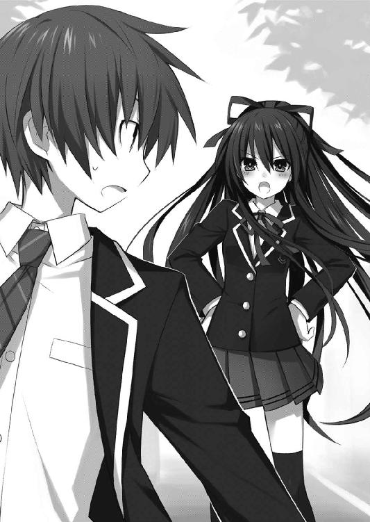
「......香り？」
目を閉じてあたりの匂いを嗅いでみると、確かに十香の言うとおり、香ばしい香りが漂っていることがわかった。
「ああ、多分あれだ」
言って、右手にあったパン屋を指さす。
「ほほう」
十香は短く言うと、その方向をジッと見つめた。
「......十香？」
「ぬ、なんだ？」
「入るか？」
「............」
士道が問うと、十香はうずうずと指先を動かしながら、口をへの字に曲げた。ついでに絶妙なタイミングで、ぐーきゅるるる、と十香のお腹が鳴る。どうやら精霊も腹は空くらしい。
「シドーが入りたいのなら入ってやらんこともない」
「......入りたい。ちょー入りたい」
「そうか、なら仕方ないな！」
十香はやたら元気よくそう言うと、大手を振ってパン屋の扉を開いた。
「............」
塀の陰に隠れながら、パン屋の前で会話する男女をジッと見つめていた折紙は、一ミリも表情を変えないまま細く息を吐いた。
登校するも休校だったため、仕方なく帰路についた折紙だったのだが、その途中、五河士道が、女子生徒と歩いているのを発見したのである。
それだけでも十分由々しき事態だ。恋人らしく、しっとりと尾行を開始した。
だが──もっと大きな問題があった。
その少女の貌を、折紙は見たことがあったのである。
「──精霊」
小さく、呟く。
そう。怪物。異常。世界を殺す災厄。
折紙たちが討滅すべき人ならざる者が、制服を着て士道の隣を歩いていたのである。
「............」
だが、冷静に考えればありえないことでもあった。
精霊が出現するときには、予兆として平時では考えられないレベルの前震が観測される。それをＡＳＴの観測班が見逃すはずはない。
だが、それならば昨日のように空間震警報が鳴っているはずであるし、折紙にも伝令が走っているはずなのだ。
折紙は鞄から携帯電話を取り出し、開いてみた。何の連絡も入っていない。
だとしたら、やはりあの少女は精霊などではなく、他人の空似だというのだろうか。
「......そんなはずはない」
静かに唇を動かす。折紙が、精霊の顔を見間違えるはずがなかった。
「............」
折紙は開いたままにしていた携帯電話のボタンをプッシュし、アドレス帳から番号を選択して電話をかけた。
そして。
「──ＡＳＴ、鳶一折紙一曹。Ａ--０６１３」
自分の所属と識別コードを簡潔に述べ、本題に入る。
「観測機を一つ、回して」
◇
「あ、令音ー。それいらないならちょーだい」
「......ん、構わんよ。持っていきたまえ」
琴里がフォークを伸ばして、令音の前に置いてあった皿のラズベリーを突き刺した。そのままそろそろと口に運び、甘酸っぱい味を堪能する。
「んー、おーいし。なんで令音これ駄目なんだろねー」
「......すっぱいじゃないか」
言って、令音は砂糖をたっぷり入れたアップルティーを一口すすった。
今二人がいるのは、天宮大通りのカフェだった。
琴里は白いリボンに中学校の制服、令音は淡色のカットソーにデニム地のボトムスという格好をしている。
いつも通り中学校に登校した琴里だったのだが、昨日の空間震の余波で琴里の通う学校も多少の被害を受けたらしく、休校になっていたのだ。
なんかそのまま帰るのも癪だったので、電話で令音を呼び出し、おやつタイムを楽しんでいたのである。
「......そうだ、ちょうどいい機会だから聞いておこう」
と、令音が思い出したように口を開いた。
「なーに？」
「......初歩的なことで悪いのだがね、琴里、なぜ彼が精霊との交渉役に選ばれたんだい？」
「んー」
令音の問いに、琴里は眉根を寄せた。
「誰にも言わない？」
「......約束しよう」
低い声音のまま、令音がうなずく。琴里はそれを確認してから首肯し返した。村雨令音は、口にしたことは守る女である。
「実は私とおにーちゃんって、血が繋がってないっていう超ギャルゲ設定なの」
「......ほう？」
面白がるでも驚くでもなく、令音が小さく首を傾げる。ただ速やかに琴里の言葉を理解して「それと今の話に何の関連が？」と訊ねてくるかのような調子だった。
「だから私は令音のこと好きなんだよねー」
「......？」
令音が、不思議そうな顔を作る。
「気にしなーい。......で、続きだけど。何歳の頃って言ったかな、それこそ私がよく覚えてないくらいのときに、おにーちゃん、本当のおかーさんに捨てられてうちに引き取られたらしいんだ。私は物心つく前だったからあまり覚えてないんだけどさ、引き取られた当初は相当参ってたみたい。それこそ、自殺でもするんじゃないかってくらいに」
「............」
なぜだろうか、令音がぴくりと眉を動かした。
「どしたの？」
「......いや、続けてくれ」
「ん。ま、仕方ないといえば仕方ないのかもしれないけどねー。年齢一桁の子供からしてみれば、母親っていうのは絶対的な存在だし、おにーちゃんにとっては自分の存在全てが否定されるような一大事だったと思う。──まあ、一年くらいでその状態は治まったらしいんだけどねー」
ふうと息を吐いてから、続ける。
「それからなのかなー。おにーちゃん、人の絶望に対して妙に敏感なんだ」
「......絶望に？」
「んー。みーんなから自分が全否定されてるような──自分はぜーったい誰からも愛されないと思っているような。まあ要は当時の自分みたいなさ。そんな鬱々とした顔をした人がいると、まったく知らない人でも無遠慮に絡んでいくんだよね」
だから、と目を伏せる。
「もしかしたら、と思ったんだ。──あの精霊に勇んで向かっていくようなの、おにーちゃんくらいしか思いつかなかったからさー」
琴里がそう言うと、令音は「......なるほど」と目を伏せた。
「......だが、私が聞きたいのはそういう心情的な理由ではないね」
「............」
令音の言葉に、琴里はぴくりと眉を動かした。
「っていうと？」
「......とぼけてもらっては困る。君が知らないとは思えない。──彼は一体何者だね」
令音は〈ラタトスク〉最高の解析官である。特注の顕現装置を用い、物質の組成は当然として、体温の分布や脳波を計測して、人の感情の機微さえもおおよそ見取ってしまう。
──その人間に隠された能力や特性すら。
琴里はふうと息を吐いた。
「ま、令音におにーちゃんを預けた時点でこうなるのは大体わかってたけどねー」
「......ああ、悪いが、少し解析させてもらったよ。......明確な理由もなく一般人をこの作戦に従事させるなんておかしいと思ったのでね」
「ん、別に構わないぞー。どうせそのうち、みんなも知ることになるだろーし」
カランカラン、という扉の音と、「いらっしゃいませー」という店員の声を聞きながら、琴里は肩をすくめた。
そして手元のコップにささっていたストローをくわえ、残っていたブルーベリージュースを一気に吸い込む。
と──
「ぶふぅぅぅぅぅぅッ!?」
今店に入ってきたと思しきカップルが令音の後ろの席に腰掛けるのを見て、口の中に収めていたジュースを勢いよく吹き出した。
「............」
どうやらカップルには気づかれなかったようだったが、琴里の目の前にいた令音はその被害をモロに被っていた。被って、被っていた。要はびしょ濡れである。
「ごめっ、令音......」
「......ん」
声をひそめて琴里が謝ると、令音は何事もなかったかのように、ポケットから出したハンカチで顔を拭っていった。
「......何かあったのかね、琴里」
「ん......ちょっと非科学的かつ非現実的なものを見た気がして」
「......なんだね？」
令音の問いに答えるように、琴里は無言で、令音の後ろを指さした。
「......？」
令音は首を回し──ぴたりと動きを止めた。
そして数秒のあと、ゆっくりと首をもとの位置に戻し、アップルティーを口に含んだ。
それからぶー、と琴里に紅茶を吹き出す。
「......なまらびっくり」
なぜか北海道方言だった。令音なりに動揺しているのかもしれない。
それはそうだろう。何しろ令音の後ろには、琴里の兄・五河士道が女の子を連れて座っていたのだから。
しかもそれだけではない。その女の子は──琴里たちが災厄と、精霊と呼ぶ、あの少女であったのだ。
「えええ......なにこれぇ」
琴里は令音から手渡されたハンカチで顔を拭きながら、押し殺した声を発した。
ちなみに令音のハンカチには、真ん中にクマさんがプリントされていた。ブルーベリージュースとアップルティーのシミで、キカイダーみたいになっていた。
ポケットを探り携帯電話を見る。〈ラタトスク〉からの連絡は入っていない。要は、精霊が出現する際の空間の揺らぎは感知されていないということだ。
だが、あれは確かに精霊・十香だった。あんな美しい少女が何人もいてたまるものか。
「精霊には、私たちに感知されずに現界する方法があるってこと？」
「......ただのそっくりさんという可能性は？」
令音の言葉に、琴里はしばし考えを巡らせた。
だがすぐに、首を横に振る。
「もしそうだとしたら、おにーちゃんが普通の女の子連れてるってことになるぞー。精霊の静粛現界とどっちが非現実的かっていったら......僅差で前者かなー」
「......なるほど」
結構ひどめの台詞に、しかし令音はすんなりと首肯した。
「......だがそうなると大変だな。シン一人で精霊に対応できるだろうか」
「んー......」
と、二人して口元に手をあて、難しげにうなっていると、令音の後方から二人の会話が聞こえてきた。
「ほう、この本の中から食べたいものを選べばいいのだな？」
「ああ、そうだよ」
「きなこパンは。きなこパンはないのか」
「......や、さすがにないだろ。ていうか最初のパン屋で食いまくったじゃねえか」
「また食べたくなったのだ。一体なんだあの粉は......あの強烈な習慣性......あれが無闇に世に放たれれば大変なことになるぞ......人々は禁断症状に震え、きなこを求めて戦が起こるに違いない」
「ねえよ」
「むう、まあいい。新たな味を開拓するとしよう」
「へいへい......でも金ねえから全部合わせて三〇〇〇円までな」
「ぬ？ なんだそれは」
「おまえがやたらめったら買い食いしまくるから金がなくなったって言ってんだよ！」
「むう、世知辛いな。ならば仕方ない、少し待っていろ。私が金子を調達してこよう」
「ま......ッ、待て！ 何をする気だ！」
そんな会話を聞いて、琴里ははあと息を吐いた。
ポケットから黒いリボンを取り出し、髪を結い直す。
琴里なりのマインドセットだった。これで琴里は、士道の可愛い妹から、司令官モードへとトランスフォームする。
そして携帯電話を開くと、〈ラタトスク〉の回線に繋いだ。
「......ああ、私よ。緊急事態が発生したわ。──作戦コードＦ--08・オペレーション『天宮の休日』を発令。至急持ち場につきなさい」
言うと、令音がぴくりと頬を動かした。
琴里が電話を終えるのを待って、声を発してくる。
「......やる気かね、琴里」
「ええ。指示が出せない状況だもの。仕方ないわ」
「......そうか。この状況からだと──ルートＣというところか。......ふむ、では私も動くとしよう。早めに店に交渉してくるよ」
「お願い」
言って琴里はポケットからチュッパチャプスを取り出し、口にくわえた。
◇
「............」
士道は手にした伝票に書かれた数字と、自分の財布の中身を交互に見ながら、ふうと息を吐いた。ほとんど残らないが、辛うじて払いきれる額だった。
「ほら、行くぞ十香」
「ん、もうか？」
十香が目を丸くしながら言う。士道は急かすように立ち上がった。これ以上ここにいては、皿洗いか食い逃げしか退路が残らなくなってしまう。
士道がレジに歩いていくと、十香もそれについてきた。周囲の客にも、そこまで刺々しい敵意は放っていない。だいぶ人のいる街に慣れたようだった。
とりあえずは安堵して、レジに伝票と、有り金の九割にあたる紙幣を三枚置く。
「お会計お願いします」
言って士道はレジに立っていた店員に声をかけ──
「......ッ!?」
盛大に眉をひそめて、一歩後ずさった。
なぜならそこに立っていた店員が、
「......はい、お預かりします」
見覚えのある、目の下に分厚い隈を拵えた、やたらと眠そうな女だったのだから。
「な、ななななな......」
「ん？ どうしたシドー。敵か!?」
この上なくわかりやすく狼狽えた士道に、十香が戦慄した顔を向けてくる。
「いや、違う違う......」
力無く十香の言葉に否定を示す。
と、いやに可愛らしい制服を着て、肩にクマさんを乗せた令音が、その眠たげな双眸をギラリと輝かせ、士道を睨みつけてきた。
一瞬、「こんなところでバイトをしてるなんて誰かに言ってみろ、殺すぞ」みたいな視線かと思わなくもなかったが──すぐにそうではないことに気づいた。
「......こちら、お釣りとレシートでございます」
士道が驚いている間に手早く会計を済ませた令音が、紙面をトントンと叩きながらレシートを渡してくる。
そのレシートの下の方に、『サポートする。自然にデートを続けたまえ』という文字がしたためられていたのである。
つまり今の視線は、士道が令音と知り合いであることを十香に悟らせることなく、デートを続行しろということ......なのだろう。
「い、いや、なんでもない」
士道は十香に言って、レシートをポケットにねじ込んだ。
令音が、研ぎ澄ましていた視線をいつものぼうっとしたものに戻す。
そしてレジ下の引き出しからカラフルな紙を一枚取り出すと、士道に手渡してきた。
「......こちら、商店街の福引き券となっております。この店から出て、右手道路沿いに行った場所に福引き所がありますので、よろしければご利用ください」
場所を詳しく説明したうえ、後半をやけにはっきり言ってくる。
士道は頬をかいた。よろしければ、ではなく絶対に使えということだろう。
とはいえ、そう念を押されなくともよかったかもしれない。
「シドー、なんだそれは」
なぜなら十香が、福引き券をもの凄く興味深そうに見つめていたのだから。
「行ってみるか？」
「シドーは行きたいのか？」
「......おう、行きたくてたまんねえ」
「では行くか」
十香が、大股で元気よく店を出ていく。
士道は令音に軽く頭を下げてからそのあとを追った。
「──ご苦労さま、令音」
レジの陰に隠れていた琴里は、二人が店を出るのを確認してから立ち上がった。
「......慣れないね、どうも」
令音がやたらとフリルのついた制服の裾を持ち上げ、抑揚のない調子で言う。
これが──作戦コードＦ--08、通称・オペレーション『天宮の休日』である。
〈ラタトスク〉には、ありとあらゆる可能性を考慮し、細かく分ければ一〇〇〇以上の作戦コードが存在している。これはそのうちの一つだった。
精霊がこちらの観測をすり抜け、士道に接触した場合──〈フラクシナス〉クルーが街の住人に溶け込み、陰ながら士道をサポートするのである。
このためにクルーは、皆最低一か月、劇団の演技講習を受けている。
「似合ってるわよ。可愛い可愛い」
琴里は飴を舐めながらそう言ったあと、すぐに携帯電話を開いて電話をかけた。
「ああ、私よ。今店を出たわ。......ええ、なるべく自然にね。失敗したら皮を剥ぐわよ」
簡潔に用件とペナルティを伝え、電話を切る。
「第二班のスタンバイは完了してるみたいね。──さて、私たちは〈フラクシナス〉に戻りましょう。こちらの声は届かないにしても、映像だけは見ておかないと」
「......ああ、そうしよう」
令音が言ってくるのを背に聞きながら、琴里は唇の端を上げた。
「さあ──私たちの戦争を始めましょう」
「えーと、福引き所......あれか」
士道と十香が店を出てから道なりに進むと、赤いクロスを敷いた長机の上に、大きな抽選器が置かれたスペースが見えてきた。
ハッピを羽織った男が、抽選器のところに一人、商品渡し口に一人おり、その後方に、賞品と思しき自転車やら米やらが並べられていた。既に数名、人が並んでいる。
「............」
士道は頬をかいた。
うろ覚えではあるが......ハッピを着た男たちはもちろんのこと、並んでいる客の顔もまた、〈フラクシナス〉内部で見たことがある気がしたのだ。
「おお！」
しかしそんなもの十香に関係あるはずがない。士道から受け取った（というか、ものすごく物欲しそうに見るものだから持たせてやった）福引き券を握りしめ、目を輝かせる。
「ほら、じゃあ並んで」
「ん」
と、十香がうなずき、列の最後尾につく。
前に並んだ客が抽選器を回すのを見ながら、首と目をめまぐるしく動かしていた。
すぐに、十香の番がくる。十香は前の客に倣って券を係員に手渡し、抽選器に手を掛けた。よく見ると係員は〈早過ぎた倦怠期〉川越だった。
「これを回せばいいのだな？」
言って、ぐるぐると抽選器を回す。数秒後、抽選器から赤いハズレ玉が飛び出した。
「......っと、残念だったな。赤はポケットティ──」
士道が言いかけたとき、川越が手に持っていた鐘をガランガランと高らかに鳴らした。
「大当たり！」
「おお！」
「は、はあ......？」
と、士道は眉をひそめたが......川越の後ろで別の係員が、後ろに貼ってあった賞品ボード『１位』のところに書いてある金色の玉を、赤いマジックペンで塗りつぶしているのを目撃し、声を出すのを止めた。
「おめでとうございます！ １位はなんと、ドリームランド完全無料ペアチケット！」
「おお、なんだこれはシドー！」
「......テーマパークか？ 聞いたことない名前だけど......」
興奮した様子でチケットを受け取る十香に、士道が訝しげな調子で返す。
すると川越がずずいと顔を寄せ、
「裏に地図が書いてありますので、是非！ これからすぐにでも！」
「......っ、は、はあ......」
気圧されるように一歩下がりながら、チケットの裏を見る。確かに地図が書いてあった。というかもの凄く近かった。
「こんなところにテーマパークなんてあったか......？」
士道は首をひねったが、まあ、〈ラタトスク〉の指示である。何かあるのだろう。
「......行ってみるか？ 十香」
「うむ！」
十香も乗り気なようなので、とりあえず足を運んでみることにする。
場所は本当に近かった。この福引き所から路地に入って数百メートル。まだ両側には雑居ビルが並んでおり、とてもではないがテーマパークがあるようには思えない。
だが──
「おお！ シドー！ 城があるぞ！ あそこに行くのか!?」
十香が今までになく興奮しながら、前方を指さす。
そんな馬鹿なと思いつつチケットの裏面から視線を外して顔を前に向ける。
「......ッ」
瞬間、士道はその場に凍りついた。
確かに小さいながらも、西洋風のお城である。看板にドリームランドとも書いてある。
......ついでにその下に『ご休憩・二時間四〇〇〇円～ ご宿泊・八〇〇〇円～』という文字も書いてあった。
まあつまりは、大人しか入ってはいけない愛のホテルだった。
「も、戻るぞ十香......っ！ 俺ってばうっかりさんだから道を間違えた！」
「ぬ？ あそこではないのか？」
「ああそうだ。ほ、ほら、早く戻るぞ」
「あそこにも寄っていかないか？ 入ってみたいぞ」
「......ッ！ い、いやいやいや。今日のところはやめとこう！ な!?」
「むう......そうか」
残念そうに言う十香には悪かったが、さすがにあそこは無理である。士道は、恐らく上空から一部始終を見ているであろう琴里に睨みをくれてやってから道を戻っていった。
「まったく、あそこまで行っておいて引き返す？ つくづくチキンねえ我が兄ながら」
〈フラクシナス〉の艦長席に身を預けた琴里は、ため息混じりに肩をすくめた。
「......まあ、仕方ないだろう。いきなりあれは酷だ」
艦橋下段に座った令音が、コンソールを操作しながら言ってくる。
彼女の解析によって画面に表示された数値は、昨日よりもずっと安定値を示していた。恋人とはいかないまでも、十香が士道を信頼のおける友人と思っている数値だ。
まあ、だからこそ少し思い切ったパターンを試してみたのだが。
「最後までいかなくても、キスくらいかましてくれれば詰みだったんだけどね」
言ってキャンディの棒をピコピコさせ、鼻から息を吐く。
「......次はどうするね」
「んー、そうね。次は『連結』と、『一通迷路』でいきましょうか」
「はぁ......はぁ」
走ったわけでもないのに、妙に息が切れていた。様々な店が建ち並ぶ通りに出たところで、歩調を緩める。
「気分でも悪いのか、シドー？」
「や、そういうわけではないんだが......」
「ではどうした？」
十香が首を傾げて問うてくる。
「......少し、お空にいる妹に思いを馳せていた」
「お空にいるのか」
少し驚いたような顔を作り、十香。
「ああ。可愛い妹だったんだがなあ......」
まさかあんな二重人格だったとは、と嘆息する。
「そうか......」
なぜか十香がしんみりした空気を発するのを見て、士道ははたと気づいた。今の言い方では、まるで琴里が死んでしまっているみたいではないか。
「ああいや、違うんだ十香。それは──」
と、士道はそこで言葉を止めた。
「お願いしまーす」
急に目の前に、女がポケットティッシュを差し出してきたからだ。
咄嗟に手を出してそれを受け取ると、女は小さく会釈をしてどこかへ去っていった。
「シドー？ なんだそれは」
「ああ、これはポケットティッシュっていって──」
言いかけて、士道は首をひねった。
街頭で配っているポケットティッシュは普通、企業の広告用だ。なのにこのティッシュのパッケージには、手をつないだ男女のイラストと、『幸せなら手をつなごう』というフレーズしか書かれていなかったのだ。何かの宗教団体だろうか？
と、不思議に思っていると、今度は右手にある電器店から、どこかで聞いたような声が聞こえてくる。
店頭に並べられたいくつものテレビに、奇妙な番組が映し出されていた。
「な......ッ!?」
士道は眉根を寄せて声を上げた。
昼間にやっている情報番組のようなセットに、何人かコメンテーターのような人物が確認できるのだが、それらが全て〈フラクシナス〉で見た顔だったのだ。
『やっぱり初デートで手も握ってくれないような人は嫌ですよぉー』
『そうですよねえ。男ならガッといかないとねえ』
「............」
と、士道が黙っていると、不自然なほど周囲にカップルが増え始めた。
しかもみんな仲むつまじく手をつないで、時折「手をつなぐのっていいよね！」やら、「心が通じ合う感じがするね！」やらと、わざとらしく言ってくる。
士道は軽い目眩のようなものを感じて額に手をあてた。
──これは、やっぱり、そういうことだろうか。
大きく息を吐いて、しばしのあと。
士道はティッシュをポケットにしまうと、動悸を抑えながら十香に目を向けた。
「な、なあ、十香......」
「ん、なんだ？」
十香が不思議そうに首を傾げる。士道はごくりと唾液を飲み込んでから手を前に出した。
「その、手......つながないか？」
「手を？ なぜだ？」
まるで悪気なく、純粋な疑問符を浮かべながら十香が問うてくる。
なんかもう、ただ拒絶されるより恥ずかしかった。
「............そうだな。なんでだろうな」
実際、説明できるようなものでもない。士道は目を泳がせながら手を引っ込め──
「ん」
──ようとしたところで、十香の手が、士道の手を取った。
「......っ」
「ぬ？ なんだその顔は。シドーがつなごうと言ったのだろう」
「あ、ああ」
軽く頭を振ってから、道を歩き出す。
「ん、悪くないな、これも」
言って十香が笑い、きゅっと手を握る力を少しだけ強くした。
「......っ、そ、そうだな」
なんかもう、小さくて柔らかくて少し士道よりも体温の低い、ひんやりとした手を触っていると、自然と顔が赤くなるのが自覚できた。
できるだけ感触に気がいかないよう、別のことを考えながら歩いていく。
と、どれくらい進んだ頃だろうか、進行方向上に、工事中を示す黄色と黒の立て看板が見えた。ヘルメットを被った男たちが、あくせくと働いている。
「っと......ここ通れないのか。じゃ仕方ない、こっちに......」
士道が足の向きを変え、右側に向くと、今度はその通路に立ち入り禁止の看板が置かれた。
「あ？」
不審に思いながらも、仕方なくもときた道を戻ろうとする。
だが今度は、今まで士道たちが歩いてきた道が、看板で塞がれた。
「............」
いくらなんでも不自然に過ぎる。士道は目を凝らして作業員の顔を睨めてみた。
案の定、その内数名の顔に見覚えがあった。〈フラクシナス〉クルーだ。
士道は無言のまま、高台の方に向かう、左手に延びた通路に目をやった。
通れる道はそこしかなかったのだ。
「......こっちに行けってことかね」
「ぬ？ どうしたシドー」
「や、なんでも。......とりあえず、こっち行ってみるか？」
「ん、いいぞ」
十香は、もう歩いているだけで楽しいというような顔を作りながら首肯してきた。
「さて、では行くかシドー」
「お、おう......」
士道は、ぎこちない様子で、左手の道を歩いていった。
第五章 暴虐なる鏖殺公
時刻は一八時。
天宮駅前のビル群に、オレンジ色の夕日が染み渡る。
そんな最高の絶景を一望できる高台の小さな公園を、少年と少女が二人、歩いていた。
少年の方はさほど問題ない。普通の男子高校生だ。
しかし、少女の方は──
「......ふう」
日下部燎子は目を細めながら唇を舐めた。
「存在一致率九八・五パーセント。さすがに偶然とかで説明できるレベルじゃないか」
精霊。
世界を殺す災厄。
三〇年前にこの地を焦土とし、五年前には大火を呼んだ最凶最悪の疫病神と同種の少女。
「............」
しかし今燎子の網膜に映るその姿は、ただの可愛い女の子だったのである。
「狙撃許可は」
と、静かな──逆に言えば、底冷えするような声音が、燎子の背に投げられた。
振り向くまでもない。折紙である。
燎子と同じくワイヤリングスーツにスラスターユニットを装備し、右手に自分の身長よりも長い対精霊ライフル〈クライ・クライ・クライ〉を携えている。
「......出てないわ。待機してろってさ。まだお偉方が協議中なんでしょ」
「そう」
安堵した様子も、落胆した様子もなく、折紙がうなずく。
今精霊がいる公園の一キロ圏内には、燎子たちＡＳＴ要員が一〇人、二人一組の五班に分かれて待機していた。
二人がいるのもそのポイントのうちの一つである。
公園よりもさらに都市部から離れた、宅地開発中の台地だ。昼間はトラックやらクレーンやらの作業車が列を作っているものの、この時間になればもう静かなものだった。
数時間前、折紙が発見した少女に精霊の判定が出てからすぐにＣＲ--ユニットの起動許可が下りた。
だが、まだ防衛大臣やら幕僚長やらは、対応を協議しているらしい。
要は、攻撃を仕掛けるか、否か、である。
空間震を観測できない現界だったため、空間震警報は鳴っていない。
つまり住民は誰一人として避難しておらず、今精霊が暴れ出しでもしたら、深刻な被害が出てしまうのである。
かといって、今警報を鳴らして精霊を刺激してしまうのも上手くない。なんとも嫌な状況だった。
だが──
「これは好機」
折紙は、いつものごとく温度のない口調で唱えた。
確かに折紙の言うとおり、これはチャンスでもあった。
なぜなら今、精霊はその身に霊装を顕現させていない。
燎子たちの随意領域と同じように、精霊を最強で究極で無敵の生命体たらしめている外殻を、纏っていない。
今ならば、こちらの攻撃が届く可能性は十分あった。
ただしそれもあくまで可能性にすぎないうえ、確実に一撃で致命傷を与えなければならない。折紙が、平常装備に含まれない対精霊ライフルを携えている理由がそれだった。
使用者が悲鳴を上げ、弾道が軋み、目標が断末魔の声を上げる。
ゆえに〈ＣＣＣ〉。
随意領域を展開させていなければ、反動で狙撃手の腕の骨が折れてしまう、頭のおかしい銃である。
だが燎子は、その銃を使うような事態になるとはあまり思っていなかった。
「......頭ん中日和ってるお偉方が、この状況で攻撃許可出すかしらねえ」
「出してもらわなければ困る」
燎子が言うと、ノーウェイトで折紙がそう返してくる。
「......ま、現場としちゃそうなんだけどさ。攻撃許可を出したけど一撃で仕留めきれなくて精霊が暴れ出しました、ってのと、精霊が勝手に暴れたけど、現界してたなんて知りませんでしたー、ってのだと、責任問題になったときに随分意味合いが違ってくるのよ」
「そんな理由で決められては困る」
「そうは言っても、十把一絡げの人命より自分の地位が大事なお方が多いからねえ」
言って、肩をすくめる。
折紙の表情は微動だにしなかったが、何となく憮然としているような気がした。
と──そこで、燎子の耳にノイズ混じりの音声が届いてきた。
「はいはい、こちらポイントＡ。結局どうなっ──え？」
燎子は鼓膜に伝わった情報に、目を丸くした。
「──了解」
そうとだけ言って、通信を終了する。
「......驚いた。狙撃許可が下りたわ」
正直、少し意外だった。間違いなく待機命令が出ると踏んでいたのだ。
否──そういえば、昨日の校舎への攻撃命令も、今までではあまり考えられない強攻策だった。上層部で人事異動でもあったのだろうか。
まあ、燎子は自分の仕事をするだけだ。具体的に言えば今は──ここにいる中でもっとも作戦の成功率が高いであろう隊員に、引き金を預けることである。
「──折紙、あんたが撃ちなさい。今いる面子の中では、あんたが一番適任よ。失敗は許されないわ。絶対に一撃で仕留めること」
その言葉に。
「了解」
折紙はやはり何の感慨も浮かべぬまま答えた。
◇
夕日に染まった高台の公園には今、士道と十香以外の人影は見受けられなかった。
時折遠くから自動車の音や、カラスの鳴き声が聞こえてくるだけの、静かな空間。
「おお、絶景だな！」
十香は先ほどから、落下防止用の柵から身を乗り出しながら、黄昏色の天宮の街並みを眺めている。
〈フラクシナス〉クルーたちが巧妙（？）に誘導するルートを辿ってきたところ、ちょうど日が傾きかけた頃に、この見晴らしのいい公園に辿り着いたのである。
士道も、ここに来るのは初めてではない。というか、密かなお気に入りの場所でもあった。
終着点にここを選んだのは......まあ、きっと琴里だろう。
「シドー！ あれはどう変形するのだ!?」
十香が遠くを走る電車を指さし、目を輝かせながら言ってくる。
「残念ながら電車は変形しない」
「何、合体タイプか？」
「まあ、連結くらいはするな」
「おお」
十香は妙に納得した調子でうなずくと、くるりと身体を回転させ、手すりに体重を預けながら士道に向き直った。
夕焼けを背景に佇む十香は、それはそれは美しくて、まるで一枚の絵画のようだった。
「──それにしても」
十香が話題を変えるように、んー、と伸びをした。
そして、にぃッ、と屈託のない笑みを浮かべてくる。
「いいものだな、デェトというのは。実にその、なんだ、楽しい」
「............っ」
不意を突かれた。自分からは見えないけれど、きっと頬は真っ赤に染まっている。
「どうした、顔が赤いぞシドー」
「......夕日だ」
言って、顔をうつむかせる。
「そうか？」
すると十香が士道のもとに寄り、見上げるようにして顔を覗き込んできた。
「ぃ──ッ」
「やはり赤いではないか。何かの疾患か？」
吐息が触れるくらいの距離で、十香が言う。
「や......ち、違う、から......」
視線を逸らしながらも──士道の頭の中には、デェト、という言葉が渦巻いていた。
漫画や映画の知識ではあるけれど。
たぶん、恋人たちがデートの終盤でこんな素敵な場所を訪れたなら、やっぱり──
自然、士道の目は、十香の柔らかそうな唇に向いていた。
「ぬ？」
「────ッ！」
別に十香は何も言っていないのだが、自分の邪な思考が見透かされた気がして、再び目を逸らしながら身体を離す。
「なんだ、忙しい奴だな」
「う、うるせ......」
士道は額に滲んだ汗を袖で拭いながら、ちらと十香の顔を一瞥した。
一〇日前、そして昨日、十香の顔に浮かんでいた鬱々とした表情は、随分と薄れていた。鼻から細く息を吐き、一歩足を引いて十香に向き直る。
「──どうだ？ おまえを殺そうとする奴なんていなかっただろ？」
「......ん、皆優しかった。正直に言えば、まだ信じられないくらいに」
「あ......？」
士道が首をひねると、十香は自嘲気味に苦笑した。
「あんなにも多くの人間が、私を拒絶しないなんて。私を否定しないなんて。──あのメカメカ団......ええと、なんといったか。エイ......？」
「ＡＳＴのことか？」
「そう、それだ。街の人間全てが奴らの手の者で、私を欺こうとしていたと言われた方が真実味がある」
「おいおい......」
さすがに発想が飛躍しすぎていたが......士道はそれを笑えなかった。
だって十香にとっては、それが普通だったのだ。
否定されるのが、され続けるのが、普通。
なんて──悲しい。
「......それじゃあ、俺もＡＳＴの手先ってことになるのか？」
士道が言うと、十香はぶんぶんと首を振った。
「いや、シドーはあれだ。きっと親兄弟を人質に取られて脅されているのだ」
「な、なんだその役柄......」
「......おまえが敵とか、そんなのは考えさせるな」
「え？」
「なんでもない」
問い返すと、今度は十香が顔を背けた。
表情を無理矢理変えるように、手で顔をごしごしとやってから、視線を戻してくる。
「──でも本当に、今日はそれくらい、有意義な一日だった。世界がこんなに優しいだなんて、こんなに楽しいだなんて、こんなに綺麗だなんて......思いもしなかった」
「そう、か──」
士道は口元を綻ばせて息を吐いた。
だけれど十香は、そんな士道に反するように、眉を八の字に歪めて苦笑を浮かべた。
「あいつら──ＡＳＴとやらの考えも、少しだけわかったしな」
「え......？」
士道が怪訝そうに眉根を寄せると、十香が少し悲しそうな顔を作った。
士道が嫌いな鬱々とした表情とは少しだけ違う──でも、見ているだけで胸が締め付けられてしまいそうな、悲壮感の漂う顔だった。
「私は......いつも現界するたびに、こんなにも素晴らしいものを壊していたんだな」
「────っ」
士道は、息を詰まらせた。
「で、でも、それはおまえの意思とは関係ないんだろ......ッ!?」
「......ん。現界も、その際の現象も、私にはどうにもならない」
「なら──」
「だがこの世界の住人たちにしてみれば、破壊という結果は変わらない。ＡＳＴが私を殺そうとする道理が、ようやく......知れた」
士道は、すぐには言葉を発せなかった。
十香の悲痛な面持ちに胸が引き絞られ、上手く呼吸ができなくなる。
「シドー。やはり私は──いない方がいいな」
言って──十香が笑う。
今日の昼間に覗かせた無邪気な笑みではない。
まるで自分の死期を悟った病人のような──弱々しく、痛々しい笑顔だった。
ごくりと、唾液を飲み込む。
いつの間にかのどはカラカラに渇いていた。張り付いたのどに水分がしみていく軽い痛みを感じながら、どうにか口を開く。
「そんなこと......ない......ッ」
士道は声に力を込めるため、ぐっと拳を握った。
「だって......今日は空間震が起きてねえじゃねえか！ きっといつもと何か違いがあるんだ......ッ！ それさえ突き止めれば......！」
しかし十香は、ゆっくりと首を振った。
「たとえその方法が確立したとしても、不定期に存在がこちらに固着するのは止められない。現界の数は減らないだろう」
「じゃあ......ッ！ もう向こうに帰らなければいいだろうが！」
士道が叫ぶと、十香は顔を上げて目を見開いた。
まるで、そんな考えをまったく持っていなかったというように。
「そんなことが──可能なはずは......」
「試したのか!? 一度でも！」
「............」
十香が、唇を結んで黙り込む。
士道は異様な動悸を抑え込むように胸元を押さえながら、再びのどを唾液で濡らした。
咄嗟に叫んだ言葉だったが──それが可能ならば、空間震は起こらなくなるはずである。
確か琴里の説明では、精霊が異空間からこちらの世界に移動する際の余波が空間震となるという話だった。
そして、十香が自分の意思とは関係なく不定期にこちらの世界に引っ張られてしまうというのなら、最初からずっとこちらにとどまっていればよいのだ。
「で、でも、あれだぞ。私は知らないことが多すぎるぞ？」
「そんなもん、俺が全部教えてやる！」
十香が発してきた言葉に、即座に返す。
「寝床や、食べるものだって必要になる」
「それも......どうにかするッ！」
「予想外の事態が起こるかもしれない」
「んなもん起きたら考えろッ！」
十香は少しの間黙り込んでから、小さく唇を開いてきた。
「......本当に、私は生きていてもいいのか？」
「ああ！」
「この世界にいてもいいのか？」
「そうだ！」
「......そんなことを言ってくれるのは、きっとシドーだけだぞ。ＡＳＴはもちろん、他の人間たちだって、こんな危険な存在が、自分たちの生活空間にいたら嫌に決まっている」
「知ったことかそんなもん......ッ!! ＡＳＴだぁ!? 他の人間だぁ!? そいつらが十香！ おまえを否定するってんなら！ それを超えるくらい俺が！ おまえを肯定するッ！」
叫んで。
士道は、十香に向かってバッと手を伸ばした。
十香の肩が、小さく震える。
「握れ！ 今は──それだけでいい......ッ！」
十香は顔をうつむかせ、数瞬の間思案するように沈黙したあと、ゆっくりと顔を上げ、そろそろと手を伸ばしてきた。
「シドー──」
と。
士道と十香の手と手が触れ合おうとした瞬間。
「────」
士道は、ぴくりと指先を動かした。
なぜかわからないけれど──途方もない寒気がしたのだ。
ざらざらの舌で全身を舐められるような、嫌な感触。
「十香！」
士道ののどは、意識してもいないのにその名を呼んでいた。
そして十香が答えるより早く。
「......っ」
士道は、両手で思い切り十香を突き飛ばした。
細身の十香は突然の衝撃に耐えられず、漫画みたいにごろんと後ろに転がった。
それから刹那も間を置かず。
「────────────あ」
士道は、胸と腹の間くらいに、凄まじい衝撃を感じた。
「な──何をする！」
砂まみれになった十香が、非難の声を上げてくるが、それに返すことすら困難。
息が、できない。
意識と姿勢を保っていることも、難しい。
とにかく、なんか、きもちわる、い。
「──シドー？」
十香が、呆然と言ってくる。
原因を探ろうと、震える右手を脇腹にやってみる。
おかしい。
だって、なにも、てごたえが、な
「あ────」
折紙は、随意領域で強化された視力で、崩れ落ちる士道の影を見ながら、自分ののどからそんな声が漏れるのを聞いた。
宅地開発のため平らに整備された地面に腹ばいになり、対精霊ライフル〈ＣＣＣ〉を構えた状態のまま、数瞬の間身体を硬直させる。
数秒前。
折紙は〈ＣＣＣ〉の顕現装置を起動させると、装填された特殊弾頭に攻性結界を付与させ、完璧に狙いを定めてから引き金を引いた。
外れる要素は微塵もなかった。
──士道が、精霊を突き飛ばさなければ。
折紙の放った弾は──精霊の代わりに士道の身体を、綺麗に削り取った。
「────」
今度は、声すら出なかった。
指が、引き金を引いた指が、微細に震えているのがわかる。
だって、今、自分は、士道を──
「──折紙ッ！」
「──っ」
燎子の声で我に返る。
「悔いるのはあとにしなさい！ あとで死ぬほど責めるから！ 今は──」
言って燎子が、戦慄した様子で公園を睨んだ。
「生き延びることだけ、考えなさい......ッ！」
「シドー......？」
名を呼ぶが、返事はない。
それはそうだ。士道の胸には、十香の手のひらを広げたよりも大きな穴が開いている。
頭が混乱して、意味がわからない。
「シ──、ドー」
十香は士道の頭の隣に膝を折ると、その頬をつついた。
反応は、ない。
数瞬前まで十香に差し伸べられていた手は、一部の隙間もなく血に濡れていた。
「ぅ、ぁ、あ、あ──」
数秒のあと、頭が状況を理解し始める。
......あたりに立ちこめる焦げ臭さには覚えがあった。
いつも十香を殺そうと襲ってくるあの一団──ＡＳＴのものだ。
研ぎ澄まされた一撃。恐らく──あの女。
如何に十香とはいえ、霊装を纏っていない状態であれを受けたなら、無事では済まなかったろう。
まして何の防護も持たない士道がそんな攻撃を受けてしまったなら。
「────」
十香は途方もない目眩を感じながらも、未だ空を眺める士道の目に手を置き、ゆっくりと瞼を閉じさせてやった。
そして、着ていた制服の上着を脱ぐと、優しく士道の亡骸にかける。
次いで十香はゆらりと立ち上がると、顔を空に向けた。
──嗚呼、嗚呼。
駄目だった。やはり、駄目だった。
一瞬──十香は、この世界で生きられるかもしれないと思った。
士道がいてくれたなら、なんとかなるのかもしれないと思った。
すごく大変で難しいだろうけど、できるかもしれないと思った。
だけれど。
嗚呼、だけれども。
やはり、駄目、だった。
この世界は──やはり十香を否定した。
それも、考え得る限り、最低最悪の手段を以て──ッ！
「──〈神威霊装・十番〉......ッ」
のどの奥から、その名を絞り出す。霊装。絶対にして最強の、十香の領地。
瞬間、世界が、啼いた。
周囲の景色がぐにゃりと歪み、十香の身体に絡みついて、荘厳なる霊装の形を取る。
そして光り輝く膜がその内部やスカートを彩り──災厄は、降臨した。
ぎしぎし、ぎしぎしと。
空が、軋む。
突然霊装を顕現させた十香に、不満をさえずるように。
十香は、視線を少し下げた。
山が削り取られたかのように平らになった高台に、今士道を撃った人間がいる。
殺すに足りてしまった人間が、いる。
十香は地面に踵を突き立てた。
瞬間、そこから巨大な剣が収められた玉座が現出する。
十香はトン、と地を蹴ると、玉座の肘掛けに足をかけ、背もたれから剣を引き抜いた。
そして。
「ああ」
のどを震わせる。
「あああああああああああああああ」
天に響くように。
「あああああああああああああああああああああああああああああ──────ッ!!」
地に轟くように。
自分の頭を麻痺させ、自我を摩滅させるような感覚。
「よくも」
目が、湿る。
「よくもよくもよくもよくもよくもよくもよくもよくもよくもよくもよくもよくも」
十香は剣を握る手に力を込めると、視線の先まで距離を殺した。
「な──ッ!?」
「────」
瞬きほどの間も置かず、十香は今し方見ていた高台に移動していた。
目前には、驚愕に目を見開く女と、無味な表情の少女がいる。
憎い、憎いその貌を見ると同時、十香は吼えた。
「〈鏖殺公〉──【最後の剣】!!」
刹那、十香が足を置いていた玉座に亀裂が走り、バラバラに砕け散った。
そして玉座の破片が十香の握った剣にまとわりつき、そのシルエットをさらに大きなものに変えていく。
全長一〇メートル以上はあろうかという、長大に過ぎる剣。
しかし十香はそれを軽々と振りかぶると、二人の女に向かって振り下ろした。
刀身の光が一層強いものになり、一瞬にして太刀筋の延長線上である地面を這っていく。
次の瞬間、凄まじい爆発があたりを襲った。
「な......ッ！」
「────く」
すんでのところで左右に逃れた二人が、戦慄に染まった声を上げる。
それはそうだろう。十香はただの一撃で、広大な台地を縦に両断していたのだから。
「この......ッ、化物め──！」
長身の女が叫び、無骨な剣のようなものを振るって十香に攻撃を仕掛けてくる。
だがそんなもの、霊装を纏った十香に通じるはずもない。視線をそちらに向けるだけで、その攻撃を霧散させる。
「嘘──」
女の顔が、絶望に染まる。
だが十香はそんなものには興味を示さず、もう一人の少女に目を向けた。
「──嗚呼、嗚呼。貴様だな、貴様だな」
静かに、唇を開く。
「我が友を、我が親友を、シドーを殺したのは、貴様だな」
十香がそう言うと、ほんの少しだが、少女が初めて表情を歪めた。
しかし、そんなことどうでもよかった。
【最後の剣】を顕現させた十香を止められるものなんて、この世界に存在しないのだから。
真っ黒に淀んだ瞳で少女を見下ろしながら、冷静に、狂う。
「──殺して壊して消し尽くす。死んで絶んで滅に尽くせ」
◇
「司令......ッ！」
「わかってるわよ。騒がないでちょうだい。発情期の猿じゃあるまいし」
琴里は口の中で飴を転がしながら、狼狽した様子の部下に言葉を返した。
〈フラクシナス〉艦橋。正面モニタには身体をごっそりと削り取られて倒れ伏した士道と、精霊・十香の戦闘映像が表示されている。
部下の動揺もわからなくはなかった。
状況は、圧倒的に、絶対的に、破滅的に、絶望的だった。
ようやく空間震警報が鳴り始めたようだが、住民の避難はほとんど終わっていない状態で、十香とＡＳＴの戦闘が始まってしまったのである。
人の住んでいない開発地で、というのが唯一の救いだが──十香の一撃は、そんな楽観を容易く打ち砕いた。
今までの十香が可愛く見える、超越的な破壊力。
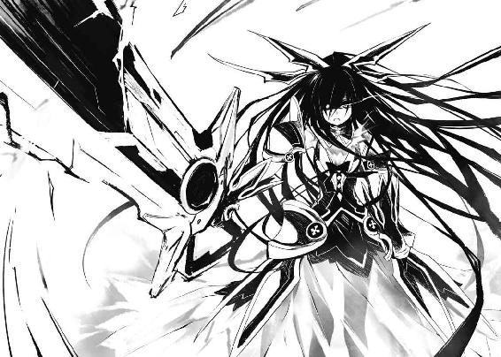
たったの一撃で広大な開発地は二分され、中心に深淵を作ってしまった。
そして──〈ラタトスク〉の最終兵器であったはずの五河士道の突然の死。
琴里たちは、考え得る限り最悪の状況に立たされた格好になっていた。
だが、
「ま、ちょっと優雅さが足りないけど、騎士としては及第点かしらね。今のでお姫様がやられてたら目も当てられなかったわ」
琴里は、さほど深刻そうな調子も見せずにそう言って、キャンディの棒を動かした。
そんな琴里に、クルーたちが戦慄したような視線を向けてくる。
まあ、仕方あるまい。今まさに兄が死亡したばかりなのである。
だがそんな中にあって、令音と神無月だけは違った反応を見せていた。
令音は、平然とした様子で十香の戦闘をモニタリングし、データを採取している。
神無月の方は少し様子が違う。頬に朱が差し、口から唾液が漏れていた。
見るからに「ああ......身体にあんな大きなアナが開けられるなんて......ビクンビクン。すごいんだろうなあ。さぞ、さぞすごいんだろうなあ。で、でも死んだら元も子もないしなあ」みたいなことを考えている顔である。
「とう」
「はうッ!?」
琴里は神無月のすねを蹴り飛ばすと、その場に立ち上がった。
そしてフンと鼻を鳴らしながら、半眼を作って告げる。
「いいから自分の作業を続けなさい。士道が、これで終わりなわけがないでしょう？」
そう。
ここからが、士道の本当の仕事なのだ。
「し──ッ、司令！ あれは......！」
と、艦橋下段の部下が、画面左側──公園が映っているものを見ながら、驚愕に満ちた声を発してきた。
「──来たわね」
キャンディの位置を変え、にやりと口元を歪ませる。
画面の中には、公園に横たわり、制服の上着をかけられた士道が映っていたのだが──
その制服が、突然燃え始めたのである。
精霊の生成物が消失しているとか、太陽光によって火がついたとかでは、ない。
だって、燃えていたのは制服ではなかったのだから。
制服が燃え落ち、綺麗に刳り貫かれた士道の身体が露わになる。
そこで、〈フラクシナス〉のクルーたちは再び驚愕の声を上げた。
「き、傷が──」
そう、傷口が。ぽっかりと消失した欠損の断面が、燃えている。
その炎は士道の傷を見えなくするくらいに燃え上がってから──徐々にその勢いをなくしていった。
そしてその炎が舐めとったあとには、完全に再生された士道の身体が存在していた。
そして──
『────ん、』
画面の中に横たわった士道が、
『ん..............................ぉ熱っちゃぁぁぁッ!?』
と、未だ腹にくすぶっていた火を見て、跳ね起きた。
慌てた様子でバンバンと腹を叩き、火を消し止める。
『て──あ、あれ？ 俺......なんで』
艦橋内が、騒然となる。
「な......し、司令、これは──」
「言ったでしょ。士道は一回くらい死んだって、すぐニューゲームできるって」
琴里は唇を舐めながら部下に返した。
クルーたちは一斉に訝しげな視線を向けてきたが、無視しておく。
「すぐ回収して。──彼女を止められるのは士道だけよ」
◇
──意味がわからない。
士道は自分の腹をペタペタと触りながら、盛大に眉の間にしわを寄せた。
着ていたブレザーとワイシャツには綺麗な穴が開き、ネクタイは途中から千切れている。
でもそんな恥ずかしげな格好も、今は気にならなかった。
もっと気にかけなければならないことが、ある。
「俺──なんで生きてんだ......？」
もう一度腹を触り、呟く。
あのときとても嫌な予感がして、十香を突き飛ばした。
次の瞬間腹に穴が開いて──意識が途絶えたのだ。
実際服には穴が開いているし、盛大な血の染みも残っている。夢とは思えなかった。
「そうだ──十香......！」
あの攻撃は間違いなく十香を狙っていた。
一体十香はどうなったのだろうか。その姿を探してあたりに目を向ける。
と、士道のいる公園よりもさらに高台から、黒い光が発せられ──次いで、凄まじい爆音と衝撃波が撒き散らされた。
「うぉ......ッ!?」
不意のことに力が入らず、風に煽られる格好で地面に転がされる。
「な、なんだ、一体......！」
叫びながら、そちらに目を向け──士道は身体を硬直させた。
そこから見える景色が、士道が意識を失う前とは、まったく別物になっていたのである。
その方向には、宅地開発中の現場やら、三〇年前に地形が変わって以来まだほとんど手を入れられていない山などが広がっていたのだが──
それらが、まるで空襲を受けたかのように滅茶苦茶に崩壊していたのである。
否──少し違うか。どちらかというと、巨大な剣で何度も何度も切り裂かれたように、鋭利な断面をいくつも覗かせていた。
「あれは......」
と、呆然と呟いた瞬間。
「ぬぁ......ッ！」
士道は、自分の身体から重さがなくなるのを感じた。
この感覚は初めてではない。〈フラクシナス〉の転移装置である。
士道がそれを認識したときにはもう、士道の視界は、高台の公園ではなく〈フラクシナス〉の内部に変貌していた。
「こちらへ！」
と、そこに控えていた〈フラクシナス〉のクルーが、大声を上げてくる。
「は、はあ......」
少し混乱しながらも、士道は艦橋に引っ張られていった。
そして艦橋に到着するなり、
「──お目覚めの気分はいかが、士道」
艦橋上段の艦長席に腰掛け、チュッパチャプスの棒をピコピコやりながら、琴里が言ってくる。
「......琴里」
士道はきぃんと鳴る耳を軽く叩きながら、眉をひそめた。
「......ちょっと状況が読めん。一体どうなったんだ？」
「ん、士道がＡＳＴの攻撃でやられて、キレたお姫様がＡＳＴを殺しにかかってるわ」
言ってちょいちょい、と斜め上──艦橋の大スクリーンを指さす。
「んな......ッ」
そこには巨大な剣を振るって山を切り刻む十香と、応戦するＡＳＴの姿があった。
否──応戦、なんて呼べたものではなかった。
ＡＳＴは猛烈な勢いで攻撃を仕掛けているものの、十香には微塵も届いていない。
逆に十香の斬撃は、直撃せずともその余波だけで、随意領域など存在していないかのようにウィザードたちの飛行を乱し、容易く吹き飛ばしていた。
ただただ一方的で圧倒的な──王者の行進。
「完全にキレてるわ。よっぽど士道を殺されたのが許せないのね」
言って、琴里が肩をすくめる。
「......ッ、なんだよ、それ......っ！ ていうかそうだよ！ 俺はなんで生きてんだ!?」
士道が叫ぶと、琴里は明らかに何かを知っている様子でニヤニヤと笑った。
「ま、その話はあとにしましょ。今はもっと他にすることがあるんだから」
琴里が画面の十香に目を向けながら言う。
「他に──すること？」
「ええ。ウチとしても、精霊関係で人的被害が出るのは勘弁願いたいのよ」
「......ッ、そんなの、当たり前だ！」
士道が叫ぶと、琴里が楽しそうに目を細めた。
「オーケイ、上出来よ騎士様。──じゃあ行くわよ。お姫様を止めにね」
琴里はそう言って士道から視線を外すと、声を高らかに張り上げた。
「〈フラクシナス〉旋回！ 戦闘ポイントに移動！ 誤差は一メートル以内に収めなさい！」
『了解！』
操舵手と思しき数名のクルーが、一斉に声を上げる。
次いで、重苦しい音とともに、微かに〈フラクシナス〉が震動した。
「こ、琴里！」
「ん、何よ士道」
「十香を止めるって──そんなこと、できるのか!?」
「何言ってんの？ できるのか、じゃなくてやるんでしょ。士道が」
琴里が盛大に眉を上げ、呆れたような顔を作った。
「お......俺ぇ!?」
「当たり前でしょ。いつまで日和ってんの。──士道以外には不可能よ」
「い、一体どうやって......ッ！」
士道が額に汗を滲ませながら尋ねると、琴里が口からチュッパチャプスを引き抜いた。
そして妖しい笑みを浮かべながら、
「知らない？ 呪いのかかったお姫様を助ける方法なんて、一つしかないじゃない」
言って、すぼめた唇でキャンディにチュッ、と口づけた。
◇
状況は最悪だった。
待機していたＡＳＴ要員は既に一〇名全員が参戦していたが、精霊に傷を負わせることはおろか、接近することすら叶わない。
否──それ以前に、精霊は、折紙以外の人間など意識の端にも入れてはいなかった。
あたかも──蟻を気にかけて歩く獅子がいないように。
「おああああああああああああああああああああああああああああああああ──ッ!!」
まるで涙に濡れた泣き声のような咆吼を上げ、精霊が巨大に過ぎる剣を振り下ろす。
「............っ」
折紙はスラスターを駆動させると、身をひねって空に逃れ、その一撃を避けた。
が──剣圧の巻き起こした衝撃波が随意領域を侵して折紙の身体を打つ。
「く──」
油断は、一瞬だった。
「──ああああああああああああああッ！」
精霊が、吼える。
そして思い切り肩を回し、風を切り空気を割りながら、再度剣を折紙目がけて振るってきた。
『──折紙!!』
燎子が声を荒らげてくる。だが──もう遅い。
折紙の随意領域に、精霊の剣が触れる。
──瞬間。
「────」
折紙は、自分の判断が甘かったことを知った。
剣圧の余波で、おおよその威力を推し量っていたつもりだったが──違う。明らかに、世界が、違う。
己と比べることすら、攻略法を考えることすら冒涜に思える、暴虐なる王の鉄槌。
時間にすれば、僅か一・五秒。
随意領域が。
絶対の力を誇るはずの折紙の城が。
「──────────」
音もなく、声もなく、打ち砕かれた。
折紙の身体が、空から地面へと叩きつけられる。
「ぁ────」
『折紙ッ！』
燎子の声が、どこか遠く感じる。
随意領域が解除されたためか、脳の負担は幾分か和らいだが、その代わり全身がひどく痛んだ。骨折は一か所や二か所では済むまい。傷口がどこかすらわからない血がワイヤリングスーツの中に溢れ、気持ちの悪い感触を作っていた。重力を思い出したかのように急激に重くなった首を、ほんの少しだけ動かす。
霞む視界の中、空に立った精霊の姿だけがはっきりと見えた。ひどく悲しそうな顔をして剣を握る、ひどく小さな少女の姿が。
「──────終われ」
精霊が、剣を振り上げ、そこで止めた。
精霊の周囲に黒い輝きを放つ光の粒のようなものがいくつも生まれ、剣の刃に吸い寄せられるように収束していく。
何の説明がなくとも、わかる。
あれは、精霊の渾身の力を込めた一撃だった。
随意領域が展開されていない今の状況であれを食らえば、間違いなく死んでしまう。どうにかして逃げなければならない。
だが、身体が重くて痛くて、まるで動こうとしてくれなかった。
燎子をはじめ他のＡＳＴ要員も既に戦闘不能状態に陥っている。精霊を止めることができるものは、もう存在しなかった。
そして剣が闇色の輝きを帯びるのを待って。
精霊が、剣を握る手に力を込める。
と──そのとき。
「十ぉぉぉ香ぁぁぁぁぁぁぁぁぁぁあああああああああああああああああああああああああああああああああああああああああああああああああぁぁぁぁぁぁぁ────ッ!!」
空から。
精霊よりももっと上から。
そんな叫び声が聞こえてきた。
「え──？」
折紙は、命の危機が迫っているというのに、そんな呆然とした言葉を発していた。
だってその悲鳴は、ついさっき、折紙が撃ってしまった少年のものだったのだから。
「お姫様は滞空中か......なら士道をここから突き落としましょ。パラシュート？ そんなのいらないわよ。低空まで下りてるし、精霊に接近したら、こっちから重力中和してあげるから。──ああ、うん、大丈夫大丈夫。〈フラクシナス〉の直下にいる限りはね。......え？ もし直下からずれたら？ んー......そりゃまあ、地面に綺麗な花が咲くわねえ、真っ赤な」
士道に『十香を止める方法』とやらを語ったあと、琴里はモニタを眺めながらそう言った。ついでにくすくす笑った。
「ちょ、ちょっと待て！ ただでさえ難しいってのに、なんでそんな......ッ！」
「やあねえ、成功率が同じくらいなら、楽しい方がいいにきまってるじゃない」
「楽しいのはおまえだけだろうがぁぁぁぁッ！」
「うるさいわね。連れてって」
『はッ！』
琴里が言うとどこからともなく屈強な男が二人現れ、士道の両手を拘束した。
そのまま、士道を引きずっていく。
「あっ、てめ、覚えてやがれ琴里ぃぃッ！」
「はいはい。覚えててあげるからいってらっしゃい」
そんな声を聞きながら、艦体下部に位置するハッチに連れてこられた士道は、
『幸運を』
不満をさえずる暇さえ与えられず、空に突き落とされた。
「ぎゃああああああああああああああああああ──ッ!?」
凄まじい風が、身に纏った制服や頬の肉をばさばさぶるぶるとはためかせる。
失禁してしまいそうな浮遊感。もうジェットコースターなんてコワクナイ。
と──意識が飛びそうになる恐怖の中、士道は視界の中に一つの影を見つけた。
「──ッ！」
手足を突っ張って姿勢を安定させ、ぶれまくる視界の中、その少女の姿を捉える。
そして。
「十ぉぉぉ香ぁぁぁぁぁぁぁぁぁぁあああああああああああああああああああああああああああああああああああああああああああああああああぁぁぁぁぁぁぁ────ッ!!」
力の限り声を張り上げ、その名を呼んだ。
それから一拍もおかず、身体にかかっていたＧと浮遊感が和らぐ。
〈ラタトスク〉からのサポートだろう。まだ落下していることに変わりはないのだが、これならば──
「────」
十香が、士道の声に気づいてか、長大な剣を振りかぶったまま、顔を上に向ける。
頬と鼻の頭は真っ赤で、目はぐしゃぐしゃ。なんともまあみっともない有様だった。
十香と、目が合う。
「シ──ドー......？」
まだ状況を理解できていないような様子で、十香が呟く。
だんだんと緩やかになっていく落下速度の中、士道はそんな十香の両肩に手をかけた。空に立つ十香の助力を得るような格好で、その場にとどまる。
「よ、よう......十香」
「シドー......ほ、本物、か......？」
「ああ......一応本物だと思う」
士道が言うと、十香は唇をふるふると震わせた。
「シドー、シドー、シドー......っ！」
「ああ、なん──」
と、答えかけたところで、士道の視界の端に凄まじい光が満ちた。
十香が振りかぶったまま空中に静止させていた剣が、あたりを夜闇に変えんばかりに真っ黒な輝きを放っている。
「な──なんだこりゃ......」
「ッ......！ しまった......！ 力を──」
十香が眉をひそめると同時、刃から光が雷のように漏れ出、地面を穿っていった。
「と、十香、これは──」
「【最後の剣】の制御を誤った......！ どこかに放出するしかない......！」
「どこかってどこだ!?」
「────」
十香は無言で、地面の方を見た。
つられて目をやると、そこに今にも死にそうな折紙が横たわっているのが見える。
「......ッ！ 十香、おまえ......っ！ だ、駄目だぞ、あっちに撃っちゃ！」
「で、ではどうしろというのだ！ もう臨界状態なのだぞ！」
言っている間にも、十香の握る剣はあたりに黒い雷を撒き散らしていた。まるで機銃掃射のように、連続して地を抉る。
と、そこで、士道は琴里の言葉を思い出した。
──十香を止め、その力をも封ずる唯一の方法。
「......十香。あ、あのだな、落ち着いて聞いてくれ」
「なんだ！ 今はそれどころでは──」
「それを！ 何とかできる......かもしれない可能性がある......んだよっ！」
「なんだと!? 一体どうするのだ!?」
「あ、ああ。その──」
だが士道は、すぐにはそれを口に出すことができなかった。
だって琴里が言った方法はあまりに支離滅裂で根拠に乏しくて脈絡がなく──
「早くしろ！」
「......ッ！」
士道は腹を決めると、口を開いた。
「そ、その、あれだ......っ！ 十香！ 俺と、キッ、キスをしよう......ッ！」
「──何!?」
十香が、眉根を寄せてくる。
それはそうだろう。この非常時にそんなことを言ったのだ。何かの悪ふざけと取られても仕方あるまい。
「す、すまん、忘れてくれ。やっぱり他に方法を──」
「キスとはなんだ!?」
「は......？」
「早く教えろ！」
「......っ、き、キスってのは、こう、唇と唇を合わせ──」
と、士道の言葉の途中で。
──十香が何の躊躇いもなく、桜色の唇を、士道の唇に押しつけてきた。
「──────────────ッ!?」
力一杯目を見開き、声にならない声を上げる。
だってもう十香の唇が、柔らかくてしっとりしてて甘い匂いまでしてそんな感覚感触が脳の中でヘルアンドヘブンしているのである。キスはレモン味とかあれ嘘。十香が昼間に食べてたパフェの味がした。
一拍おいて。
──天に聳えていた十香の剣にヒビが入り、バラバラに霧散して空に溶け消える。
次いで、十香がその身に纏っていたドレスのインナーやスカートを構成する光の膜が、弾けるように消失した。
「な──」
十香が、狼狽に満ちた声を発する。
「............ッ!?」
だがどちらかというと驚いたのは士道の方だった。
十香の剣や衣服が消失したことに、ではない。それは半信半疑ではあったが琴里から聞かされていた。
どちらかというと、キスをしたままの状態で十香が喋るものだから、接触していた唇が蠢き、なんかもう士道の語彙では表現しきれないカオスな状態になってしまったのだ。
──十香の身体から力が抜け、地面に向かって落ちていく。
士道は朦朧とする意識の中、逡巡しながらも、十香を離すまいとその身体を抱いた。かなり弱々しく。おっかなびっくり。
頭を下にしながら、唇を、身体を合わせながら、二人が落下していく。
十香の霊装が光の粒子となり、その軌跡を残していた。
それはあるいは、幻想的な光景だったのかもしれない。
だけれど士道に、それを自覚できるほどのゆとりはなかった。
十香を支えながらゆっくりと落下していき──自分の身体を下にして、地面に着地した。
そのまま少しの間重なり合ったままでいたあと、
「ぷは......っ！」
まるで息継ぎでもするように、十香が唇を離し、身体を起こした。
「す......ッ、すすすすすすすまん十香ッ！ こうするしかないって言われて......ッ！」
士道は身体の上から十香が退くなり即座に跳ね起き、後方に飛び退くと同時に身体を丸めて、見事なジャンピング土下座を決める。
まあ厳密にはキスをしたのは十香からなのだが、なんというか、そんな問題でもない気がしたのである。
だけれど何秒経っても、士道は頭を踏みつけられもしなければ、罵倒されもしなかった。
「......？」
不思議に思って顔を上げる。
十香はその場に座ったまま、不思議そうな顔をして、唇に指を触れさせていた。
というか、それよりも──
「ぶは......ッ!?」
士道は鼻血でも噴いてしまいそうなほど顔を真っ赤にして硬直した。
纏っていた霊装がボロボロに崩れた十香は、見るもいやらしい半裸状態だったのである。
「──ッ！」
士道の反応で十香もそれに気づいたらしい。慌てて胸元を隠す。
「ち、ちちち違うんだ十香、俺は──」
「み、見るな、馬鹿者......ッ!!」
キスの意味も知らなかったわりには、人並みに羞恥心はあるようだった。十香が頬を染めながら睨んでくる。
「す、すまん......っ！」
泡を食って、目をつむる。
「それでは駄目だ！ 薄目で見ているだろう！」
「じゃ、じゃあどうしろってんだよ......！」
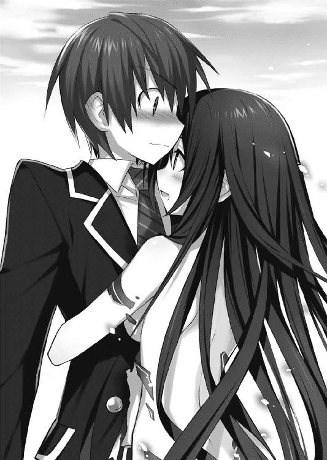
士道が言うと、数瞬の間のあと、身体の全面に再び温かい感触が生まれた。
「え──」
思わず、閉じていた目を開く。
目の前には、十香の漆黒の髪と、裸の肩があった。要は──ぴたりと、身体を触れ合わせている。
「......これで、見えまい」
「っ、あ、ああ......」
本当にこれでいいのだろうか、と思いながらも、身動きを取ることができず、そのまま固まる。
しばしのあと。
「......シドー」
十香が、消え入りそうな声を発してきた。
「なんだ？」
「また......、デェトに連れていってくれるか......？」
「ああ。そんなもん、いつだって行ってやる」
士道は、力強く首肯した。
終章 精霊のいる風景
「──以上です」
司令たる琴里しか立ち入ることの許されない〈フラクシナス〉特別通信室。
その薄暗い部屋の中心に設えられた円卓につきながら、琴里はそう言って報告を締めくくった。
精霊の攻略・回収に関連する報告を。
円卓には、琴里を含めて五人分の息づかいが感じられた。
だが──実際に〈フラクシナス〉にいるのは琴里のみである。あとのメンバーは、円卓の上に設えられたスピーカーを通してこの会議に参加していた。
『......彼の力は本物だったというわけか』
少しくぐもった声を発したのは、琴里の右手に座ったブサイクな猫のぬいぐるみだった。
まあ、正しくはぬいぐるみのすぐ前にあるスピーカーから声が発せられているのだが、琴里から見ればブサ猫が喋っているようにしか見えない。
先方にはこちらの映像が見えていないはずなので、琴里が勝手に置いたものである。
おかげで〈フラクシナス〉の最奥に位置するこの部屋は、妙にファンシーな空間になっていた。まるで不思議の国のアリスのマッド・ティーパーティーである。
「だから言ったじゃないですか。士道ならやれるって」
琴里が得意げに腕組みすると、今度は左手に座った泣き顔のネズミが静かに声を発する。
『──君の説明だけでは、信憑性が足りなかったのだよ。何しろ自己蘇生能力に......精霊の力を吸収する能力というんだ。にわかには信じられん』
琴里は肩をすくめた。
まあ、仕方のないことなのだろう。
様々な観測装置を使って、士道の特異性を確かめるために要した時間は──およそ五年。
とはいえ、その間に〈フラクシナス〉が建造され、クルーが集められたのである。タイミングとしてはちょうどよかったのだろう。
『精霊の状態は？』
次いで声を発したのは、ブサ猫の隣に座った、涎をだらっだらに垂らした間抜け極まるデザインのブルドッグだった。
「〈フラクシナス〉に収容後、経過を見ていますが──非常に安定しています。空間震や軋みも観測されません。どの程度力が残っているかは調べてみないとわかりませんが、少なくとも、『いるだけで世界を殺す』とは言い難いレベルかと」
琴里が言うと、円卓についた四匹のぬいぐるみのうち、三匹が一斉に息を詰まらせた。
『では、少なくとも現段階では、精霊がこの世界に存在していても問題ないと？』
明らかに色めき立った様子で、ブサ猫が声を上げてくる。琴里は視線に嫌悪感を滲ませながらも口調は穏やかに「ええ」と答えた。
「それどころか、自力では隣界に消失することすら困難でしょう」
『──では、彼の様態はどうなんだね。それほどまでに精霊の力を吸収したのだ。何か異常は起こっていないのかな？』
今度は、泣きネズミが問うてくる。
「現段階では異常は見られません。士道にも、世界にも」
『なんと。世界を殺す災厄だぞ？ その力を人間の身に封じて、何も異常が起こらないというのか』
バカ犬が言ってくる。
「問題が起こらないと踏んだから、彼の使用を承認したのでしょう？」
『......彼は一体、何者なのかね。そんな能力......まるで精霊ではないか』
ぬいぐるみの顔だけでなく、本当に、馬鹿だ。琴里は内心で嘆息しながらも律儀に口を開いた。
「──蘇生能力については、以前説明したとおりです。吸収能力の方は、現在調査中としか」
琴里が言うと、しばしぬいぐるみたちは黙った。
そして数秒のあと、今まで一言も喋っていなかった、クルミを抱えたリスのぬいぐるみが、静かに声を発した。
『──とにかく、ご苦労だったね、五河司令。素晴らしい成果だ。これからも期待しているよ』
「はっ」
琴里は初めて姿勢を正し、手を胸元に置いた。
◇
「............ふはあ」
あの一件から土日を挟んで、月曜日。
復興部隊の手によって完璧に復元された校舎には、もう相当数の生徒が集まっている。
そんな中士道は、気の抜けた息を吐き、ぼうっと教室の天井を眺めていた。
──あの日。
あれからすぐに気を失ってしまった士道が目を覚ますと、またも〈フラクシナス〉の医務室に寝転がされていた。
そしてその後、施設で入念なメディカルチェックを受けさせられたのだが──気を失って以降、十香の姿を見ていない。十香と話をさせろといっても、検査があるの一点張りで、結局最後まで姿を見ることすら叶わなかった。
「......あー」
十香に出会ってから、めまぐるしく過ぎていった一〇日間が嘘のように、ひたすらに何もない休日は、正直──空虚さと無力感で、死にたくなるくらいだった。
だが......一つだけ、それ以外に士道の思考に引っかかったものがある。
あの日。士道は確かに十香とキスを交わした。
その瞬間、十香の纏っていた霊装が溶け消え──それと同時に、何か自分の身体の中に、温かいものが流れ込んでくるような感覚を覚えたのである。
──あれは一体、何だったのだろうか。
「............」
無言で、唇に触れる。
もう三日も経つというのにまだその感触が残っている気がして、士道は軽く赤面した。
「......本格的に気持ち悪いぞ。何やってんだ五河」
「！ っ、殿町。いるなら気配発してろよ」
急に話しかけられ、首の位置を元に戻す。
「......普通にいたぞ。ていうか話しかけてたぞ。殿町さんは寂しいと死んじゃうんだぞ」
言いながら、無人であった前の椅子に馬乗りになって、士道の机に肘を突いてくる。
「いや、知らねえよ。ていうか自分の席戻れよ。もうすぐホームルームだぞ」
「だいじょーぶだって。どーせタマちゃん少し遅れるんだし」
「おまえ......一応担任だろ。そんな猫かアザラシみたいなあだ名やめとけよ」
「はは、いいじゃん、可愛いし。歳は離れてるけど、俺全然ストライクゾーンだわ」
「あー......じゃあプロポーズしてやれよ。多分受けてくれるぞ」
「は？ 何いってんだおまえ」
と、そこで教室のドアをガラガラと開ける音がし、士道はぴくりと肩を揺らした。
──一瞬、教室がざわつく。
それはそうだろう。何しろあの鳶一折紙が、額やら手足やらを包帯だらけにして登校してきたのだから。
「......っ！」
さすがに、息を詰まらせる。
顕現装置を用いれば、大体の怪我はすぐに治るという話だ。三日経ったというのにこれだけの包帯が残っているということは、相当に酷い怪我だったのだろう。
「............」
折紙は教室中の注目を一身に集めながら、頼りなげな足取りで、士道の目の前まで歩いてきた。
「お、おう、鳶一。無事で何より──」
気まずげに言いかけたところで、士道の視界から折紙がふっと消える。
一拍おいて、士道は折紙が深々と頭を下げていることに気づいた。
「と、鳶一......ッ!?」
教室が騒然とし、士道と折紙に視線が集中する。
しかし折紙はまるで意に介していない様子で、言葉を続けた。
「──ごめんなさい。謝って済む問題ではないけれど」
のちに聞いた話によれば──十香を狙っていたあの一撃は、折紙が放ったものだったという。それを詫びているのだろう。
「な......五河、おまえ鳶一に何かしたのか......？」
「しとらんわ！ してたら俺が謝る方だろうが！」
訝しげな視線を送ってくる殿町に返す。
とはいえ、詳しい事情を説明できるはずもない。士道は折紙に向き直った。
「い、いいから、とりあえず頭を上げてくれ......」
士道が言うと、折紙は存外素直に姿勢を戻した。
「でも──」
と、次の瞬間、士道のネクタイが根元から引っ張られる。
「ぃ──っ!?」
折紙は、そのひんやりとした表情をまったく変えないまま、顔を近づけてきた。
「浮気は、駄目」
「..................は？」
士道をはじめ、折紙の挙動に注目していたクラスの面々の目が、点になる。
と、それに合わせるように、ホームルームの開始を告げるチャイムが鳴った。
クラスの面々は興味深そうに折紙と士道の方を眺めながらも、自分の席に着いていく。
だが、折紙だけはそのまま、士道の顔をジッと見つめてきていた。
と、そこに救いの女神が現れる。
「はーい、皆さーん。ホームルーム始めますよぉー」
扉を開け、タマちゃん教諭が教室に入ってきたのである。
「......？ と、鳶一さん、何してるんですかぁ？」
「............」
折紙は無言のまま珠恵を一瞥すると、士道のネクタイを離して自分の席に戻っていった。
とはいえ、そこは士道のすぐ隣。安堵の息も吐けない。
「は、はい、皆さん席に着きましたね？」
教室の不穏な空気を感じ取ってか、珠恵がやたら元気な声を上げる。
次いで、思いだしたかのように手を打ち、うんうんとうなずいた。
「そうそう、今日は出席を取る前にサプラーイズがあるの！──入ってきて！」
言って、今し方自分が入ってきた扉に向かって声をかける。
「ん」
と──それに応えるようにそんな声がして。
「な......」
「────」
士道と折紙の驚愕とともに。
「──今日から厄介になる、夜刀神十香だ。皆よろしく頼む」
高校の制服を着た十香が、ものっすごくいい笑顔をしながら入ってきた。
見ているだけで目が痛くなるほどの美しさに、クラス中が騒然とする。
十香はそんな視線など意に介さず、チョークを手に取ると、下手くそな字で黒板に『十香』とだけ書いた。そして満足げに「うむ」とうなずく。
「な、おまえ、なんで......」
「ぬ？」
言うと、十香が視線を向けてきた。不思議な輝きを放つ、幻想的な光彩。
「おお、シドー！ 会いたかったぞ！」
そして大声で士道の名を呼び、ぴょんと飛び跳ねて士道の席の真横──ちょうど、ついさっきまで折紙が立っていた位置までやってくる。
再び、士道はクラス中から注目を浴びた。
ざわざわ、ざわざわ。あたりから、二人の関係を邪推する声や、先ほどの折紙との関連性を勘ぐるような声が聞こえてくる。
士道は額に汗を浮かばせて、生徒たちに聞こえないよう小さく声を発した。
「と、十香......？ どうしてこんなとこにいるんだ？」
「ん、検査とやらが終わってな。──どうやら、私の身体から、力が九割以上消失してしまったらしい」
十香も士道の真似をしてか、小さな声で言ってくる。
「まあ──とはいえ怪我の功名だ。私が存在しているだけでは、世界は啼かなくなったのだ。それでまあ、おまえの妹がいろいろしてくれた」
「み、苗字は......？」
「何といったかな、あの眠そうな女がつけてくれた」
「あいつら......っ」
士道は頭をくしゃくしゃとやって机に突っ伏した。
十香を自由にしてくれたのはありがたいが、他にやりようというものがあるだろう。
しかし十香は何食わぬ顔で、
「なんだ、シドー。元気がないな。──ああ、もしや私がいなかったので寂しかったのか？」
なんて、冗談めかす調子もなく、そんなことを言ってきた。
しかも、周りの皆に聞こえるくらいの大きさで。
クラスのざわめきが、最高潮に達する。
士道はこの上ない居心地の悪さを感じながらも、なんとか声を上げた。
「おま......ッ、変なこと言うんじゃねえよ」
「なんだ、つれないな。あのときはあんなに荒々しく私を求めてくれたというのに」
言って両手で頬を覆い、「やーん」と恥ずかしそうな顔を作る。
『────っ!?』
周囲の空気が変わるのが、わかった。なんかもう中には机の陰でメールを打っている者さえいる。これでは一瞬のうちに学校中に士道の名が知れ渡ってしまうだろう。
士道はあえて大きな声を張り上げた。
「ち、違うだろ十香！ そ、そんな言い方したら、みんなに誤解されちまうじゃねえかあ！」
「ぬ？ 誤解などと言い張るのか？ 私は初めてだったのに......」
『──────、............ッ!?』
──致命打。多分、琴里とか令音に、余計な入れ知恵をされている。
クラスの面々が、教諭の制止も聞かずに騒ぎ出す。
と、瞬間──十香が士道に近づけていた顔を右に動かした。
「え......？」
呆気に取られる士道の目の前を、ペンと思しきものが凄まじい速さで横切っていく。
「うわッ!?」
驚き、その出所を見る。そこには、たった今ペンを放った格好のまま、冷たい視線を向けてくる折紙の姿があった。
「......ぬ？」
「............」
十香と折紙。二人の視線が混じり合う。
「ぬ、なぜ貴様がこんなところにいる？」
「それは、私の台詞」
まさに一触即発。
──しかし二人とも、ここで戦闘をやらかそうという気はないようだった。
それはそうだろう。片や力のほとんどを失った状態、片や装備もなく、怪我をした状態なのだ。
「は、はい！ おしまい！ おしまいにしましょう！ ねー！ 仲良く！」
岡峰教諭が慌てた様子で二人の間に割って入り、どうにかその場は水入りとなった。
だが。
「じゃあ、夜刀神さんの席は──」
先生が十香の席を探し始めると、
「無用だ。──退け」
十香は、士道の隣──折紙の反対側に座っていた生徒に、鋭い眼光を放った。
「ひ、ひぃぃぃっ！」
そのプレッシャーに圧され、座っていた女子生徒が椅子から転げ落ちる。
「ん、すまんな」
言うと十香は悠然とそこに腰掛け、士道の方に視線を送ってきた。
だがそうなると、視線が混じるのは士道ではなく折紙になるわけで。
「............」
「............」
二人して、無言で睨み合う。
いや、十香がこちらの世界に居続けることができるようになったのは、士道としても嬉しいのだ。いろいろと手を回してくれた琴里たちにも感謝している。
それに、折紙が生きていてくれた件に関しても、正直安堵している自分がいた。
これはきっと、最高の決着と言える状況なのだろう。
だが、これは......
「おおう......」
士道は、左右両側から発せられる、怪光線のような眼光に晒され、頭を抱えた。
あとがき
はじめましてお久しぶりです橘公司です。矛盾。
『デート・ア・ライブ 十香デッドエンド』いかがでしたでしょうか。
本作の最初の着想は、「秘密組織のメンバーがみんなで大マジメにギャルゲーやってたらなんかシュールじゃね？」です。
こう、艦橋の大画面にバストアップの二次元美少女が映ってて、艦長とかが頬に汗垂らしながら選択肢選んで、女の子の反応が悪いと、「な......ッ、なんだと......!?」ビーッ、ビーッ！ エマージェンシー、エマージェンシー！ ってなるような。気をしっかり持つんだロドリー！ たかが好感度が下がっただけじゃあないか！ 衛生兵！ 衛生兵ッ!!
それを根幹に、いろいろ味を調えてみたらこんなお話になりました。お楽しみいただけたなら幸いです。
ナンバリングはついていませんが、続く予定です。次のページに予告が載っているはずですので、是非ご覧くださいませ。
ちなみに拙著『蒼穹のカルマ』の方もまだ続いておりますので、もし本作がお気に召したなら、チラ見していただけると幸いです。
さて、本作は、様々な方のご尽力によって形作られています。
まずはなんといっても、イラストレーターのつなこさん。もうキャラデザの段階で度肝を抜かれました。なんなのあの数とクオリティ。マジでもう全部公開したいレベルです。
このお話が売れたらそういう機会もあるかもしれないので......ほら、ね（目配せ）。
担当さんをはじめとする関係者の皆様にも、大変お世話になりました。
本は一人じゃ作れないんだなあ、なんて初歩的なことを、実感しまくっております。
そしてなにより、この本を手にとってくださったあなたに、最大限の感謝を。
では、次は......ええと、これの二巻かカルマの八巻でお会いしましょう。
橘 公司
デート・ア・ライブ
十香デッドエンド
橘 公司
平成23年12月1日 発行
発行者 山下直久
発行所 株式会社富士見書房
〒102-8144 東京都千代田区富士見1-12-14
http://www.fujimishobo.co.jp/
(C)2011 Koushi Tachibana, Tsunako/Fujimishobo